Limits and Continuity. Canonical source for downstream resources; preserve Bank IDs and wording.
What's To Come
Section 1.1 - What Is a Limit?
U1-S1-WTC01
Section 1.1 | What's To Come | N/A | DOK 2
A function and a set of secant slopes are sampled near the same input.
$x$
1.9
1.99
1.999
2.001
2.01
2.1
$f(x)$
3.7
3.97
3.997
4.003
4.03
4.3
Secant interval width
1
0.5
0.1
0.01
Secant slope
7.1
6.5
6.1
6.01
What output value appears to be approached as $x\to2$?
What instantaneous slope would you predict from the secant data?
If a separate point gives $f(2)=9$, which conclusion from part (a) should you reconsider, if any? Explain.
Answer / Solution:
$4$.
Approximately $6$.
The limit estimate should not change. A separate function value at the target does not determine the limit.
Section 1.2 - Limits from Graphs and Tables
U1-S2-WTC01
Section 1.2 | What's To Come | N/A | DOK 2
The table records values of $g$ as $x$ approaches 0 from both sides.
$x$
-0.1
-0.01
-0.001
0.001
0.01
0.1
$g(x)$
-1.2
-1.02
-1.002
5.002
5.02
5.2
Describe what the left side appears to approach.
Describe what the right side appears to approach.
Predict whether a two-sided limit should exist and identify the evidence that controls the decision.
If $g(0)=3$, does that value settle the two-sided-limit question?
Answer / Solution:
$-1$.
$5$.
The two-sided limit is DNE because the one-sided limits disagree.
No. The one-sided behavior, not the isolated function value, controls the two-sided limit.
Section 1.3 - Algebraic Limits
U1-S3-WTC01
Section 1.3 | What's To Come | N/A | DOK 3
Without fully evaluating every limit, annotate the form of each expression and identify the most promising first method.
$\lim_{x\to2}(x^2+4x-1)$
$\lim_{x\to3}\frac{x^2-9}{x-3}$
$\lim_{x\to9}\frac{\sqrt{x}-3}{x-9}$
$\lim_{x\to0}\frac{\sin(6x)}{x}$
If $-x^2\le h(x)\le x^2$ near 0, determine what theorem could settle $\lim_{x\to0}h(x)$.
Then choose one pair of cases and explain what feature of the expression or conditions signals the method.
Answer / Solution:
Direct substitution.
Factoring and cancellation.
Conjugate/rationalization.
Standard trigonometric limit.
Squeeze Theorem.
A valid explanation should connect the visible form or stated bounds to the chosen method.
Section 1.4 - Continuity and Discontinuity
U1-S4-WTC01
Section 1.4 | What's To Come | N/A | DOK 2
Four points on different functions have the following local behavior.
Case
Left-hand behavior
Right-hand behavior
Function value
A
approaches 3
approaches 3
3
B
approaches 2
approaches 2
5
C
approaches -1
approaches 4
4
D
decreases without bound
increases without bound
undefined
Which case is continuous?
Which case appears removable?
Which case appears to be a jump?
Which case appears infinite?
Which discontinuity can be repaired by changing only one function value?
Answer / Solution:
A.
B.
C.
D.
B, the removable discontinuity.
Section 1.5 - Asymptotes and IVT
U1-S5-WTC01
Section 1.5 | What's To Come | N/A | DOK 3
Consider the rational model $R(x)=2+\frac{3}{x-1}$ and a different function $Q$ that is continuous on $[0,5]$ with $Q(0)=-2$ and $Q(5)=6$.
Predict the vertical and horizontal asymptotes of $R$ and write one limit statement supporting each prediction.
Does the Intermediate Value Theorem guarantee some $c\in(0,5)$ with $Q(c)=3$? State the hypotheses you are using.
Would your IVT conclusion change if $Q$ had a jump inside the interval? Explain.
Answer / Solution:
Vertical asymptote $x=1$; for example $\lim_{x\to1^+}R(x)=\infty$. Horizontal asymptote $y=2$; for example $\lim_{x\to\infty}R(x)=2$.
Yes. $Q$ is continuous on the interval and 3 lies between the endpoint values -2 and 6.
Yes. A jump would violate the continuity hypothesis, so IVT would no longer provide the guarantee.
Notes - Examples / You Try Its
Section 1.1 - What Is a Limit?
U1-S1-NOTE-EX01
Section 1.1 | Notes | Current | DOK 2
Use the numerical evidence to analyze the limit near $x=-1$.
$x$
-1.5
-1.1
-1.01
-0.99
-0.9
-0.5
$h(x)$
6.5
6.1
6.01
6.01
6.1
6.5
Estimate $\lim_{x\to -1}h(x)$.
Describe the evidence from the left and from the right that supports your estimate.
If $h(-1)=12$, does that information change the limit? Explain.
Answer / Solution:
$6$.
Values on both sides get closer to 6 as $x$ gets closer to -1.
No. The limit depends on nearby behavior; the function value at $x=-1$ may be different.
U1-S1-NOTE-YTI01
Section 1.1 | Notes | Current | DOK 2
Use the table to analyze the behavior of $g$ near $x=2$.
$x$
1.5
1.9
1.99
2.01
2.1
2.5
$g(x)$
-2.5
-2.9
-2.99
-3.01
-3.1
-3.5
Estimate $\lim_{x\to2}g(x)$.
State what the left-side and right-side values are doing.
If $g(2)=4$, compare the function value with the limit.
Answer / Solution:
$-3$.
From both sides the values approach -3.
$g(2)=4$ while the limit is -3; they do not have to be equal.
U1-S1-NOTE-EX02
Section 1.1 | Notes | Current | DOK 2
The graph of $f$ is shown.
Graph of $f$.
Estimate $\lim_{x\to2}f(x)$.
Read the plotted value $f(2)$.
Explain why the answers to parts (a) and (b) can be different.
Answer / Solution:
$3$.
$f(2)=-1$.
The limit describes nearby values approaching $x=2$, while $f(2)$ is the value assigned at the point itself.
U1-S1-NOTE-YTI02
Section 1.1 | Notes | Current | DOK 2
A table of nearby values is shown, but the row at the target input is not included.
$x$
-0.1
-0.01
-0.001
0.001
0.01
0.1
$p(x)$
-4.2
-4.02
-4.002
-3.998
-3.98
-3.8
Estimate $\lim_{x\to0}p(x)$.
Can the finite limit be estimated even though $p(0)$ is not shown?
Explain your answer to part (b) in one sentence.
Answer / Solution:
$-4$.
Yes.
A limit is determined by values arbitrarily close to the target input, not by whether the function value at the target is displayed or defined.
U1-S1-NOTE-EX03
Section 1.1 | Notes | Current | DOK 2
Secant slopes are computed using one fixed endpoint at $x=-2$ and a second endpoint that moves closer to $-2$.
Second endpoint
-1
-1.5
-1.9
-1.99
Secant slope
4.8
5.4
5.88
5.988
Estimate the instantaneous slope at $x=-2$.
Which listed secant slope is the best approximation, and why?
Explain how shrinking the interval connects average rate of change to instantaneous rate of change.
Answer / Solution:
Approximately $6$.
$5.988$ because its second endpoint is closest to -2.
Each secant slope is an average rate of change; as the interval shrinks, those averages approach the instantaneous rate at the fixed point.
U1-S1-NOTE-YTI03
Section 1.1 | Notes | Current | DOK 2
A position function is sampled using secant intervals that begin at $t=3$ seconds.
Interval
$[3,4]$
$[3,3.5]$
$[3,3.1]$
$[3,3.01]$
Average velocity (m/s)
9.0
8.5
8.1
8.01
Estimate the instantaneous velocity at $t=3$.
Which interval gives the strongest listed estimate?
Describe what happens to the average velocities as the interval width approaches 0.
Answer / Solution:
Approximately $8$ m/s.
$[3,3.01]$.
The average velocities approach 8 m/s as the interval width approaches 0.
U1-S1-NOTE-EX04
Section 1.1 | Notes | Current | DOK 2
Connect words, notation, and meaning.
Write in limit notation: as $x$ approaches 0, the values of $g(x)$ approach 4.
Interpret $\lim_{t\to5}P(t)=12$ in words.
Does $\lim_{t\to5}P(t)=12$ by itself tell you the value of $P(5)$? Explain briefly.
Answer / Solution:
$\lim_{x\to0}g(x)=4$.
As $t$ approaches 5, the values of $P(t)$ approach 12.
No. The limit describes nearby behavior and does not by itself determine the function value at $t=5$.
U1-S1-NOTE-YTI04
Section 1.1 | Notes | Current | DOK 2
Translate between limit notation and verbal meaning.
Write in limit notation: as $x$ approaches -2, the values of $q(x)$ approach 7.
Interpret $\lim_{x\to3}r(x)=-5$ in words.
If $r(3)=1$, are the function value and the limit equal?
Answer / Solution:
$\lim_{x\to-2}q(x)=7$.
As $x$ approaches 3, the values of $r(x)$ approach -5.
No. $r(3)=1$ while the limit is -5.
Section 1.2 - Limits from Graphs and Tables
U1-S2-NOTE-EX01
Section 1.2 | Notes | Current | DOK 2
Use the table to analyze both sides of $x=0$.
$x$
-0.1
-0.01
-0.001
0.001
0.01
0.1
$f(x)$
-2.2
-2.03
-2.003
3.003
3.03
3.2
Estimate $\lim_{x\to0^-}f(x)$.
Estimate $\lim_{x\to0^+}f(x)$.
Determine $\lim_{x\to0}f(x)$, if it exists, and justify the conclusion.
Answer / Solution:
$-2$.
$3$.
DNE because the one-sided limits are different.
U1-S2-NOTE-YTI01
Section 1.2 | Notes | Current | DOK 2
Use the table to analyze the behavior near $x=-1$.
$x$
-1.1
-1.01
-1.001
-0.999
-0.99
-0.9
$f(x)$
-3.2
-3.03
-3.003
-2.997
-2.97
-2.8
Find the left-hand limit.
Find the right-hand limit.
Determine the two-sided limit and explain why it exists.
Answer / Solution:
$-3$.
$-3$.
$-3$ because both one-sided limits exist and are equal.
U1-S2-NOTE-EX02
Section 1.2 | Notes | Current | DOK 2
Use the graph to compare one-sided behavior at $x=1$.
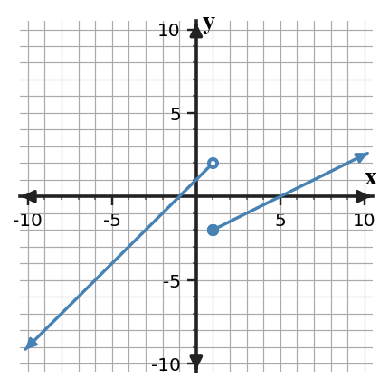
Graph of $f$.
Find $\lim_{x\to1^-}f(x)$.
Find $\lim_{x\to1^+}f(x)$.
Determine $\lim_{x\to1}f(x)$, if it exists.
State the specific evidence that controls the answer to part (c).
Answer / Solution:
$2$.
$-2$.
DNE.
The left-hand and right-hand limits are different.
U1-S2-NOTE-YTI02
Section 1.2 | Notes | Current | DOK 2
A student reads only the entries with $x\lt2$ and reports the two-sided limit as 4.
$x$
1.9
1.99
1.999
2.001
2.01
2.1
$f(x)$
3.8
3.97
3.997
9.003
9.03
9.2
Estimate the left-hand limit.
Estimate the right-hand limit.
Evaluate the student's conclusion and identify what evidence was ignored.
Answer / Solution:
$4$.
$9$.
The conclusion is incorrect. The student ignored the right-hand behavior, so the two-sided limit is DNE.
U1-S2-NOTE-EX03
Section 1.2 | Notes | Current | DOK 2
For each case, determine the two-sided limit from the one-sided information.
$\lim_{x\to3^-}f(x)=-2$ and $\lim_{x\to3^+}f(x)=1$.
$\lim_{x\to4^-}g(x)=5$ and $\lim_{x\to4^+}g(x)=5$.
$h(2)$ is undefined, but $\lim_{x\to2^-}h(x)=\lim_{x\to2^+}h(x)=7$.
Answer / Solution:
DNE because the one-sided limits differ.
$5$ because the one-sided limits are equal.
$7$. The function can be undefined at the point while the limit still exists.
U1-S2-NOTE-YTI03
Section 1.2 | Notes | Current | DOK 2
Use the one-sided information to decide each two-sided limit.
$\lim_{x\to-1^-}p(x)=6$ and $\lim_{x\to-1^+}p(x)=6$.
$\lim_{x\to5^-}q(x)=0$ and $\lim_{x\to5^+}q(x)=3$.
$r(0)=12$, but $\lim_{x\to0^-}r(x)=\lim_{x\to0^+}r(x)=-4$.
Answer / Solution:
$6$.
DNE.
$-4$; the separate value $r(0)=12$ does not change the limit.
U1-S2-NOTE-EX04
Section 1.2 | Notes | Current | DOK 1
Write the correct one-sided limit notation for each description.
$g(x)$ as $x$ approaches -2 from values greater than -2.
$p(t)$ as $t$ approaches 1 from values less than 1.
$R(s)$ as $s$ approaches 4 from the right.
$H(x)$ as $x$ approaches 0 from the left.
Answer / Solution:
$\lim_{x\to-2^+}g(x)$.
$\lim_{t\to1^-}p(t)$.
$\lim_{s\to4^+}R(s)$.
$\lim_{x\to0^-}H(x)$.
U1-S2-NOTE-YTI04
Section 1.2 | Notes | Current | DOK 1
Translate each statement into one-sided limit notation.
$f(x)$ as $x$ approaches 3 through values smaller than 3.
$k(x)$ as $x$ approaches -5 through values larger than -5.
$M(t)$ as $t$ approaches 2 from the left.
$N(t)$ as $t$ approaches 7 from the right.
Answer / Solution:
$\lim_{x\to3^-}f(x)$.
$\lim_{x\to-5^+}k(x)$.
$\lim_{t\to2^-}M(t)$.
$\lim_{t\to7^+}N(t)$.
Section 1.3 - Algebraic Limits
U1-S3-NOTE-EX01
Section 1.3 | Notes | Current | DOK 2
Use direct substitution and limit laws where they apply.
Evaluate $\lim_{x\to-3}(3x^2+2x-3)$.
Given $\lim_{x\to2}f(x)=5$ and $\lim_{x\to2}g(x)=-1$, evaluate $\lim_{x\to2}[2f(x)+3g(x)]$.
State why direct substitution is valid for the polynomial in part (a).
Answer / Solution:
$18$.
$2(5)+3(-1)=7$.
Polynomials are continuous, so their limits can be evaluated by direct substitution.
U1-S3-NOTE-YTI01
Section 1.3 | Notes | Current | DOK 2
Apply direct substitution and limit laws.
Evaluate $\lim_{x\to2}(x^3-4x+1)$.
Given $\lim_{x\to-1}p(x)=4$ and $\lim_{x\to-1}q(x)=2$, evaluate $\lim_{x\to-1}[3p(x)-q(x)]$.
Explain why an indeterminate form is not produced in either part.
Answer / Solution:
$1$.
$3(4)-2=10$.
Each limit can be evaluated directly because the relevant expressions have finite limits and no zero denominator or other indeterminate form occurs.
U1-S3-NOTE-EX02
Section 1.3 | Notes | Current | DOK 2
Use factoring to remove a common factor that creates an indeterminate form.
Evaluate $\lim_{x\to3}\frac{x^2-9}{x-3}$.
Evaluate $\lim_{x\to-2}\frac{x^2+5x+6}{x+2}$.
Explain why canceling the common factor is legitimate for a limit even though the original expressions are undefined at the target input.
Answer / Solution:
$\lim_{x\to3}(x+3)=6$.
$\lim_{x\to-2}(x+3)=1$.
A limit depends on nearby values. The original and simplified expressions agree for all nearby inputs except the target point.
U1-S3-NOTE-YTI02
Section 1.3 | Notes | Current | DOK 2
Factor, simplify, and evaluate each limit.
$\lim_{x\to1}\frac{x^2-1}{x-1}$.
$\lim_{x\to4}\frac{x^2-7x+12}{x-4}$.
For one part, identify the factor whose cancellation resolves the $0/0$ form.
Answer / Solution:
$2$ after canceling $x-1$.
$1$ after factoring $(x-3)(x-4)$ and canceling $x-4$.
Part (a): $x-1$; part (b): $x-4$. Either correct identification earns the explanation.
U1-S3-NOTE-EX03
Section 1.3 | Notes | Current | DOK 2
Different forms call for different algebraic or theorem-based tools.
Evaluate $\lim_{x\to9}\frac{\sqrt{x}-3}{x-9}$ using a conjugate.
Evaluate $\lim_{x\to0}\frac{\sin(5x)}{x}$ using a standard trigonometric limit.
If $-x^2\le h(x)\le x^2$ for $x$ near 0, determine $\lim_{x\to0}h(x)$.
Answer / Solution:
Multiply by the conjugate to obtain $\frac{1}{\sqrt{x}+3}$, so the limit is $\frac16$.
$5$ because $\frac{\sin(5x)}{x}=5\frac{\sin(5x)}{5x}$.
$0$ by the Squeeze Theorem because both bounding functions approach 0.
U1-S3-NOTE-YTI03
Section 1.3 | Notes | Current | DOK 2
Choose and carry out an appropriate method for each limit.
$\lim_{x\to16}\frac{\sqrt{x}-4}{x-16}$.
$\lim_{x\to0}\frac{\sin(3x)}{x}$.
If $2-x^2\le k(x)\le2+x^2$ near 0, determine $\lim_{x\to0}k(x)$.
Answer / Solution:
$\frac18$ after multiplying by the conjugate.
$3$.
$2$ by the Squeeze Theorem.
U1-S3-NOTE-EX04
Section 1.3 | Notes | Current | DOK 3
For each limit, identify the most efficient first method. Do not solve parts (a)-(d) unless needed to justify your choice.
$\lim_{x\to2}(x^2+3x-1)$
$\lim_{x\to5}\frac{x^2-25}{x-5}$
$\lim_{x\to4}\frac{\sqrt{x}-2}{x-4}$
$\lim_{x\to0}\frac{\sin(7x)}{x}$
For part (b), compare immediate substitution with factoring. Why is one a stopping point only temporarily?
Answer / Solution:
Direct substitution.
Factor and cancel.
Multiply by the conjugate.
Use the standard trigonometric limit.
Immediate substitution gives $0/0$, an indeterminate form; factoring creates an equivalent nearby expression whose limit can be evaluated.
U1-S3-NOTE-YTI04
Section 1.3 | Notes | Current | DOK 3
Select the best first method for each limit, then justify one of your choices.
$\lim_{x\to-1}(2x^3+x+4)$
$\lim_{x\to3}\frac{x^2-6x+9}{x-3}$
$\lim_{x\to25}\frac{\sqrt{x}-5}{x-25}$
$\lim_{x\to0}\frac{\sin(4x)}{x}$
Choose either part (b) or (c) and explain how the form of the expression points to the method.
Answer / Solution:
Direct substitution.
Factor and cancel.
Multiply by the conjugate.
Use the standard trigonometric limit.
Part (b): the polynomial numerator factors and shares $x-3$ with the denominator. Part (c): the difference of square roots suggests rationalizing with a conjugate.
Section 1.4 - Continuity and Discontinuity
U1-S4-NOTE-EX01
Section 1.4 | Notes | Current | DOK 2
At each point, check all three conditions for continuity: the function value exists, the two-sided limit exists, and the two are equal.
At $x=2$, $f(2)=5$, $\lim_{x\to2^-}f(x)=5$, and $\lim_{x\to2^+}f(x)=5$. Is $f$ continuous?
At $x=4$, $g(4)=1$, while both one-sided limits equal 3. Is $g$ continuous? Identify the failed condition.
At $x=-1$, $h(-1)$ exists, but the left-hand limit is 2 and the right-hand limit is 6. Is $h$ continuous? Identify the failed condition.
Answer / Solution:
Yes; all three continuity conditions are satisfied.
No. The two-sided limit is 3, but it does not equal $g(4)=1$.
No. The two-sided limit does not exist because the one-sided limits differ.
U1-S4-NOTE-YTI01
Section 1.4 | Notes | Current | DOK 2
Use the three continuity conditions to analyze each point.
At $x=0$, $p(0)=-2$ and both one-sided limits equal -2.
At $x=3$, $q(3)=7$ and both one-sided limits equal 4.
At $x=5$, $r(5)$ exists, but the left-hand limit is 1 and the right-hand limit is -1.
Answer / Solution:
Continuous.
Not continuous because the limit 4 does not equal the function value 7.
Not continuous because the two-sided limit does not exist.
U1-S4-NOTE-EX02
Section 1.4 | Notes | Current | DOK 2
Choose parameter values that make each piecewise function continuous at its boundary.
Find $k$ so $f(x)=\begin{cases}4x-2,&x\lt-2\k,&x\ge-2\end{cases}$ is continuous at $x=-2$.
Find $m$ so $g(x)=\begin{cases}2x+m,&x\le1\\5x-4,&x\gt1\end{cases}$ is continuous at $x=1$.
State the equation you set up in each part to match the two sides.
Answer / Solution:
$k=4(-2)-2=-10$.
$2(1)+m=5(1)-4=1$, so $m=-1$.
Set the boundary expressions equal because continuity requires the one-sided values to agree at the boundary.
U1-S4-NOTE-YTI02
Section 1.4 | Notes | Current | DOK 2
Determine the parameter that removes the break at each piecewise boundary.
$p(x)=\begin{cases}3x+1,&x\le2\x+k,&x\gt2\end{cases}$ at $x=2$.
$q(x)=\begin{cases}mx-2,&x\lt-1\\4x+3,&x\ge-1\end{cases}$ at $x=-1$.
For one part, verify the common boundary value after finding the parameter.
Answer / Solution:
$3(2)+1=2+k$, so $k=5$ and the common value is 7.
$-m-2=-1$, so $m=-1$ and the common value is -1.
Either verification above is sufficient.
U1-S4-NOTE-EX03
Section 1.4 | Notes | Current | DOK 2
Classify each discontinuity and justify the classification from the evidence.
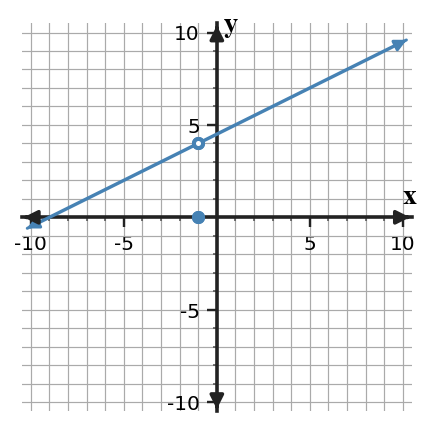
Case A.
Case A: classify the discontinuity at $x=-1$ in the graph and state how to make the function continuous there.
Case B: at $x=2$, the left-hand limit is -1 and the right-hand limit is 4. Classify the discontinuity.
Case C: as $x\to3^-$, $f(x)\to-\infty$, and as $x\to3^+$, $f(x)\to\infty$. Classify the discontinuity.
Answer / Solution:
Removable. The nearby graph approaches 4, so redefine $f(-1)=4$.
Jump discontinuity because the finite one-sided limits are different.
Infinite discontinuity; the unbounded behavior indicates a vertical asymptote at $x=3$.
U1-S4-NOTE-YTI03
Section 1.4 | Notes | Current | DOK 2
Classify the discontinuity in each case.
Both one-sided limits at $x=1$ equal 6, but $f(1)$ is undefined.
The left-hand limit at $x=-2$ is 3 and the right-hand limit is -4.
$g(x)$ grows without bound in magnitude as $x$ approaches 5 from either side.
For one case, state the evidence that distinguishes it from the other two.
Answer / Solution:
Removable discontinuity.
Jump discontinuity.
Infinite discontinuity.
Examples: removable has a finite common two-sided limit; jump has unequal finite one-sided limits; infinite has unbounded behavior.
U1-S4-NOTE-EX04
Section 1.4 | Notes | Current | DOK 3
A function is continuous on $(-5,2)$ and $(2,7)$, has a jump at $x=2$, and has a removable hole at $x=-1$ that is filled by redefining $f(-1)$ to equal its limit.
After the hole is repaired, write the intervals of continuity.
A student says, "Any function with a hole has no limit at the hole." Critique the statement.
Explain why repairing a removable discontinuity is different from trying to repair a jump by changing only one function value.
Answer / Solution:
$(-5,2)\cup(2,7)$.
The statement is false. A hole can have a finite two-sided limit if both sides approach the same value.
A removable discontinuity can be fixed by assigning the common limit value. A jump has different one-sided limits, so changing one point cannot make those sides agree.
U1-S4-NOTE-YTI04
Section 1.4 | Notes | Current | DOK 3
A function has a removable discontinuity at $x=0$ and a jump at $x=4$.
If the two-sided limit at $x=0$ is -3, what value should be assigned to $f(0)$ to repair the hole?
If the one-sided limits at $x=4$ are 2 and 7, can redefining $f(4)$ make the function continuous there? Explain.
Write a sentence comparing what the limit evidence looks like at the two discontinuities.
Answer / Solution:
$f(0)=-3$.
No. The one-sided limits are different, so the two-sided limit does not exist; one point value cannot repair that.
At the removable discontinuity both sides approach the same finite value; at the jump they approach different finite values.
Section 1.5 - Asymptotes and IVT
U1-S5-NOTE-EX01
Section 1.5 | Notes | Current | DOK 2
Use the graph to connect asymptotes with limit statements.
Graph of $f$.
Identify the vertical asymptote.
Identify the horizontal asymptote.
Write one one-sided infinite-limit statement that supports the vertical asymptote.
Write one limit-at-infinity statement that supports the horizontal asymptote.
Answer / Solution:
$x=2$.
$y=1$.
For example, $\lim_{x\to2^+}f(x)=\infty$ or $\lim_{x\to2^-}f(x)=-\infty$.
For example, $\lim_{x\to\infty}f(x)=1$.
U1-S5-NOTE-YTI01
Section 1.5 | Notes | Current | DOK 2
For $g(x)=2+\frac{4}{x+1}$, connect the formula to asymptotic behavior.
Identify the vertical asymptote.
Identify the horizontal asymptote.
Write a one-sided infinite-limit statement near the vertical asymptote.
Write a limit-at-infinity statement for the horizontal asymptote.
Answer / Solution:
$x=-1$.
$y=2$.
For example, $\lim_{x\to-1^+}g(x)=\infty$ or $\lim_{x\to-1^-}g(x)=-\infty$.
$\lim_{x\to\infty}g(x)=2$ (also true as $x\to-\infty$).
U1-S5-NOTE-EX02
Section 1.5 | Notes | Current | DOK 2
Interpret infinite limits and limits at infinity for two rational functions.
For $f(x)=-3+\frac{2}{x-1}$, determine $\lim_{x\to\infty}f(x)$ and state the horizontal asymptote.
For $p(x)=\frac{1}{x-2}$, determine the vertical asymptote and describe the sign of the one-sided infinite limits.
Explain the difference between a vertical asymptote statement and a horizontal asymptote statement.
Answer / Solution:
The limit is $-3$; horizontal asymptote $y=-3$.
Vertical asymptote $x=2$; $\lim_{x\to2^-}p(x)=-\infty$ and $\lim_{x\to2^+}p(x)=\infty$.
Vertical asymptotes describe unbounded output as the input approaches a finite value; horizontal asymptotes describe end behavior as the input grows without bound.
U1-S5-NOTE-YTI02
Section 1.5 | Notes | Current | DOK 2
Analyze the asymptotic behavior of $q(x)=4-\frac{3}{x+2}$.
Find $\lim_{x\to\infty}q(x)$ and identify the horizontal asymptote.
Identify the vertical asymptote.
Determine the signs of $\lim_{x\to-2^-}q(x)$ and $\lim_{x\to-2^+}q(x)$.
Answer / Solution:
$4$; horizontal asymptote $y=4$.
$x=-2$.
$\lim_{x\to-2^-}q(x)=\infty$ and $\lim_{x\to-2^+}q(x)=-\infty$.
U1-S5-NOTE-EX03
Section 1.5 | Notes | Current | DOK 3
Decide whether the Intermediate Value Theorem (IVT) guarantees the requested value.
$f$ is continuous on $[1,5]$, $f(1)=-2$, and $f(5)=7$. Does IVT guarantee some $c\in(1,5)$ with $f(c)=4$?
The same endpoint values are known, but $f$ has a jump at $x=3$. Is the guarantee still valid?
If IVT guarantees at least one solution to $f(x)=4$, does it guarantee exactly one? Explain.
Answer / Solution:
Yes. Continuity is given and 4 lies between -2 and 7.
No. Continuity on the full interval is required.
No. IVT guarantees existence, not uniqueness.
U1-S5-NOTE-YTI03
Section 1.5 | Notes | Current | DOK 3
Apply IVT conditions to three scenarios.
$g$ is continuous on $[-2,3]$, $g(-2)=6$, and $g(3)=-1$. Does IVT guarantee a zero?
The endpoint values are the same as in part (a), but continuity is not known. What can you conclude from IVT?
$h$ is continuous on $[0,4]$, $h(0)=5$, and $h(4)=9$. Does IVT guarantee a point where $h(c)=2$?
Answer / Solution:
Yes; 0 lies between -1 and 6.
No IVT guarantee can be made because continuity is not established.
No. The target value 2 is not between the endpoint values 5 and 9.
U1-S5-NOTE-EX04
Section 1.5 | Notes | Current | DOK 3
Evaluate common claims about asymptotes and IVT.
A model satisfies $\lim_{t\to\infty}M(t)=120$. Interpret this statement in context.
A student says a graph can never cross its horizontal asymptote. Evaluate the claim.
A continuous function has $f(0)=-3$ and $f(4)=5$. State what IVT guarantees about a zero and what it does not guarantee.
Answer / Solution:
As time grows large, the model values approach 120.
The claim is false. A horizontal asymptote describes end behavior and may be crossed at finite inputs.
IVT guarantees at least one $c\in(0,4)$ with $f(c)=0$; it does not guarantee uniqueness.
U1-S5-NOTE-YTI04
Section 1.5 | Notes | Current | DOK 3
Use asymptotic and theorem language precisely.
If $\lim_{x\to-\infty}R(x)=3$ and $\lim_{x\to\infty}R(x)=3$, state the horizontal asymptote suggested by both ends.
Can $R$ cross that horizontal asymptote? Explain briefly.
A continuous function on $[2,8]$ has values $F(2)=1$ and $F(8)=10$. Does IVT guarantee a point where $F(c)=7$? Does it guarantee exactly one?
Answer / Solution:
$y=3$.
Yes. Horizontal asymptotes describe end behavior rather than an uncrossable barrier.
IVT guarantees at least one such point because 7 lies between 1 and 10; it does not guarantee exactly one.
Practice Set 1
Section 1.1 - What Is a Limit?
U1-S1-PS1-C01
Section 1.1 | Practice Set 1 | Current | DOK 2
Solve and show the minimum work needed to support the result. From the graph, estimate $\lim_{x\to -2}f(x)$ and compare it with $f(-2)$.
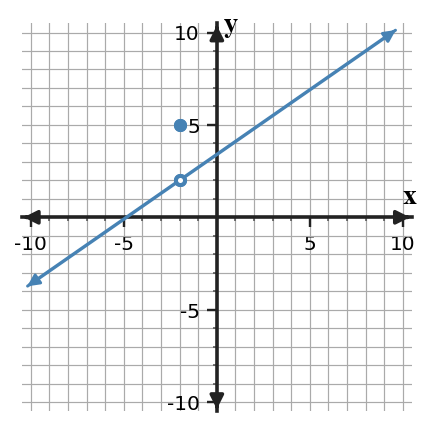
Graph of f.
Answer / Solution: The limit is $2$; the plotted function value is $5$, so they are not equal.
U1-S1-PS1-C02
Section 1.1 | Practice Set 1 | Current | DOK 2
Solve and show the minimum work needed to support the result. The table suggests a limit near $x=-1$, while $f(-1)=-6$. Estimate the limit.
x
-1.1
-1.01
-0.99
-0.9
f(x)
-4.1
-4.01
-3.99
-3.9
Answer / Solution: $-4$. The value $f(-1)$ does not determine the limit by itself.
U1-S1-PS1-C03
Section 1.1 | Practice Set 1 | Current | DOK 1
Solve and show the minimum work needed to support the result. Which quantity is an average rate of change?
$\lim_{h\to0}\frac{f(a+h)-f(a)}{h}$
$\frac{f(b)-f(a)}{b-a}$
$f(a)$
$f(b)-f(a)$
Answer / Solution: B. The secant slope formula is the average rate of change.
U1-S1-PS1-C04
Section 1.1 | Practice Set 1 | Current | DOK 1
Solve and show the minimum work needed to support the result. Interpret $\lim_{t\to 1}P(t)=7$ in words for a quantity $P$ measured as time $t$ changes.
Answer / Solution: As time approaches 1, the values of P approach 7.
U1-S1-PS1-C05
Section 1.1 | Practice Set 1 | Current | DOK 2
Solve and show the minimum work needed to support the result. The table suggests a limit near $x=0$, while $f(0)=4$. Estimate the limit.
x
-0.1
-0.01
0.01
0.1
f(x)
5.9
5.99
6.01
6.1
Answer / Solution: $6$. The value $f(0)$ does not determine the limit by itself.
U1-S1-PS1-L01
Section 1.1 | Practice Set 1 | Last | DOK 2
Solve and show the minimum work needed to support the result. Let $f(x)=4x+2$ and $g(x)=4x+2$. Compute $(f\circ g)(-2)$.
Answer / Solution: First $g(-2)=-6$, then $f(-6)=-22$.
U1-S1-PS1-L02
Section 1.1 | Practice Set 1 | Last | DOK 2
Solve and show the minimum work needed to support the result. Describe the translation from $y=x^2$ to $y=(x-2)^2+4$.
Answer / Solution: Shift right 2 and up 4.
U1-S1-PS1-L03
Section 1.1 | Practice Set 1 | Last | DOK 2
Solve and show the minimum work needed to support the result. State the domain of $h(x)=\frac{x+2}{x+4}$.
Answer / Solution: All real numbers except $x=-4$.
U1-S1-PS1-L04
Section 1.1 | Practice Set 1 | Last | DOK 1
Solve and show the minimum work needed to support the result. A line passes through $(-4,-1)$ and $(3,-5)$. Find its slope.
Answer / Solution: $m=\frac{-4}{7}=-0.571429$.
U1-S1-PS1-L05
Section 1.1 | Practice Set 1 | Last | DOK 1
Solve and show the minimum work needed to support the result. Use the table to identify the larger value, $f(-2)$ or $f(2)$.
x
-2
-1
0
1
2
f(x)
6
3
0
3
5
Answer / Solution: $f(-2)$ is larger.
U1-S1-PS1-M01
Section 1.1 | Practice Set 1 | Mastery | DOK 2
Solve and show the minimum work needed to support the result. For $r(x)=\frac{4}{x}$, determine the secant slope from $x=3$ to $x=5$.
Answer / Solution: The slope is $\frac{4/5-4/3}{2}=-0.266667$.
U1-S1-PS1-M02
Section 1.1 | Practice Set 1 | Mastery | DOK 1
Solve and show the minimum work needed to support the result. In the statement $f(3)=7$, identify the input and the output.
Answer / Solution: Input 3; output 7.
U1-S1-PS1-M03
Section 1.1 | Practice Set 1 | Mastery | DOK 1
Solve and show the minimum work needed to support the result. For $p(x)=\begin{cases}-2,&x\lt -2\\2,&x\ge -2\end{cases}$, find $p(-3)$.
Answer / Solution: $-2$
U1-S1-PS1-M04
Section 1.1 | Practice Set 1 | Mastery | DOK 1
Solve and show the minimum work needed to support the result. Rewrite $x^2-25$ as a product of linear factors.
Answer / Solution: $(x-5)(x+5)$
U1-S1-PS1-M05
Section 1.1 | Practice Set 1 | Mastery | DOK 1
Solve and show the minimum work needed to support the result. Evaluate $g(2)$ for $g(x)=\frac{4x+3}{x+1}$.
Answer / Solution: $g(2)=\frac{11}{3}=3.66667$.
U1-S1-PS1-M06
Section 1.1 | Practice Set 1 | Mastery | DOK 1
Solve and show the minimum work needed to support the result. Find the x-intercepts of $y=(x-5)(x+3)$.
Answer / Solution: $x=5\text{ and }x=-3$
U1-S1-PS1-M07
Section 1.1 | Practice Set 1 | Mastery | DOK 1
Solve and show the minimum work needed to support the result. Solve $(x-1)(x-2)=0$.
Answer / Solution: $x=1,\ 2$
U1-S1-PS1-M08
Section 1.1 | Practice Set 1 | Mastery | DOK 2
Solve and show the minimum work needed to support the result. For $r(x)=\frac{3}{x}$, determine the secant slope from $x=1$ to $x=4$.
Answer / Solution: The slope is $\frac{3/4-3/1}{3}=-0.75$.
U1-S1-PS1-M09
Section 1.1 | Practice Set 1 | Mastery | DOK 1
Solve and show the minimum work needed to support the result. Evaluate $\log_{2}(16)$.
Answer / Solution: $4$
U1-S1-PS1-M10
Section 1.1 | Practice Set 1 | Mastery | DOK 1
Solve and show the minimum work needed to support the result. Solve $|x-7|=3$.
Answer / Solution: $x=4\text{ or }x=10$
Section 1.2 - Limits from Graphs and Tables
U1-S2-PS1-C01
Section 1.2 | Practice Set 1 | Current | DOK 2
Solve and show the minimum work needed to support the result. Find the two one-sided limits at $x=0$ and decide whether the two-sided limit exists.Graph of f.
Answer / Solution: Left $3$; right $-1$; two-sided limit DNE.
U1-S2-PS1-C02
Section 1.2 | Practice Set 1 | Current | DOK 1
Solve and show the minimum work needed to support the result. A function is undefined at $x=-3$, but its graph approaches $1$ from both sides. Does the two-sided limit exist?
Answer / Solution: Yes. The limit is 1; the function need not be defined at the point.
U1-S2-PS1-C03
Section 1.2 | Practice Set 1 | Current | DOK 2
Solve and show the minimum work needed to support the result. Do the left and right sides of the table support the same finite limit? State the limit if so.
x
-1.1
-1.01
-1.001
-0.999
-0.99
-0.9
f(x)
-4.2
-4.03
-4.003
-3.997
-3.97
-3.8
Answer / Solution: Yes; both sides approach -4.
U1-S2-PS1-C04
Section 1.2 | Practice Set 1 | Current | DOK 1
Solve and show the minimum work needed to support the result. Estimate $\lim_{x\to 3^+}f(x)$ from the table.
x
2.9
2.99
2.999
3.001
3.01
3.1
f(x)
5.8
5.97
5.997
6.003
6.03
6.2
Answer / Solution: $6$
U1-S2-PS1-C05
Section 1.2 | Practice Set 1 | Current | DOK 1
Solve and show the minimum work needed to support the result. A function is undefined at $x=3$, but its graph approaches $-2$ from both sides. Does the two-sided limit exist?
Answer / Solution: Yes. The limit is -2; the function need not be defined at the point.
U1-S2-PS1-L01
Section 1.2 | Practice Set 1 | Last | DOK 1
Solve and show the minimum work needed to support the result. For $f(x)=x^2$, the secant slope from $x=1$ to $x=1+h$ equals $2+h$. What number do these slopes approach as $h$ approaches 0?
Answer / Solution: $2$
U1-S2-PS1-L02
Section 1.2 | Practice Set 1 | Last | DOK 2
Solve and show the minimum work needed to support the result. A moving object's position is $s(t)=t^2+2t$ meters. Compare the average velocity on $[4,5]$ with the average velocity on $[4,4.1]$. Which is the better estimate of the instantaneous velocity at $t=4$?
Answer / Solution: The averages are 11 and 10.1 m/s. The shorter interval gives the better estimate, 10.1 m/s.
U1-S2-PS1-L03
Section 1.2 | Practice Set 1 | Last | DOK 1
Solve and show the minimum work needed to support the result. In $\lim_{x\to 3}f(x)=6$, what value does the input approach and what value does the output approach?
Answer / Solution: The input approaches 3; the function values approach 6.
U1-S2-PS1-L04
Section 1.2 | Practice Set 1 | Last | DOK 1
Solve and show the minimum work needed to support the result. For $f(x)=x^2$, the secant slope from $x=4$ to $x=4+h$ equals $8+h$. What number do these slopes approach as $h$ approaches 0?
Answer / Solution: $8$
U1-S2-PS1-L05
Section 1.2 | Practice Set 1 | Last | DOK 2
Solve and show the minimum work needed to support the result. A moving object's position is $s(t)=t^2+2t$ meters. Compare the average velocity on $[3,4]$ with the average velocity on $[3,3.1]$. Which is the better estimate of the instantaneous velocity at $t=3$?
Answer / Solution: The averages are 9 and 8.1 m/s. The shorter interval gives the better estimate, 8.1 m/s.
U1-S2-PS1-M01
Section 1.2 | Practice Set 1 | Mastery | DOK 1
Solve and show the minimum work needed to support the result. For $p(x)=\begin{cases}-5,&x\lt -1\\2,&x\ge -1\end{cases}$, find $p(-2)$.
Answer / Solution: $-5$
U1-S2-PS1-M02
Section 1.2 | Practice Set 1 | Mastery | DOK 1
Solve and show the minimum work needed to support the result. Rewrite $x^2-49$ as a product of linear factors.
Answer / Solution: $(x-7)(x+7)$
U1-S2-PS1-M03
Section 1.2 | Practice Set 1 | Mastery | DOK 1
Solve and show the minimum work needed to support the result. Evaluate $g(2)$ for $g(x)=\frac{2x+2}{x+1}$.
Answer / Solution: $g(2)=\frac{6}{3}=2$.
U1-S2-PS1-M04
Section 1.2 | Practice Set 1 | Mastery | DOK 1
Solve and show the minimum work needed to support the result. Find the x-intercepts of $y=(x-5)(x+6)$.
Answer / Solution: $x=5\text{ and }x=-6$
U1-S2-PS1-M05
Section 1.2 | Practice Set 1 | Mastery | DOK 1
Solve and show the minimum work needed to support the result. Solve $(x-2)(x+0)=0$.
Answer / Solution: $x=2,\ 0$
U1-S2-PS1-M06
Section 1.2 | Practice Set 1 | Mastery | DOK 2
Solve and show the minimum work needed to support the result. For $r(x)=\frac{6}{x}$, determine the secant slope from $x=2$ to $x=4$.
Answer / Solution: The slope is $\frac{6/4-6/2}{2}=-0.75$.
U1-S2-PS1-M07
Section 1.2 | Practice Set 1 | Mastery | DOK 1
Solve and show the minimum work needed to support the result. Evaluate $\log_{3}(9)$.
Answer / Solution: $2$
U1-S2-PS1-M08
Section 1.2 | Practice Set 1 | Mastery | DOK 1
Solve and show the minimum work needed to support the result. For $p(x)=\begin{cases}-4,&x\lt 2\\-1,&x\ge 2\end{cases}$, find $p(3)$.
Answer / Solution: $-1$
U1-S2-PS1-M09
Section 1.2 | Practice Set 1 | Mastery | DOK 2
Solve and show the minimum work needed to support the result. Find the average rate of change of $p(x)=3x^2+0x$ on $[-1,3]$.
Solve and show the minimum work needed to support the result. Let $f(x)=5x-1$ and $g(x)=3x-1$. Compute $(f\circ g)(2)$.
Answer / Solution: First $g(2)=5$, then $f(5)=24$.
Section 1.3 - Algebraic Limits
U1-S3-PS1-C01
Section 1.3 | Practice Set 1 | Current | DOK 2
Solve and show the minimum work needed to support the result. If $-x^2\le h(x)\le x^2$ near 0, determine $\lim_{x\to0}h(x)$.
Answer / Solution: $0$ by the Squeeze Theorem.
U1-S3-PS1-C02
Section 1.3 | Practice Set 1 | Current | DOK 3
Solve and show the minimum work needed to support the result. Choose the best first step for $\lim_{x\to 2}\frac{\sqrt{x+4}-\sqrt{6}}{x-2}$ and justify the choice in one sentence.
Answer / Solution: Multiply by the conjugate because substitution gives an indeterminate difference of square roots over 0 and rationalization creates a cancelable factor.
U1-S3-PS1-C03
Section 1.3 | Practice Set 1 | Current | DOK 1
Solve and show the minimum work needed to support the result. Given $\lim_{x\to 3}f(x)=5$ and $\lim_{x\to 3}g(x)=2$, evaluate $\lim_{x\to 3}[2f(x)-3g(x)]$.
Answer / Solution: $4$
U1-S3-PS1-C04
Section 1.3 | Practice Set 1 | Current | DOK 2
Solve and show the minimum work needed to support the result. Evaluate $\lim_{x\to -1}(x^3-2x+4)$. State the property that makes substitution valid.
Answer / Solution: $5$; polynomials are continuous, so direct substitution is valid.
U1-S3-PS1-C05
Section 1.3 | Practice Set 1 | Current | DOK 2
Solve and show the minimum work needed to support the result. Evaluate $\lim_{x\to 1}\frac{x^2-4x+3}{x-1}$.
Answer / Solution: $-2$
U1-S3-PS1-L01
Section 1.3 | Practice Set 1 | Last | DOK 2
Solve and show the minimum work needed to support the result. The table describes nearby values and $f(4)=10$. Find the two-sided limit.
x
3.9
3.99
3.999
4.001
4.01
4.1
f(x)
5.8
5.97
5.997
6.003
6.03
6.2
Answer / Solution: 6. The separate function value does not change the limit.
U1-S3-PS1-L02
Section 1.3 | Practice Set 1 | Last | DOK 1
Solve and show the minimum work needed to support the result. Suppose $f(1)=0$ but $\lim_{x\to 1^-}f(x)=\lim_{x\to 1^+}f(x)=-5$. Find the two-sided limit.
Answer / Solution: $-5$
U1-S3-PS1-L03
Section 1.3 | Practice Set 1 | Last | DOK 2
Solve and show the minimum work needed to support the result. A graph approaches $2$ from the left of $x=1$ and $5$ from the right. Which limit exists: the left-hand limit, the right-hand limit, or the two-sided limit?
Answer / Solution: Both one-sided limits exist, but the two-sided limit does not exist.
U1-S3-PS1-L04
Section 1.3 | Practice Set 1 | Last | DOK 2
Solve and show the minimum work needed to support the result. The table describes nearby values and $f(2)=9$. Find the two-sided limit.
x
1.9
1.99
1.999
2.001
2.01
2.1
f(x)
4.8
4.97
4.997
5.003
5.03
5.2
Answer / Solution: 5. The separate function value does not change the limit.
U1-S3-PS1-L05
Section 1.3 | Practice Set 1 | Last | DOK 1
Solve and show the minimum work needed to support the result. Suppose $f(3)=11$ but $\lim_{x\to 3^-}f(x)=\lim_{x\to 3^+}f(x)=6$. Find the two-sided limit.
Answer / Solution: $6$
U1-S3-PS1-M01
Section 1.3 | Practice Set 1 | Mastery | DOK 1
Solve and show the minimum work needed to support the result. Evaluate $g(1)$ for $g(x)=\frac{4x+3}{x+1}$.
Answer / Solution: $g(1)=\frac{7}{2}=3.5$.
U1-S3-PS1-M02
Section 1.3 | Practice Set 1 | Mastery | DOK 1
Solve and show the minimum work needed to support the result. Find the x-intercepts of $y=(x-2)(x+4)$.
Answer / Solution: $x=2\text{ and }x=-4$
U1-S3-PS1-M03
Section 1.3 | Practice Set 1 | Mastery | DOK 1
Solve and show the minimum work needed to support the result. Solve $(x-1)(x-1)=0$.
Answer / Solution: $x=1,\ 1$
U1-S3-PS1-M04
Section 1.3 | Practice Set 1 | Mastery | DOK 2
Solve and show the minimum work needed to support the result. For $r(x)=\frac{5}{x}$, determine the secant slope from $x=1$ to $x=3$.
Answer / Solution: The slope is $\frac{5/3-5/1}{2}=-1.66667$.
U1-S3-PS1-M05
Section 1.3 | Practice Set 1 | Mastery | DOK 1
Solve and show the minimum work needed to support the result. Evaluate $\log_{2}(8)$.
Answer / Solution: $3$
U1-S3-PS1-M06
Section 1.3 | Practice Set 1 | Mastery | DOK 1
Solve and show the minimum work needed to support the result. For $p(x)=\begin{cases}-3,&x\lt 0\\5,&x\ge 0\end{cases}$, find $p(1)$.
Answer / Solution: $5$
U1-S3-PS1-M07
Section 1.3 | Practice Set 1 | Mastery | DOK 2
Solve and show the minimum work needed to support the result. Find the average rate of change of $p(x)=3x^2+4x$ on $[-2,2]$.
Solve and show the minimum work needed to support the result. Use the graph to decide whether $f$ is continuous at $x=3$. Identify the failed condition.
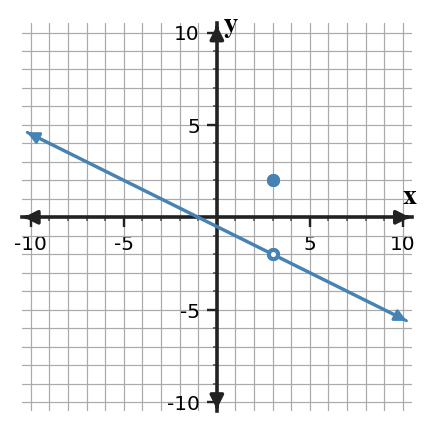
Graph of f.
Answer / Solution: It is not continuous. The two-sided limit is $-2$ but the function value is $2$.
U1-S4-PS1-C02
Section 1.4 | Practice Set 1 | Current | DOK 1
Solve and show the minimum work needed to support the result. A piecewise function has left-hand limit -4, right-hand limit -4, and function value -3 at $x=-1$. Which continuity condition fails?
Answer / Solution: The condition that the two-sided limit equal the function value.
U1-S4-PS1-C03
Section 1.4 | Practice Set 1 | Current | DOK 1
Solve and show the minimum work needed to support the result. At $x=-1$, the left and right limits both equal -1, but $f(-1)$ is undefined. Is the discontinuity removable or jump?
Answer / Solution: Removable.
U1-S4-PS1-C04
Section 1.4 | Practice Set 1 | Current | DOK 1
Solve and show the minimum work needed to support the result. Suppose the left-hand limit at $x=2$ is 3 and the right-hand limit is 6. Classify the discontinuity.
Answer / Solution: Jump discontinuity.
U1-S4-PS1-C05
Section 1.4 | Practice Set 1 | Current | DOK 1
Solve and show the minimum work needed to support the result. A piecewise function has left-hand limit 1, right-hand limit 1, and function value 2 at $x=0$. Which continuity condition fails?
Answer / Solution: The condition that the two-sided limit equal the function value.
U1-S4-PS1-L01
Section 1.4 | Practice Set 1 | Last | DOK 1
Solve and show the minimum work needed to support the result. Which method is most efficient for $\lim_{x\to 4}\frac{x^2-16}{x-4}$?
Factoring
Conjugates
Squeeze Theorem
No method can evaluate it
Answer / Solution: A. Factoring.
U1-S4-PS1-L02
Section 1.4 | Practice Set 1 | Last | DOK 2
Solve and show the minimum work needed to support the result. Evaluate $\lim_{x\to 3}\frac{x^3-27}{x-3}$.
Answer / Solution: $27$
U1-S4-PS1-L03
Section 1.4 | Practice Set 1 | Last | DOK 2
Solve and show the minimum work needed to support the result. Evaluate $\lim_{x\to 0}\frac{1-\cos(2x)}{x}$.
Answer / Solution: $0$
U1-S4-PS1-L04
Section 1.4 | Practice Set 1 | Last | DOK 3
Solve and show the minimum work needed to support the result. Compare two proposed methods for $\lim_{x\to 3}\frac{x^2-9}{x-3}$: Method A substitutes immediately and stops at $0/0$; Method B factors and simplifies. Which is valid and why?
Answer / Solution: Method B. The indeterminate form signals that more work is needed; factoring produces an equivalent nearby expression whose limit can be evaluated.
U1-S4-PS1-L05
Section 1.4 | Practice Set 1 | Last | DOK 2
Solve and show the minimum work needed to support the result. Evaluate $\lim_{x\to 1}\frac{x^2-1}{x-1}$.
Answer / Solution: Factor and cancel: $\lim_{x\to 1}(x+1)=2$.
U1-S4-PS1-M01
Section 1.4 | Practice Set 1 | Mastery | DOK 1
Solve and show the minimum work needed to support the result. Solve $(x-3)(x-5)=0$.
Answer / Solution: $x=3,\ 5$
U1-S4-PS1-M02
Section 1.4 | Practice Set 1 | Mastery | DOK 2
Solve and show the minimum work needed to support the result. For $r(x)=\frac{2}{x}$, determine the secant slope from $x=2$ to $x=5$.
Answer / Solution: The slope is $\frac{2/5-2/2}{3}=-0.2$.
U1-S4-PS1-M03
Section 1.4 | Practice Set 1 | Mastery | DOK 1
Solve and show the minimum work needed to support the result. Evaluate $\log_{3}(27)$.
Answer / Solution: $3$
U1-S4-PS1-M04
Section 1.4 | Practice Set 1 | Mastery | DOK 1
Solve and show the minimum work needed to support the result. For $p(x)=\begin{cases}5,&x\lt 0\\-2,&x\ge 0\end{cases}$, find $p(-1)$.
Answer / Solution: $5$
U1-S4-PS1-M05
Section 1.4 | Practice Set 1 | Mastery | DOK 1
Solve and show the minimum work needed to support the result. Rewrite $x^2-16$ as a product of linear factors.
Answer / Solution: $(x-4)(x+4)$
U1-S4-PS1-M06
Section 1.4 | Practice Set 1 | Mastery | DOK 1
Solve and show the minimum work needed to support the result. Evaluate $g(4)$ for $g(x)=\frac{4x+4}{x+1}$.
Answer / Solution: $g(4)=\frac{20}{5}=4$.
U1-S4-PS1-M07
Section 1.4 | Practice Set 1 | Mastery | DOK 1
Solve and show the minimum work needed to support the result. Find the x-intercepts of $y=(x-5)(x+5)$.
Answer / Solution: $x=5\text{ and }x=-5$
U1-S4-PS1-M08
Section 1.4 | Practice Set 1 | Mastery | DOK 1
Solve and show the minimum work needed to support the result. Solve $(x-3)(x+0)=0$.
Answer / Solution: $x=3,\ 0$
U1-S4-PS1-M09
Section 1.4 | Practice Set 1 | Mastery | DOK 2
Solve and show the minimum work needed to support the result. For $r(x)=\frac{5}{x}$, determine the secant slope from $x=2$ to $x=4$.
Answer / Solution: The slope is $\frac{5/4-5/2}{2}=-0.625$.
U1-S4-PS1-M10
Section 1.4 | Practice Set 1 | Mastery | DOK 1
Solve and show the minimum work needed to support the result. Use the table to identify the larger value, $f(-2)$ or $f(2)$.
x
-2
-1
0
1
2
f(x)
6
2
1
2
4
Answer / Solution: $f(-2)$ is larger.
Section 1.5 - Asymptotes and IVT
U1-S5-PS1-C01
Section 1.5 | Practice Set 1 | Current | DOK 1
Solve and show the minimum work needed to support the result. Identify the vertical and horizontal asymptotes shown in the graph.Graph of f.
Solve and show the minimum work needed to support the result. A student claims IVT guarantees $f(c)=5$ because 5 lies between $f(a)$ and $f(b)$, but the graph has a hole inside $[a,b]$. Evaluate the claim.
Answer / Solution: The guarantee is invalid because continuity on the whole closed interval is required.
U1-S5-PS1-C03
Section 1.5 | Practice Set 1 | Current | DOK 2
Solve and show the minimum work needed to support the result. A continuous function on $[1,5]$ satisfies $f(1)=-2$ and $f(5)=7$. Does IVT guarantee a solution to $f(x)=4$ for some $x$ in $(1,5)$?
Answer / Solution: Yes. 4 lies between -2 and 7, and continuity on the interval is given.
U1-S5-PS1-C04
Section 1.5 | Practice Set 1 | Current | DOK 1
Solve and show the minimum work needed to support the result. A model approaches 120 units as time increases without bound. Write an end-behavior limit statement.
Answer / Solution: $\lim_{t\to\infty}M(t)=120$
U1-S5-PS1-C05
Section 1.5 | Practice Set 1 | Current | DOK 2
Solve and show the minimum work needed to support the result. For $f(x)=1+\frac{3}{x--2}$, determine $\lim_{x\to\infty}f(x)$.
Answer / Solution: $1$
U1-S5-PS1-L01
Section 1.5 | Practice Set 1 | Last | DOK 2
Solve and show the minimum work needed to support the result. A function has a hole at $x=-1$ but is otherwise continuous near that point. Which single change can make the function continuous?
Answer / Solution: Define or redefine $f(-1)$ to equal the two-sided limit.
U1-S5-PS1-L02
Section 1.5 | Practice Set 1 | Last | DOK 1
Solve and show the minimum work needed to support the result. List the three conditions required for $f$ to be continuous at $x=0$.
Answer / Solution: $f(0)$ exists; $\lim_{x\to 0}f(x)$ exists; and the limit equals $f(0)$.
U1-S5-PS1-L03
Section 1.5 | Practice Set 1 | Last | DOK 2
Solve and show the minimum work needed to support the result. For $h(x)=\frac{x^2-1}{x--1}$ when $x\ne -1$, what value should be assigned to $h(-1)$ to create a continuous extension?
Answer / Solution: $-2$
U1-S5-PS1-L04
Section 1.5 | Practice Set 1 | Last | DOK 2
Solve and show the minimum work needed to support the result. A function has a hole at $x=-3$ but is otherwise continuous near that point. Which single change can make the function continuous?
Answer / Solution: Define or redefine $f(-3)$ to equal the two-sided limit.
U1-S5-PS1-L05
Section 1.5 | Practice Set 1 | Last | DOK 1
Solve and show the minimum work needed to support the result. List the three conditions required for $f$ to be continuous at $x=3$.
Answer / Solution: $f(3)$ exists; $\lim_{x\to 3}f(x)$ exists; and the limit equals $f(3)$.
U1-S5-PS1-M01
Section 1.5 | Practice Set 1 | Mastery | DOK 1
Solve and show the minimum work needed to support the result. Evaluate $\log_{5}(125)$.
Answer / Solution: $3$
U1-S5-PS1-M02
Section 1.5 | Practice Set 1 | Mastery | DOK 1
Solve and show the minimum work needed to support the result. For $p(x)=\begin{cases}2,&x\lt 0\\3,&x\ge 0\end{cases}$, find $p(-1)$.
Answer / Solution: $2$
U1-S5-PS1-M03
Section 1.5 | Practice Set 1 | Mastery | DOK 2
Solve and show the minimum work needed to support the result. Find the average rate of change of $p(x)=3x^2+2x$ on $[-1,4]$.
Solve and show the minimum work needed to support the result. Evaluate $g(1)$ for $g(x)=\frac{2x+4}{x+1}$.
Answer / Solution: $g(1)=\frac{6}{2}=3$.
U1-S5-PS1-M05
Section 1.5 | Practice Set 1 | Mastery | DOK 1
Solve and show the minimum work needed to support the result. Find the x-intercepts of $y=(x-4)(x+4)$.
Answer / Solution: $x=4\text{ and }x=-4$
U1-S5-PS1-M06
Section 1.5 | Practice Set 1 | Mastery | DOK 1
Solve and show the minimum work needed to support the result. Solve $(x-6)(x-4)=0$.
Answer / Solution: $x=6,\ 4$
U1-S5-PS1-M07
Section 1.5 | Practice Set 1 | Mastery | DOK 2
Solve and show the minimum work needed to support the result. For $r(x)=\frac{3}{x}$, determine the secant slope from $x=2$ to $x=5$.
Answer / Solution: The slope is $\frac{3/5-3/2}{3}=-0.3$.
U1-S5-PS1-M08
Section 1.5 | Practice Set 1 | Mastery | DOK 1
Solve and show the minimum work needed to support the result. Evaluate $\log_{2}(4)$.
Answer / Solution: $2$
U1-S5-PS1-M09
Section 1.5 | Practice Set 1 | Mastery | DOK 1
Solve and show the minimum work needed to support the result. For $p(x)=\begin{cases}4,&x\lt 1\\1,&x\ge 1\end{cases}$, find $p(2)$.
Answer / Solution: $1$
U1-S5-PS1-M10
Section 1.5 | Practice Set 1 | Mastery | DOK 2
Solve and show the minimum work needed to support the result. Simplify for $x\ne 2$: $\frac{x^2-5x+6}{x-2}$.
Answer / Solution: $x-3$
Practice Set 2
Section 1.1 - What Is a Limit?
U1-S1-PS2-C01
Section 1.1 | Practice Set 2 | Current | DOK 2
Complete the task and name the strategy or representation that makes your answer defensible. From the graph, estimate $\lim_{x\to 1}f(x)$ and compare it with $f(1)$.Graph of f.
Answer / Solution: The limit is $-1$; the plotted function value is $4$, so they are not equal.
U1-S1-PS2-C02
Section 1.1 | Practice Set 2 | Current | DOK 1
Complete the task and name the strategy or representation that makes your answer defensible. For $f(x)=x^2$, write the secant-slope expression between $x=1$ and $x=1+h$.
Answer / Solution: $\frac{(1+h)^2-1}{h}$
U1-S1-PS2-C03
Section 1.1 | Practice Set 2 | Current | DOK 2
Complete the task and name the strategy or representation that makes your answer defensible. Secant slopes for intervals ending at $x=2$ are listed. Estimate the instantaneous slope as the interval shrinks.
interval width
1
0.5
0.1
0.01
secant slope
7
6
5.2
5.02
Answer / Solution: Approximately 5, because the secant slopes approach 5.
U1-S1-PS2-C04
Section 1.1 | Practice Set 2 | Current | DOK 2
Complete the task and name the strategy or representation that makes your answer defensible. Explain the difference between the statements $f(1)=6$ and $\lim_{x\to 1}f(x)=6$.
Answer / Solution: The first gives the actual function value at x=1; the second describes the value approached by nearby function values.
U1-S1-PS2-C05
Section 1.1 | Practice Set 2 | Current | DOK 2
Complete the task and name the strategy or representation that makes your answer defensible. Does the numerical evidence support the claim $\lim_{x\to 4}h(x)=4$? Give one sentence of evidence.
x
3.5
3.9
3.99
4.01
4.1
4.5
h(x)
4.5
4.1
4.01
4.01
4.1
4.5
Answer / Solution: Yes. Values from both sides move closer to 4 as x moves closer to 4.
U1-S1-PS2-L01
Section 1.1 | Practice Set 2 | Last | DOK 1
Complete the task and name the strategy or representation that makes your answer defensible. Factor completely: $x^2-9x+14$.
Answer / Solution: $(x-7)(x-2)$
U1-S1-PS2-L02
Section 1.1 | Practice Set 2 | Last | DOK 1
Complete the task and name the strategy or representation that makes your answer defensible. For $f(x)=3x^2+3x+3$, find $f(2)$.
Answer / Solution: Substitute $x=2$: $21$.
U1-S1-PS2-L03
Section 1.1 | Practice Set 2 | Last | DOK 1
Complete the task and name the strategy or representation that makes your answer defensible. Evaluate $\log_{3}(9)$.
Answer / Solution: $2$
U1-S1-PS2-L04
Section 1.1 | Practice Set 2 | Last | DOK 1
Complete the task and name the strategy or representation that makes your answer defensible. Solve $2x-6=7$.
Answer / Solution: $x=6.5$
U1-S1-PS2-L05
Section 1.1 | Practice Set 2 | Last | DOK 2
Complete the task and name the strategy or representation that makes your answer defensible. Find the average rate of change of $p(x)=2x^2+0x$ on $[-1,4]$.
Complete the task and name the strategy or representation that makes your answer defensible. Rationalize and simplify $\frac{1}{\sqrt{6}+1}$.
Answer / Solution: $\frac{\sqrt{6}-1}{5}$
U1-S1-PS2-M02
Section 1.1 | Practice Set 2 | Mastery | DOK 2
Complete the task and name the strategy or representation that makes your answer defensible. Write, but do not simplify, the difference quotient $\frac{f(1+h)-f(1)}{h}$ for $f(x)=1x^2-2x$.
Complete the task and name the strategy or representation that makes your answer defensible. Solve the system $y=2x+9$ and $y=-3x-6$.
Answer / Solution: $(-3,3)$
U1-S1-PS2-M04
Section 1.1 | Practice Set 2 | Mastery | DOK 2
Complete the task and name the strategy or representation that makes your answer defensible. State the domain of $k(x)=\sqrt{x+3}$.
Answer / Solution: $x\ge -3$
U1-S1-PS2-M05
Section 1.1 | Practice Set 2 | Mastery | DOK 2
Complete the task and name the strategy or representation that makes your answer defensible. The table gives values of a function. Find the average rate of change from $x=1$ to $x=3$.
x
0
1
2
3
f(x)
5
6
9
14
Answer / Solution: $\frac{14-6}{3-1}=4$.
U1-S1-PS2-M06
Section 1.1 | Practice Set 2 | Mastery | DOK 2
Complete the task and name the strategy or representation that makes your answer defensible. A sensor reading changes from 28 units at 4 s to 58 units at 9 s. Find the average rate of change.
Answer / Solution: 6 units per second.
U1-S1-PS2-M07
Section 1.1 | Practice Set 2 | Mastery | DOK 1
Complete the task and name the strategy or representation that makes your answer defensible. Simplify $\frac{x^4}{x^4}$ for $x\ne 0$.
Answer / Solution: $1$
U1-S1-PS2-M08
Section 1.1 | Practice Set 2 | Mastery | DOK 1
Complete the task and name the strategy or representation that makes your answer defensible. A line passes through $(0,-1)$ and $(1,3)$. Find its slope.
Answer / Solution: $m=\frac{4}{1}=4$.
U1-S1-PS2-M09
Section 1.1 | Practice Set 2 | Mastery | DOK 2
Complete the task and name the strategy or representation that makes your answer defensible. Write, but do not simplify, the difference quotient $\frac{f(3+h)-f(3)}{h}$ for $f(x)=4x^2+4x$.
Complete the task and name the strategy or representation that makes your answer defensible. Write $-2\lt x\le 4$ in interval notation.
Answer / Solution: $(-2,4]$
Section 1.2 - Limits from Graphs and Tables
U1-S2-PS2-C01
Section 1.2 | Practice Set 2 | Current | DOK 2
Complete the task and name the strategy or representation that makes your answer defensible. Find the two one-sided limits at $x=2$ and decide whether the two-sided limit exists.Graph of f.
Answer / Solution: Left $-2$; right $1$; two-sided limit DNE.
U1-S2-PS2-C02
Section 1.2 | Practice Set 2 | Current | DOK 2
Complete the task and name the strategy or representation that makes your answer defensible. Find the left-hand limit, right-hand limit, and two-sided limit suggested by the table.
x
0.9
0.99
0.999
1.001
1.01
1.1
f(x)
1.8
1.97
1.997
2.003
2.03
2.2
Answer / Solution: Left 2; right 2; two-sided 2.
U1-S2-PS2-C03
Section 1.2 | Practice Set 2 | Current | DOK 1
Complete the task and name the strategy or representation that makes your answer defensible. Which condition is required for a finite two-sided limit at $x=2$?
The function value must exist.
The left- and right-hand limits must both exist and be equal.
The graph must cross the vertical line at the point.
The function must be differentiable.
Answer / Solution: B.
U1-S2-PS2-C04
Section 1.2 | Practice Set 2 | Current | DOK 1
Complete the task and name the strategy or representation that makes your answer defensible. If both one-sided limits at $x=2$ equal $-5$, what is the two-sided limit?
Answer / Solution: $-5$
U1-S2-PS2-C05
Section 1.2 | Practice Set 2 | Current | DOK 2
Complete the task and name the strategy or representation that makes your answer defensible. Use the table to decide whether $\lim_{x\to 0}f(x)$ exists.
x
-0.1
-0.01
-0.001
0.001
0.01
0.1
f(x)
1.8
1.97
1.997
7.003
7.03
7.2
Answer / Solution: DNE because the one-sided limits are 2 and 7.
U1-S2-PS2-L01
Section 1.2 | Practice Set 2 | Last | DOK 1
Complete the task and name the strategy or representation that makes your answer defensible. Estimate $\lim_{x\to 3}f(x)$ from the table.
x
2.9
2.99
2.999
3.001
3.01
3.1
f(x)
3.8
3.95
3.99
4.01
4.04
4.18
Answer / Solution: $4$
U1-S2-PS2-L02
Section 1.2 | Practice Set 2 | Last | DOK 2
Complete the task and name the strategy or representation that makes your answer defensible. A table of nearby values approaches 6, but the row at $x=2$ is missing. Can the finite limit still be estimated? State why.
Answer / Solution: Yes. A limit is determined by values arbitrarily close to 2, not by whether the function is defined at 2.
U1-S2-PS2-L03
Section 1.2 | Practice Set 2 | Last | DOK 1
Complete the task and name the strategy or representation that makes your answer defensible. Which statement best describes a finite limit?
The output must equal the limit at the target input.
Nearby output values approach a single number as inputs approach the target.
The input eventually becomes equal to the target.
The function must be linear near the target.
Answer / Solution: B. Nearby output values approach a single number.
U1-S2-PS2-L04
Section 1.2 | Practice Set 2 | Last | DOK 1
Complete the task and name the strategy or representation that makes your answer defensible. Estimate $\lim_{x\to 3}f(x)$ from the table.
x
2.9
2.99
2.999
3.001
3.01
3.1
f(x)
2.8
2.95
2.99
3.01
3.04
3.18
Answer / Solution: $3$
U1-S2-PS2-L05
Section 1.2 | Practice Set 2 | Last | DOK 2
Complete the task and name the strategy or representation that makes your answer defensible. A table of nearby values approaches -3, but the row at $x=2$ is missing. Can the finite limit still be estimated? State why.
Answer / Solution: Yes. A limit is determined by values arbitrarily close to 2, not by whether the function is defined at 2.
U1-S2-PS2-M01
Section 1.2 | Practice Set 2 | Mastery | DOK 2
Complete the task and name the strategy or representation that makes your answer defensible. Solve the system $y=3x-5$ and $y=-3x+7$.
Answer / Solution: $(2,1)$
U1-S2-PS2-M02
Section 1.2 | Practice Set 2 | Mastery | DOK 2
Complete the task and name the strategy or representation that makes your answer defensible. Simplify for $x\ne 1$: $\frac{x^2-3x+2}{x-1}$.
Answer / Solution: $x-2$
U1-S2-PS2-M03
Section 1.2 | Practice Set 2 | Mastery | DOK 2
Complete the task and name the strategy or representation that makes your answer defensible. The table gives values of a function. Find the average rate of change from $x=1$ to $x=3$.
x
0
1
2
3
f(x)
4
5
8
13
Answer / Solution: $\frac{13-5}{3-1}=4$.
U1-S2-PS2-M04
Section 1.2 | Practice Set 2 | Mastery | DOK 2
Complete the task and name the strategy or representation that makes your answer defensible. A sensor reading changes from 24 units at 2 s to 48 units at 6 s. Find the average rate of change.
Answer / Solution: 6 units per second.
U1-S2-PS2-M05
Section 1.2 | Practice Set 2 | Mastery | DOK 1
Complete the task and name the strategy or representation that makes your answer defensible. Simplify $\frac{x^4}{x^2}$ for $x\ne 0$.
Answer / Solution: $x^{2}$
U1-S2-PS2-M06
Section 1.2 | Practice Set 2 | Mastery | DOK 2
Complete the task and name the strategy or representation that makes your answer defensible. Rationalize and simplify $\frac{1}{\sqrt{8}+1}$.
Answer / Solution: $\frac{\sqrt{8}-1}{7}$
U1-S2-PS2-M07
Section 1.2 | Practice Set 2 | Mastery | DOK 1
Complete the task and name the strategy or representation that makes your answer defensible. Use the table to identify the larger value, $f(-2)$ or $f(2)$.
x
-2
-1
0
1
2
f(x)
6
1
1
2
6
Answer / Solution: They are equal.
U1-S2-PS2-M08
Section 1.2 | Practice Set 2 | Mastery | DOK 2
Complete the task and name the strategy or representation that makes your answer defensible. Solve the system $y=1x+2$ and $y=-1x+0$.
Answer / Solution: $(-1,1)$
U1-S2-PS2-M09
Section 1.2 | Practice Set 2 | Mastery | DOK 2
Complete the task and name the strategy or representation that makes your answer defensible. State the domain of $k(x)=\sqrt{x-5}$.
Answer / Solution: $x\ge 5$
U1-S2-PS2-M10
Section 1.2 | Practice Set 2 | Mastery | DOK 1
Complete the task and name the strategy or representation that makes your answer defensible. Factor completely: $x^2-11x+28$.
Answer / Solution: $(x-7)(x-4)$
Section 1.3 - Algebraic Limits
U1-S3-PS2-C01
Section 1.3 | Practice Set 2 | Current | DOK 3
Complete the task and name the strategy or representation that makes your answer defensible. A student cancels $x-1$ in $\frac{(x-1)(x+2)}{x-1}$ and worries that the expressions are not equal at $x=1$. Why can the simplification still be used for a limit as $x\to 1$?
Answer / Solution: Limits depend on nearby values. The expressions agree for all nearby x except the target point, which is sufficient for the limit.
U1-S3-PS2-C02
Section 1.3 | Practice Set 2 | Current | DOK 1
Complete the task and name the strategy or representation that makes your answer defensible. Evaluate $\lim_{x\to 2}\frac{2x+1}{x+5}$.
Answer / Solution: $\frac{5}{7}$
U1-S3-PS2-C03
Section 1.3 | Practice Set 2 | Current | DOK 1
Complete the task and name the strategy or representation that makes your answer defensible. Which method is most efficient for $\lim_{x\to 25}\frac{\sqrt{x}-5}{x-25}$?
Direct substitution only
Factor a quadratic
Multiply by the conjugate
Use a table only
Answer / Solution: C. Multiply by the conjugate.
U1-S3-PS2-C04
Section 1.3 | Practice Set 2 | Current | DOK 2
Complete the task and name the strategy or representation that makes your answer defensible. Suppose $0\le f(x)\le |x|$ for all x near 0. Find $\lim_{x\to0}f(x)$.
Answer / Solution: $0$ by squeezing between two functions with limit 0.
U1-S3-PS2-C05
Section 1.3 | Practice Set 2 | Current | DOK 2
Complete the task and name the strategy or representation that makes your answer defensible. Evaluate $\lim_{x\to 0}\frac{\sin(4x)}{x}$.
Answer / Solution: $4$
U1-S3-PS2-L01
Section 1.3 | Practice Set 2 | Last | DOK 1
Complete the task and name the strategy or representation that makes your answer defensible. Write the notation for the limit of $p(t)$ as $t$ approaches $3$ from values less than $3$.
Answer / Solution: $\lim_{t\to 3^-}p(t)$
U1-S3-PS2-L02
Section 1.3 | Practice Set 2 | Last | DOK 2
Complete the task and name the strategy or representation that makes your answer defensible. A student reads only the three entries with $x\lt 3$ and reports the two-sided limit as -3. What did the student fail to check?
x
2.9
2.99
2.999
3.001
3.01
3.1
f(x)
-3.2
-3.03
-3.003
2.003
2.03
2.2
Answer / Solution: The student failed to inspect the right-hand behavior; it approaches 2, so the two-sided limit is DNE.
U1-S3-PS2-L03
Section 1.3 | Practice Set 2 | Last | DOK 1
Complete the task and name the strategy or representation that makes your answer defensible. Estimate $\lim_{x\to 3^-}f(x)$ from the table.
x
2.9
2.99
2.999
3.001
3.01
3.1
f(x)
-3.2
-3.03
-3.003
-2.997
-2.97
-2.8
Answer / Solution: $-3$
U1-S3-PS2-L04
Section 1.3 | Practice Set 2 | Last | DOK 1
Complete the task and name the strategy or representation that makes your answer defensible. Write the notation for the limit of $p(t)$ as $t$ approaches $2$ from values less than $2$.
Answer / Solution: $\lim_{t\to 2^-}p(t)$
U1-S3-PS2-L05
Section 1.3 | Practice Set 2 | Last | DOK 2
Complete the task and name the strategy or representation that makes your answer defensible. A student reads only the three entries with $x\lt -3$ and reports the two-sided limit as -2. What did the student fail to check?
x
-3.1
-3.01
-3.001
-2.999
-2.99
-2.9
f(x)
-2.2
-2.03
-2.003
3.003
3.03
3.2
Answer / Solution: The student failed to inspect the right-hand behavior; it approaches 3, so the two-sided limit is DNE.
U1-S3-PS2-M01
Section 1.3 | Practice Set 2 | Mastery | DOK 2
Complete the task and name the strategy or representation that makes your answer defensible. The table gives values of a function. Find the average rate of change from $x=1$ to $x=3$.
x
0
1
2
3
f(x)
2
3
6
11
Answer / Solution: $\frac{11-3}{3-1}=4$.
U1-S3-PS2-M02
Section 1.3 | Practice Set 2 | Mastery | DOK 2
Complete the task and name the strategy or representation that makes your answer defensible. A sensor reading changes from 26 units at 1 s to 41 units at 6 s. Find the average rate of change.
Answer / Solution: 3 units per second.
U1-S3-PS2-M03
Section 1.3 | Practice Set 2 | Mastery | DOK 1
Complete the task and name the strategy or representation that makes your answer defensible. Simplify $\frac{x^3}{x^4}$ for $x\ne 0$.
Answer / Solution: $\frac{1}{x^{1}}$
U1-S3-PS2-M04
Section 1.3 | Practice Set 2 | Mastery | DOK 2
Complete the task and name the strategy or representation that makes your answer defensible. Rationalize and simplify $\frac{1}{\sqrt{2}+1}$.
Answer / Solution: $\frac{\sqrt{2}-1}{1}$
U1-S3-PS2-M05
Section 1.3 | Practice Set 2 | Mastery | DOK 2
Complete the task and name the strategy or representation that makes your answer defensible. Write, but do not simplify, the difference quotient $\frac{f(1+h)-f(1)}{h}$ for $f(x)=2x^2-1x$.
Complete the task and name the strategy or representation that makes your answer defensible. Solve the system $y=4x-1$ and $y=-4x+7$.
Answer / Solution: $(1,3)$
U1-S3-PS2-M07
Section 1.3 | Practice Set 2 | Mastery | DOK 2
Complete the task and name the strategy or representation that makes your answer defensible. Simplify for $x\ne 3$: $\frac{x^2-6x+9}{x-3}$.
Answer / Solution: $x-3$
U1-S3-PS2-M08
Section 1.3 | Practice Set 2 | Mastery | DOK 2
Complete the task and name the strategy or representation that makes your answer defensible. Let $f(x)=4x-4$ and $g(x)=4x+2$. Compute $(f\circ g)(1)$.
Answer / Solution: First $g(1)=6$, then $f(6)=20$.
U1-S3-PS2-M09
Section 1.3 | Practice Set 2 | Mastery | DOK 2
Complete the task and name the strategy or representation that makes your answer defensible. A sensor reading changes from 21 units at 3 s to 25 units at 5 s. Find the average rate of change.
Answer / Solution: 2 units per second.
U1-S3-PS2-M10
Section 1.3 | Practice Set 2 | Mastery | DOK 1
Complete the task and name the strategy or representation that makes your answer defensible. Evaluate $\log_{5}(625)$.
Answer / Solution: $4$
Section 1.4 - Continuity and Discontinuity
U1-S4-PS2-C01
Section 1.4 | Practice Set 2 | Current | DOK 2
Complete the task and name the strategy or representation that makes your answer defensible. Use the graph to decide whether $f$ is continuous at $x=-2$. Identify the failed condition.Graph of f.
Answer / Solution: It is not continuous. The two-sided limit is $3$ but the function value is $-1$.
U1-S4-PS2-C02
Section 1.4 | Practice Set 2 | Current | DOK 2
Complete the task and name the strategy or representation that makes your answer defensible. Determine $k$ so $g(x)=\begin{cases}2x-3,&x\le -1\\2x+k,&x\gt -1\end{cases}$ is continuous at $x=-1$.
Answer / Solution: $k=-3$
U1-S4-PS2-C03
Section 1.4 | Practice Set 2 | Current | DOK 3
Complete the task and name the strategy or representation that makes your answer defensible. Two students classify a discontinuity at $x=-3$. Student A says removable because $f(-3)$ is undefined. Student B says jump because the one-sided limits are 2 and 4. Who is correct and why?
Answer / Solution: Student B. Different finite one-sided limits create a jump; being undefined at the point alone does not make a discontinuity removable.
U1-S4-PS2-C04
Section 1.4 | Practice Set 2 | Current | DOK 1
Complete the task and name the strategy or representation that makes your answer defensible. Which statement guarantees continuity at $x=3$?
$f(3)$ exists
$\lim_{x\to 3}f(x)$ exists
$f(3)=\lim_{x\to 3}f(x)$ and both quantities exist
The graph has no x-intercept nearby
Answer / Solution: C.
U1-S4-PS2-C05
Section 1.4 | Practice Set 2 | Current | DOK 2
Complete the task and name the strategy or representation that makes your answer defensible. Determine $k$ so $g(x)=\begin{cases}1x-2,&x\le 1\\4x+k,&x\gt 1\end{cases}$ is continuous at $x=1$.
Answer / Solution: $k=-5$
U1-S4-PS2-L01
Section 1.4 | Practice Set 2 | Last | DOK 2
Complete the task and name the strategy or representation that makes your answer defensible. If $2-x^2\le h(x)\le 2+x^2$ near 0, determine $\lim_{x\to0}h(x)$.
Answer / Solution: $2$ by the Squeeze Theorem.
U1-S4-PS2-L02
Section 1.4 | Practice Set 2 | Last | DOK 1
Complete the task and name the strategy or representation that makes your answer defensible. Evaluate $\lim_{x\to 2}(3x^2+5x-3)$ by direct substitution.
Answer / Solution: $19$
U1-S4-PS2-L03
Section 1.4 | Practice Set 2 | Last | DOK 1
Complete the task and name the strategy or representation that makes your answer defensible. Direct substitution in $\lim_{x\to 2}\frac{x^2-4}{x-2}$ produces $0/0$. What is the next appropriate routine step?
Answer / Solution: Factor the numerator, then cancel the common factor for nearby x-values.
U1-S4-PS2-L04
Section 1.4 | Practice Set 2 | Last | DOK 1
Complete the task and name the strategy or representation that makes your answer defensible. Evaluate $\lim_{x\to 0}\frac{\sin(4x)}{4x}$.
Answer / Solution: $1$
U1-S4-PS2-L05
Section 1.4 | Practice Set 2 | Last | DOK 2
Complete the task and name the strategy or representation that makes your answer defensible. Evaluate $\lim_{x\to 7}\frac{\sqrt{x}-\sqrt{7}}{x-7}$.
Answer / Solution: $\frac{1}{2\sqrt{7}}$
U1-S4-PS2-M01
Section 1.4 | Practice Set 2 | Mastery | DOK 1
Complete the task and name the strategy or representation that makes your answer defensible. Simplify $\frac{x^2}{x^4}$ for $x\ne 0$.
Answer / Solution: $\frac{1}{x^{2}}$
U1-S4-PS2-M02
Section 1.4 | Practice Set 2 | Mastery | DOK 1
Complete the task and name the strategy or representation that makes your answer defensible. A line passes through $(-3,1)$ and $(3,-2)$. Find its slope.
Answer / Solution: $m=\frac{-3}{6}=-0.5$.
U1-S4-PS2-M03
Section 1.4 | Practice Set 2 | Mastery | DOK 2
Complete the task and name the strategy or representation that makes your answer defensible. Write, but do not simplify, the difference quotient $\frac{f(2+h)-f(2)}{h}$ for $f(x)=3x^2+3x$.
Complete the task and name the strategy or representation that makes your answer defensible. Solve the system $y=4x-1$ and $y=-1x-1$.
Answer / Solution: $(0,-1)$
U1-S4-PS2-M05
Section 1.4 | Practice Set 2 | Mastery | DOK 2
Complete the task and name the strategy or representation that makes your answer defensible. State the domain of $k(x)=\sqrt{x+4}$.
Answer / Solution: $x\ge -4$
U1-S4-PS2-M06
Section 1.4 | Practice Set 2 | Mastery | DOK 2
Complete the task and name the strategy or representation that makes your answer defensible. Let $f(x)=3x+1$ and $g(x)=4x+3$. Compute $(f\circ g)(0)$.
Answer / Solution: First $g(0)=3$, then $f(3)=10$.
U1-S4-PS2-M07
Section 1.4 | Practice Set 2 | Mastery | DOK 2
Complete the task and name the strategy or representation that makes your answer defensible. A sensor reading changes from 22 units at 3 s to 47 units at 8 s. Find the average rate of change.
Answer / Solution: 5 units per second.
U1-S4-PS2-M08
Section 1.4 | Practice Set 2 | Mastery | DOK 2
Complete the task and name the strategy or representation that makes your answer defensible. State the domain of $h(x)=\frac{x+2}{x+0}$.
Answer / Solution: All real numbers except $x=0$.
U1-S4-PS2-M09
Section 1.4 | Practice Set 2 | Mastery | DOK 1
Complete the task and name the strategy or representation that makes your answer defensible. A line passes through $(-4,2)$ and $(2,1)$. Find its slope.
Answer / Solution: $m=\frac{-1}{6}=-0.166667$.
U1-S4-PS2-M10
Section 1.4 | Practice Set 2 | Mastery | DOK 2
Complete the task and name the strategy or representation that makes your answer defensible. Find the average rate of change of $p(x)=3x^2+0x$ on $[0,3]$.
Complete the task and name the strategy or representation that makes your answer defensible. Use the graph to name both asymptotes, then write a limit-at-infinity statement that supports the horizontal asymptote.
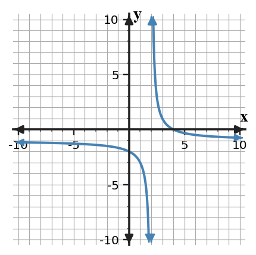
Graph of f.
Answer / Solution: Vertical $x=2$; horizontal $y=-1$; for example $\lim_{x\to\infty}f(x)=-1$.
U1-S5-PS2-C02
Section 1.5 | Practice Set 2 | Current | DOK 1
Complete the task and name the strategy or representation that makes your answer defensible. If $\lim_{x\to -3}f(x)=\infty$, what vertical asymptote is indicated?
Answer / Solution: $x=-3$
U1-S5-PS2-C03
Section 1.5 | Practice Set 2 | Current | DOK 1
Complete the task and name the strategy or representation that makes your answer defensible. State the two main facts you must verify before using IVT to guarantee $f(c)=N$ on $[a,b]$.
Answer / Solution: The function is continuous on [a,b], and N lies between f(a) and f(b).
U1-S5-PS2-C04
Section 1.5 | Practice Set 2 | Current | DOK 2
Complete the task and name the strategy or representation that makes your answer defensible. A continuous function satisfies $f(2)=-1$ and $f(6)=3$. IVT guarantees at least one root in $(2,6)$. Does IVT guarantee exactly one root?
Answer / Solution: No. IVT guarantees existence, not uniqueness.
U1-S5-PS2-C05
Section 1.5 | Practice Set 2 | Current | DOK 1
Complete the task and name the strategy or representation that makes your answer defensible. Can a function cross a horizontal asymptote?
Answer / Solution: Yes. A horizontal asymptote describes end behavior, not a barrier the graph can never cross.
U1-S5-PS2-L01
Section 1.5 | Practice Set 2 | Last | DOK 3
Complete the task and name the strategy or representation that makes your answer defensible. A student says a function with a hole cannot have a limit at the hole. Critique the claim.
Answer / Solution: The claim is false. If both sides approach the same finite value, the limit exists even though the function is missing that point.
U1-S5-PS2-L02
Section 1.5 | Practice Set 2 | Last | DOK 1
Complete the task and name the strategy or representation that makes your answer defensible. If a function is continuous on $(-5,2)$ and $(2,7)$ but has a jump at $x=2$, write the intervals of continuity.
Answer / Solution: $(-5,2)\cup(2,7)$
U1-S5-PS2-L03
Section 1.5 | Practice Set 2 | Last | DOK 1
Complete the task and name the strategy or representation that makes your answer defensible. Suppose $f(1)=3$ but $\lim_{x\to 1}f(x)=1$. Classify the discontinuity if the nearby graph has a single hole.
Answer / Solution: Removable discontinuity.
U1-S5-PS2-L04
Section 1.5 | Practice Set 2 | Last | DOK 1
Complete the task and name the strategy or representation that makes your answer defensible. A graph is continuous everywhere except for a hole at $x=-1$ and a jump at $x=2$. Name the type of discontinuity at each point.
Answer / Solution: Removable at -1; jump at 2.
U1-S5-PS2-L05
Section 1.5 | Practice Set 2 | Last | DOK 2
Complete the task and name the strategy or representation that makes your answer defensible. A student checks only that $f(1)$ exists and concludes the function is continuous. What two pieces of evidence are still missing?
Answer / Solution: The two-sided limit must exist, and it must equal the function value.
U1-S5-PS2-M01
Section 1.5 | Practice Set 2 | Mastery | DOK 2
Complete the task and name the strategy or representation that makes your answer defensible. Write, but do not simplify, the difference quotient $\frac{f(-3+h)-f(-3)}{h}$ for $f(x)=1x^2+1x$.
Complete the task and name the strategy or representation that makes your answer defensible. Solve the system $y=1x+3$ and $y=-2x+6$.
Answer / Solution: $(1,4)$
U1-S5-PS2-M03
Section 1.5 | Practice Set 2 | Mastery | DOK 2
Complete the task and name the strategy or representation that makes your answer defensible. State the domain of $k(x)=\sqrt{x-4}$.
Answer / Solution: $x\ge 4$
U1-S5-PS2-M04
Section 1.5 | Practice Set 2 | Mastery | DOK 2
Complete the task and name the strategy or representation that makes your answer defensible. The table gives values of a function. Find the average rate of change from $x=1$ to $x=3$.
x
0
1
2
3
f(x)
3
4
7
12
Answer / Solution: $\frac{12-4}{3-1}=4$.
U1-S5-PS2-M05
Section 1.5 | Practice Set 2 | Mastery | DOK 2
Complete the task and name the strategy or representation that makes your answer defensible. A sensor reading changes from 15 units at 3 s to 27 units at 6 s. Find the average rate of change.
Answer / Solution: 4 units per second.
U1-S5-PS2-M06
Section 1.5 | Practice Set 2 | Mastery | DOK 2
Complete the task and name the strategy or representation that makes your answer defensible. State the domain of $h(x)=\frac{x+2}{x+5}$.
Answer / Solution: All real numbers except $x=-5$.
U1-S5-PS2-M07
Section 1.5 | Practice Set 2 | Mastery | DOK 2
Complete the task and name the strategy or representation that makes your answer defensible. Rationalize and simplify $\frac{1}{\sqrt{5}+1}$.
Answer / Solution: $\frac{\sqrt{5}-1}{4}$
U1-S5-PS2-M08
Section 1.5 | Practice Set 2 | Mastery | DOK 2
Complete the task and name the strategy or representation that makes your answer defensible. Write, but do not simplify, the difference quotient $\frac{f(-3+h)-f(-3)}{h}$ for $f(x)=3x^2+3x$.
Complete the task and name the strategy or representation that makes your answer defensible. Solve the system $y=4x-6$ and $y=-2x+6$.
Answer / Solution: $(2,2)$
U1-S5-PS2-M10
Section 1.5 | Practice Set 2 | Mastery | DOK 1
Complete the task and name the strategy or representation that makes your answer defensible. If $f(x)=3x+5$, find $f^{-1}(-4)$.
Answer / Solution: $-3$
Practice Set 3 (Tarsia-Friendly)
Section 1.1 - What Is a Limit?
U1-S1-PS3-C01
Section 1.1 | Practice Set 3 | Current | DOK 2
Find the concise matching result: A student says $\lim_{x\to 3}f(x)=-2$ means $f(3)=-2$. Is that conclusion always valid? Explain briefly.
Answer / Solution: No. A limit describes nearby function values; the function value at the point may differ or may be undefined.
U1-S1-PS3-C02
Section 1.1 | Practice Set 3 | Current | DOK 1
Find the concise matching result: Write in limit notation: as $x$ approaches $1$, the values of $g(x)$ approach $6$.
Answer / Solution: $\lim_{x\to 1}g(x)=6$
U1-S1-PS3-C03
Section 1.1 | Practice Set 3 | Current | DOK 1
Find the concise matching result: A graph has a hole at $(-2,-4)$, and the curve approaches that hole smoothly from both sides. What is $\lim_{x\to -2}f(x)$?
Answer / Solution: $-4$
U1-S1-PS3-C04
Section 1.1 | Practice Set 3 | Current | DOK 2
Find the concise matching result: A student says $\lim_{x\to 4}f(x)=-2$ means $f(4)=-2$. Is that conclusion always valid? Explain briefly.
Answer / Solution: No. A limit describes nearby function values; the function value at the point may differ or may be undefined.
U1-S1-PS3-C05
Section 1.1 | Practice Set 3 | Current | DOK 1
Find the concise matching result: Write in limit notation: as $x$ approaches $-1$, the values of $g(x)$ approach $6$.
Answer / Solution: $\lim_{x\to -1}g(x)=6$
U1-S1-PS3-L01
Section 1.1 | Practice Set 3 | Last | DOK 2
Find the concise matching result: State the domain of $h(x)=\frac{x+2}{x+1}$.
Answer / Solution: All real numbers except $x=-1$.
U1-S1-PS3-L02
Section 1.1 | Practice Set 3 | Last | DOK 1
Find the concise matching result: A line passes through $(-1,1)$ and $(3,-2)$. Find its slope.
Answer / Solution: $m=\frac{-3}{4}=-0.75$.
U1-S1-PS3-L03
Section 1.1 | Practice Set 3 | Last | DOK 1
Find the concise matching result: Use the table to identify the larger value, $f(-2)$ or $f(2)$.
x
-2
-1
0
1
2
f(x)
6
1
1
1
4
Answer / Solution: $f(-2)$ is larger.
U1-S1-PS3-L04
Section 1.1 | Practice Set 3 | Last | DOK 1
Find the concise matching result: Solve $|x-7|=3$.
Answer / Solution: $x=4\text{ or }x=10$
U1-S1-PS3-L05
Section 1.1 | Practice Set 3 | Last | DOK 2
Find the concise matching result: Simplify for $x\ne 4$: $\frac{x^2-8x+16}{x-4}$.
Answer / Solution: $x-4$
U1-S1-PS3-M01
Section 1.1 | Practice Set 3 | Mastery | DOK 1
Find the concise matching result: For $p(x)=\begin{cases}0,&x\lt -2\\-4,&x\ge -2\end{cases}$, find $p(-2)$.
Answer / Solution: $-4$
U1-S1-PS3-M02
Section 1.1 | Practice Set 3 | Mastery | DOK 1
Find the concise matching result: Rewrite $x^2-16$ as a product of linear factors.
Answer / Solution: $(x-4)(x+4)$
U1-S1-PS3-M03
Section 1.1 | Practice Set 3 | Mastery | DOK 1
Find the concise matching result: Evaluate $g(4)$ for $g(x)=\frac{3x+4}{x+1}$.
Answer / Solution: $g(4)=\frac{16}{5}=3.2$.
U1-S1-PS3-M04
Section 1.1 | Practice Set 3 | Mastery | DOK 1
Find the concise matching result: Find the x-intercepts of $y=(x-1)(x+1)$.
Answer / Solution: $x=1\text{ and }x=-1$
U1-S1-PS3-M05
Section 1.1 | Practice Set 3 | Mastery | DOK 1
Find the concise matching result: Solve $(x-3)(x-2)=0$.
Answer / Solution: $x=3,\ 2$
U1-S1-PS3-M06
Section 1.1 | Practice Set 3 | Mastery | DOK 2
Find the concise matching result: For $r(x)=\frac{3}{x}$, determine the secant slope from $x=2$ to $x=4$.
Answer / Solution: The slope is $\frac{3/4-3/2}{2}=-0.375$.
U1-S1-PS3-M07
Section 1.1 | Practice Set 3 | Mastery | DOK 1
Find the concise matching result: In the statement $f(3)=7$, identify the input and the output.
Answer / Solution: Input 3; output 7.
U1-S1-PS3-M08
Section 1.1 | Practice Set 3 | Mastery | DOK 1
Find the concise matching result: For $p(x)=\begin{cases}1,&x\lt -2\\-1,&x\ge -2\end{cases}$, find $p(-1)$.
Answer / Solution: $-1$
U1-S1-PS3-M09
Section 1.1 | Practice Set 3 | Mastery | DOK 1
Find the concise matching result: Rewrite $x^2-49$ as a product of linear factors.
Answer / Solution: $(x-7)(x+7)$
U1-S1-PS3-M10
Section 1.1 | Practice Set 3 | Mastery | DOK 2
Find the concise matching result: Let $f(x)=2x-3$ and $g(x)=4x-3$. Compute $(f\circ g)(3)$.
Answer / Solution: First $g(3)=9$, then $f(9)=15$.
Section 1.2 - Limits from Graphs and Tables
U1-S2-PS3-C01
Section 1.2 | Practice Set 3 | Current | DOK 3
Find the concise matching result: Two representations disagree: a graph suggests a two-sided limit of -4, while a table sampled only from the right approaches -2. What additional check should be made before deciding?
Answer / Solution: Check right-hand graph values and left-hand table values near the point, with inputs closer to the target, to determine whether one representation or sampling is misleading.
U1-S2-PS3-C02
Section 1.2 | Practice Set 3 | Current | DOK 1
Find the concise matching result: Write the notation for the limit of $g(x)$ as $x$ approaches $-1$ from values greater than $-1$.
Answer / Solution: $\lim_{x\to -1^+}g(x)$
U1-S2-PS3-C03
Section 1.2 | Practice Set 3 | Current | DOK 1
Find the concise matching result: A calculator table is shown. Which value is the best estimate of $\lim_{x\to 2}f(x)$?
x
1.9
1.99
1.999
2.001
2.01
2.1
f(x)
-5.2
-5.03
-5.003
-4.997
-4.97
-4.8
Answer / Solution: $-5$
U1-S2-PS3-C04
Section 1.2 | Practice Set 3 | Current | DOK 3
Find the concise matching result: Two representations disagree: a graph suggests a two-sided limit of 1, while a table sampled only from the right approaches 3. What additional check should be made before deciding?
Answer / Solution: Check right-hand graph values and left-hand table values near the point, with inputs closer to the target, to determine whether one representation or sampling is misleading.
U1-S2-PS3-C05
Section 1.2 | Practice Set 3 | Current | DOK 1
Find the concise matching result: Write the notation for the limit of $g(x)$ as $x$ approaches $-3$ from values greater than $-3$.
Answer / Solution: $\lim_{x\to -3^+}g(x)$
U1-S2-PS3-L01
Section 1.2 | Practice Set 3 | Last | DOK 2
Find the concise matching result: Does the numerical evidence support the claim $\lim_{x\to -3}h(x)=7$? Give one sentence of evidence.
x
-3.5
-3.1
-3.01
-2.99
-2.9
-2.5
h(x)
7.5
7.1
7.01
7.01
7.1
7.5
Answer / Solution: Yes. Values from both sides move closer to 7 as x moves closer to -3.
U1-S2-PS3-L02
Section 1.2 | Practice Set 3 | Last | DOK 1
Find the concise matching result: Compute the average rate of change of $p(x)=3x^2+4x$ on $[-1,3]$.
Answer / Solution: $\frac{p(3)-p(-1)}{4}=10$
U1-S2-PS3-L03
Section 1.2 | Practice Set 3 | Last | DOK 1
Find the concise matching result: A function's secant slopes near $x=-1$ are 5.8, 5.98, 6.01, and 6.002 as the second endpoint moves closer to $-1$. Give a reasonable estimate of the instantaneous slope.
Answer / Solution: Approximately 6.
U1-S2-PS3-L04
Section 1.2 | Practice Set 3 | Last | DOK 2
Find the concise matching result: Does the numerical evidence support the claim $\lim_{x\to 0}h(x)=5$? Give one sentence of evidence.
x
-0.5
-0.1
-0.01
0.01
0.1
0.5
h(x)
5.5
5.1
5.01
5.01
5.1
5.5
Answer / Solution: Yes. Values from both sides move closer to 5 as x moves closer to 0.
U1-S2-PS3-L05
Section 1.2 | Practice Set 3 | Last | DOK 1
Find the concise matching result: Compute the average rate of change of $p(x)=1x^2-2x$ on $[-1,2]$.
Answer / Solution: $\frac{p(2)-p(-1)}{3}=-1$
U1-S2-PS3-M01
Section 1.2 | Practice Set 3 | Mastery | DOK 1
Find the concise matching result: Evaluate $g(3)$ for $g(x)=\frac{3x+1}{x+1}$.
Answer / Solution: $g(3)=\frac{10}{4}=2.5$.
U1-S2-PS3-M02
Section 1.2 | Practice Set 3 | Mastery | DOK 1
Find the concise matching result: Find the x-intercepts of $y=(x-3)(x+1)$.
Answer / Solution: $x=3\text{ and }x=-1$
U1-S2-PS3-M03
Section 1.2 | Practice Set 3 | Mastery | DOK 1
Find the concise matching result: Solve $(x-2)(x+5)=0$.
Answer / Solution: $x=2,\ -5$
U1-S2-PS3-M04
Section 1.2 | Practice Set 3 | Mastery | DOK 2
Find the concise matching result: For $r(x)=\frac{3}{x}$, determine the secant slope from $x=3$ to $x=6$.
Answer / Solution: The slope is $\frac{3/6-3/3}{3}=-0.166667$.
U1-S2-PS3-M05
Section 1.2 | Practice Set 3 | Mastery | DOK 1
Find the concise matching result: Evaluate $\log_{3}(27)$.
Answer / Solution: $3$
U1-S2-PS3-M06
Section 1.2 | Practice Set 3 | Mastery | DOK 1
Find the concise matching result: For $p(x)=\begin{cases}-3,&x\lt -1\\0,&x\ge -1\end{cases}$, find $p(-2)$.
Answer / Solution: $-3$
U1-S2-PS3-M07
Section 1.2 | Practice Set 3 | Mastery | DOK 1
Find the concise matching result: Rewrite $x^2-25$ as a product of linear factors.
Answer / Solution: $(x-5)(x+5)$
U1-S2-PS3-M08
Section 1.2 | Practice Set 3 | Mastery | DOK 1
Find the concise matching result: Evaluate $g(1)$ for $g(x)=\frac{5x+1}{x+1}$.
Answer / Solution: $g(1)=\frac{6}{2}=3$.
U1-S2-PS3-M09
Section 1.2 | Practice Set 3 | Mastery | DOK 1
Find the concise matching result: Find the x-intercepts of $y=(x-4)(x+1)$.
Answer / Solution: $x=4\text{ and }x=-1$
U1-S2-PS3-M10
Section 1.2 | Practice Set 3 | Mastery | DOK 2
Find the concise matching result: State the domain of $h(x)=\frac{x+2}{x+2}$.
Answer / Solution: All real numbers except $x=-2$.
Section 1.3 - Algebraic Limits
U1-S3-PS3-C01
Section 1.3 | Practice Set 3 | Current | DOK 2
Find the concise matching result: Evaluate $\lim_{x\to -1}(x^3-2x+4)$. State the property that makes substitution valid.
Answer / Solution: $5$; polynomials are continuous, so direct substitution is valid.
U1-S3-PS3-C02
Section 1.3 | Practice Set 3 | Current | DOK 2
Find the concise matching result: Evaluate $\lim_{x\to 4}\frac{x^2-9x+20}{x-4}$.
Answer / Solution: $-1$
U1-S3-PS3-C03
Section 1.3 | Practice Set 3 | Current | DOK 2
Find the concise matching result: If $-x^2\le h(x)\le x^2$ near 0, determine $\lim_{x\to0}h(x)$.
Answer / Solution: $0$ by the Squeeze Theorem.
U1-S3-PS3-C04
Section 1.3 | Practice Set 3 | Current | DOK 3
Find the concise matching result: Choose the best first step for $\lim_{x\to 1}\frac{\sqrt{x+2}-\sqrt{3}}{x-1}$ and justify the choice in one sentence.
Answer / Solution: Multiply by the conjugate because substitution gives an indeterminate difference of square roots over 0 and rationalization creates a cancelable factor.
U1-S3-PS3-C05
Section 1.3 | Practice Set 3 | Current | DOK 1
Find the concise matching result: Given $\lim_{x\to 0}f(x)=4$ and $\lim_{x\to 0}g(x)=2$, evaluate $\lim_{x\to 0}[2f(x)-3g(x)]$.
Answer / Solution: $2$
U1-S3-PS3-L01
Section 1.3 | Practice Set 3 | Last | DOK 2
Find the concise matching result: Use the table to decide whether $\lim_{x\to -2}f(x)$ exists.
x
-2.1
-2.01
-2.001
-1.999
-1.99
-1.9
f(x)
-1.2
-1.03
-1.003
4.003
4.03
4.2
Answer / Solution: DNE because the one-sided limits are -1 and 4.
U1-S3-PS3-L02
Section 1.3 | Practice Set 3 | Last | DOK 2
Find the concise matching result: A table gives values only for $x\gt -2$. Can it alone determine $\lim_{x\to -2}f(x)$? Explain.
Answer / Solution: No. It provides right-hand evidence only; the left-hand behavior is also needed for a two-sided limit.
U1-S3-PS3-L03
Section 1.3 | Practice Set 3 | Last | DOK 1
Find the concise matching result: If $\lim_{x\to -1^-}f(x)=-5$ and $\lim_{x\to -1^+}f(x)=-2$, determine $\lim_{x\to -1}f(x)$.
Answer / Solution: DNE because the one-sided limits are different.
U1-S3-PS3-L04
Section 1.3 | Practice Set 3 | Last | DOK 2
Find the concise matching result: Use the table to decide whether $\lim_{x\to 3}f(x)$ exists.
x
2.9
2.99
2.999
3.001
3.01
3.1
f(x)
0.8
0.97
0.997
6.003
6.03
6.2
Answer / Solution: DNE because the one-sided limits are 1 and 6.
U1-S3-PS3-L05
Section 1.3 | Practice Set 3 | Last | DOK 2
Find the concise matching result: A table gives values only for $x\gt -3$. Can it alone determine $\lim_{x\to -3}f(x)$? Explain.
Answer / Solution: No. It provides right-hand evidence only; the left-hand behavior is also needed for a two-sided limit.
U1-S3-PS3-M01
Section 1.3 | Practice Set 3 | Mastery | DOK 1
Find the concise matching result: Solve $(x-5)(x-4)=0$.
Answer / Solution: $x=5,\ 4$
U1-S3-PS3-M02
Section 1.3 | Practice Set 3 | Mastery | DOK 2
Find the concise matching result: For $r(x)=\frac{5}{x}$, determine the secant slope from $x=1$ to $x=4$.
Answer / Solution: The slope is $\frac{5/4-5/1}{3}=-1.25$.
U1-S3-PS3-M03
Section 1.3 | Practice Set 3 | Mastery | DOK 1
Find the concise matching result: Evaluate $\log_{3}(81)$.
Answer / Solution: $4$
U1-S3-PS3-M04
Section 1.3 | Practice Set 3 | Mastery | DOK 1
Find the concise matching result: For $p(x)=\begin{cases}5,&x\lt -1\\0,&x\ge -1\end{cases}$, find $p(-2)$.
Answer / Solution: $5$
U1-S3-PS3-M05
Section 1.3 | Practice Set 3 | Mastery | DOK 2
Find the concise matching result: Find the average rate of change of $p(x)=2x^2+2x$ on $[-2,4]$.
Find the concise matching result: Evaluate $g(3)$ for $g(x)=\frac{6x+2}{x+1}$.
Answer / Solution: $g(3)=\frac{20}{4}=5$.
U1-S3-PS3-M07
Section 1.3 | Practice Set 3 | Mastery | DOK 1
Find the concise matching result: Find the x-intercepts of $y=(x-2)(x+2)$.
Answer / Solution: $x=2\text{ and }x=-2$
U1-S3-PS3-M08
Section 1.3 | Practice Set 3 | Mastery | DOK 1
Find the concise matching result: Solve $(x-3)(x-5)=0$.
Answer / Solution: $x=3,\ 5$
U1-S3-PS3-M09
Section 1.3 | Practice Set 3 | Mastery | DOK 2
Find the concise matching result: For $r(x)=\frac{7}{x}$, determine the secant slope from $x=2$ to $x=5$.
Answer / Solution: The slope is $\frac{7/5-7/2}{3}=-0.7$.
U1-S3-PS3-M10
Section 1.3 | Practice Set 3 | Mastery | DOK 1
Find the concise matching result: Use the table to identify the larger value, $f(-2)$ or $f(2)$.
x
-2
-1
0
1
2
f(x)
4
2
0
3
6
Answer / Solution: $f(2)$ is larger.
Section 1.4 - Continuity and Discontinuity
U1-S4-PS3-C01
Section 1.4 | Practice Set 3 | Current | DOK 1
Find the concise matching result: Suppose $f(1)=6$ and $\lim_{x\to 1}f(x)=6$. Is $f$ continuous at $x=1$?
Answer / Solution: Yes. The function value and finite two-sided limit both exist and are equal.
U1-S4-PS3-C02
Section 1.4 | Practice Set 3 | Current | DOK 1
Find the concise matching result: A graph is continuous everywhere except for a hole at $x=-3$ and a jump at $x=0$. Name the type of discontinuity at each point.
Answer / Solution: Removable at -3; jump at 0.
U1-S4-PS3-C03
Section 1.4 | Practice Set 3 | Current | DOK 2
Find the concise matching result: A student checks only that $f(3)$ exists and concludes the function is continuous. What two pieces of evidence are still missing?
Answer / Solution: The two-sided limit must exist, and it must equal the function value.
U1-S4-PS3-C04
Section 1.4 | Practice Set 3 | Current | DOK 1
Find the concise matching result: Suppose $f(-2)=-2$ and $\lim_{x\to -2}f(x)=-2$. Is $f$ continuous at $x=-2$?
Answer / Solution: Yes. The function value and finite two-sided limit both exist and are equal.
U1-S4-PS3-C05
Section 1.4 | Practice Set 3 | Current | DOK 1
Find the concise matching result: A graph is continuous everywhere except for a hole at $x=0$ and a jump at $x=3$. Name the type of discontinuity at each point.
Answer / Solution: Removable at 0; jump at 3.
U1-S4-PS3-L01
Section 1.4 | Practice Set 3 | Last | DOK 3
Find the concise matching result: Compare two proposed methods for $\lim_{x\to 1}\frac{x^2-1}{x-1}$: Method A substitutes immediately and stops at $0/0$; Method B factors and simplifies. Which is valid and why?
Answer / Solution: Method B. The indeterminate form signals that more work is needed; factoring produces an equivalent nearby expression whose limit can be evaluated.
U1-S4-PS3-L02
Section 1.4 | Practice Set 3 | Last | DOK 2
Find the concise matching result: Evaluate $\lim_{x\to 4}\frac{x^2-16}{x-4}$.
Answer / Solution: Factor and cancel: $\lim_{x\to 4}(x+4)=8$.
U1-S4-PS3-L03
Section 1.4 | Practice Set 3 | Last | DOK 1
Find the concise matching result: Which method is most efficient for $\lim_{x\to 4}\frac{x^2-16}{x-4}$?
Factoring
Conjugates
Squeeze Theorem
No method can evaluate it
Answer / Solution: A. Factoring.
U1-S4-PS3-L04
Section 1.4 | Practice Set 3 | Last | DOK 2
Find the concise matching result: Evaluate $\lim_{x\to 2}\frac{x^3-8}{x-2}$.
Answer / Solution: $12$
U1-S4-PS3-L05
Section 1.4 | Practice Set 3 | Last | DOK 2
Find the concise matching result: Evaluate $\lim_{x\to 0}\frac{1-\cos(3x)}{x}$.
Answer / Solution: $0$
U1-S4-PS3-M01
Section 1.4 | Practice Set 3 | Mastery | DOK 1
Find the concise matching result: Evaluate $\log_{5}(25)$.
Answer / Solution: $2$
U1-S4-PS3-M02
Section 1.4 | Practice Set 3 | Mastery | DOK 1
Find the concise matching result: For $p(x)=\begin{cases}1,&x\lt 0\\-3,&x\ge 0\end{cases}$, find $p(1)$.
Answer / Solution: $-3$
U1-S4-PS3-M03
Section 1.4 | Practice Set 3 | Mastery | DOK 1
Find the concise matching result: Rewrite $x^2-36$ as a product of linear factors.
Answer / Solution: $(x-6)(x+6)$
U1-S4-PS3-M04
Section 1.4 | Practice Set 3 | Mastery | DOK 1
Find the concise matching result: Evaluate $g(1)$ for $g(x)=\frac{4x+3}{x+1}$.
Answer / Solution: $g(1)=\frac{7}{2}=3.5$.
U1-S4-PS3-M05
Section 1.4 | Practice Set 3 | Mastery | DOK 1
Find the concise matching result: Find the x-intercepts of $y=(x-5)(x+4)$.
Answer / Solution: $x=5\text{ and }x=-4$
U1-S4-PS3-M06
Section 1.4 | Practice Set 3 | Mastery | DOK 1
Find the concise matching result: Solve $(x-3)(x+3)=0$.
Answer / Solution: $x=3,\ -3$
U1-S4-PS3-M07
Section 1.4 | Practice Set 3 | Mastery | DOK 2
Find the concise matching result: For $r(x)=\frac{7}{x}$, determine the secant slope from $x=1$ to $x=3$.
Answer / Solution: The slope is $\frac{7/3-7/1}{2}=-2.33333$.
U1-S4-PS3-M08
Section 1.4 | Practice Set 3 | Mastery | DOK 1
Find the concise matching result: Evaluate $\log_{5}(625)$.
Answer / Solution: $4$
U1-S4-PS3-M09
Section 1.4 | Practice Set 3 | Mastery | DOK 1
Find the concise matching result: For $p(x)=\begin{cases}3,&x\lt 1\\-3,&x\ge 1\end{cases}$, find $p(2)$.
Answer / Solution: $-3$
U1-S4-PS3-M10
Section 1.4 | Practice Set 3 | Mastery | DOK 2
Find the concise matching result: Simplify for $x\ne 6$: $\frac{x^2-7x+6}{x-6}$.
Answer / Solution: $x-1$
Section 1.5 - Asymptotes and IVT
U1-S5-PS3-C01
Section 1.5 | Practice Set 3 | Current | DOK 1
Find the concise matching result: A model approaches 120 units as time increases without bound. Write an end-behavior limit statement.
Answer / Solution: $\lim_{t\to\infty}M(t)=120$
U1-S5-PS3-C02
Section 1.5 | Practice Set 3 | Current | DOK 2
Find the concise matching result: For $f(x)=1+\frac{5}{x-4}$, determine $\lim_{x\to\infty}f(x)$.
Answer / Solution: $1$
U1-S5-PS3-C03
Section 1.5 | Practice Set 3 | Current | DOK 2
Find the concise matching result: A function is continuous on $[-2,3]$ and $f(-2)=4$, $f(3)=9$. Does IVT guarantee a point where $f(c)=1$?
Answer / Solution: No. 1 is not between the endpoint values 4 and 9.
U1-S5-PS3-C04
Section 1.5 | Practice Set 3 | Current | DOK 3
Find the concise matching result: A student claims IVT guarantees $f(c)=5$ because 5 lies between $f(a)$ and $f(b)$, but the graph has a hole inside $[a,b]$. Evaluate the claim.
Answer / Solution: The guarantee is invalid because continuity on the whole closed interval is required.
U1-S5-PS3-C05
Section 1.5 | Practice Set 3 | Current | DOK 2
Find the concise matching result: A continuous function on $[1,5]$ satisfies $f(1)=-2$ and $f(5)=7$. Does IVT guarantee a solution to $f(x)=4$ for some $x$ in $(1,5)$?
Answer / Solution: Yes. 4 lies between -2 and 7, and continuity on the interval is given.
U1-S5-PS3-L01
Section 1.5 | Practice Set 3 | Last | DOK 2
Find the concise matching result: Find $k$ so $f(x)=\begin{cases}5x+1,&x\lt 3\k,&x\ge 3\end{cases}$ is continuous at $x=3$.
Answer / Solution: $k=16$
U1-S5-PS3-L02
Section 1.5 | Practice Set 3 | Last | DOK 2
Find the concise matching result: A function is continuous on the closed interval $[a,b]$. What one-sided continuity idea is used at each endpoint?
Answer / Solution: Right continuity at a and left continuity at b, with ordinary two-sided continuity in the interior.
U1-S5-PS3-L03
Section 1.5 | Practice Set 3 | Last | DOK 2
Find the concise matching result: At a piecewise boundary $x=0$, why must both one-sided limits be checked before claiming continuity?
Answer / Solution: Continuity requires a two-sided limit; it exists only when the left- and right-hand limits agree.
U1-S5-PS3-L04
Section 1.5 | Practice Set 3 | Last | DOK 2
Find the concise matching result: Find $k$ so $f(x)=\begin{cases}2x-1,&x\lt 3\k,&x\ge 3\end{cases}$ is continuous at $x=3$.
Answer / Solution: $k=5$
U1-S5-PS3-L05
Section 1.5 | Practice Set 3 | Last | DOK 1
Find the concise matching result: A piecewise function has left-hand limit 0, right-hand limit 0, and function value 1 at $x=1$. Which continuity condition fails?
Answer / Solution: The condition that the two-sided limit equal the function value.
U1-S5-PS3-M01
Section 1.5 | Practice Set 3 | Mastery | DOK 2
Find the concise matching result: Find the average rate of change of $p(x)=2x^2+2x$ on $[-1,1]$.
Find the concise matching result: Evaluate $g(4)$ for $g(x)=\frac{5x+1}{x+1}$.
Answer / Solution: $g(4)=\frac{21}{5}=4.2$.
U1-S5-PS3-M03
Section 1.5 | Practice Set 3 | Mastery | DOK 1
Find the concise matching result: Find the x-intercepts of $y=(x-5)(x+6)$.
Answer / Solution: $x=5\text{ and }x=-6$
U1-S5-PS3-M04
Section 1.5 | Practice Set 3 | Mastery | DOK 1
Find the concise matching result: Solve $(x-1)(x+1)=0$.
Answer / Solution: $x=1,\ -1$
U1-S5-PS3-M05
Section 1.5 | Practice Set 3 | Mastery | DOK 2
Find the concise matching result: For $r(x)=\frac{7}{x}$, determine the secant slope from $x=2$ to $x=4$.
Answer / Solution: The slope is $\frac{7/4-7/2}{2}=-0.875$.
U1-S5-PS3-M06
Section 1.5 | Practice Set 3 | Mastery | DOK 1
Find the concise matching result: Evaluate $\log_{2}(4)$.
Answer / Solution: $2$
U1-S5-PS3-M07
Section 1.5 | Practice Set 3 | Mastery | DOK 1
Find the concise matching result: For $p(x)=\begin{cases}-2,&x\lt -2\\0,&x\ge -2\end{cases}$, find $p(-3)$.
Answer / Solution: $-2$
U1-S5-PS3-M08
Section 1.5 | Practice Set 3 | Mastery | DOK 1
Find the concise matching result: Rewrite $x^2-64$ as a product of linear factors.
Answer / Solution: $(x-8)(x+8)$
U1-S5-PS3-M09
Section 1.5 | Practice Set 3 | Mastery | DOK 1
Find the concise matching result: Evaluate $g(4)$ for $g(x)=\frac{6x+1}{x+1}$.
Answer / Solution: $g(4)=\frac{25}{5}=5$.
U1-S5-PS3-M10
Section 1.5 | Practice Set 3 | Mastery | DOK 2
Find the concise matching result: Describe the translation from $y=x^2$ to $y=(x-2)^2+2$.
Answer / Solution: Shift right 2 and up 2.
Extra Practice
Section 1.1 - What Is a Limit?
U1-S1-XP-C01
Section 1.1 | Extra Practice | Current | DOK 1
Complete the task, then include a quick independent check of your result when possible. A graph has a hole at $(2,0)$, and the curve approaches that hole smoothly from both sides. What is $\lim_{x\to 2}f(x)$?
Answer / Solution: $0$
U1-S1-XP-C02
Section 1.1 | Extra Practice | Current | DOK 2
Complete the task, then include a quick independent check of your result when possible. A student says $\lim_{x\to 2}f(x)=-3$ means $f(2)=-3$. Is that conclusion always valid? Explain briefly.
Answer / Solution: No. A limit describes nearby function values; the function value at the point may differ or may be undefined.
U1-S1-XP-C03
Section 1.1 | Extra Practice | Current | DOK 1
Complete the task, then include a quick independent check of your result when possible. Write in limit notation: as $x$ approaches $2$, the values of $g(x)$ approach $5$.
Answer / Solution: $\lim_{x\to 2}g(x)=5$
U1-S1-XP-C04
Section 1.1 | Extra Practice | Current | DOK 1
Complete the task, then include a quick independent check of your result when possible. A graph has a hole at $(-2,6)$, and the curve approaches that hole smoothly from both sides. What is $\lim_{x\to -2}f(x)$?
Answer / Solution: $6$
U1-S1-XP-C05
Section 1.1 | Extra Practice | Current | DOK 2
Complete the task, then include a quick independent check of your result when possible. A student says $\lim_{x\to 2}f(x)=3$ means $f(2)=3$. Is that conclusion always valid? Explain briefly.
Answer / Solution: No. A limit describes nearby function values; the function value at the point may differ or may be undefined.
U1-S1-XP-L01
Section 1.1 | Extra Practice | Last | DOK 2
Complete the task, then include a quick independent check of your result when possible. Let $f(x)=2x+1$ and $g(x)=4x+1$. Compute $(f\circ g)(-2)$.
Answer / Solution: First $g(-2)=-7$, then $f(-7)=-13$.
U1-S1-XP-L02
Section 1.1 | Extra Practice | Last | DOK 2
Complete the task, then include a quick independent check of your result when possible. Describe the translation from $y=x^2$ to $y=(x-4)^2-3$.
Answer / Solution: Shift right 4 and down 3.
U1-S1-XP-L03
Section 1.1 | Extra Practice | Last | DOK 2
Complete the task, then include a quick independent check of your result when possible. State the domain of $h(x)=\frac{x+2}{x-2}$.
Answer / Solution: All real numbers except $x=2$.
U1-S1-XP-L04
Section 1.1 | Extra Practice | Last | DOK 1
Complete the task, then include a quick independent check of your result when possible. A line passes through $(0,-3)$ and $(2,0)$. Find its slope.
Answer / Solution: $m=\frac{3}{2}=1.5$.
U1-S1-XP-L05
Section 1.1 | Extra Practice | Last | DOK 1
Complete the task, then include a quick independent check of your result when possible. Use the table to identify the larger value, $f(-2)$ or $f(2)$.
x
-2
-1
0
1
2
f(x)
4
3
0
1
6
Answer / Solution: $f(2)$ is larger.
U1-S1-XP-M01
Section 1.1 | Extra Practice | Mastery | DOK 2
Complete the task, then include a quick independent check of your result when possible. For $r(x)=\frac{5}{x}$, determine the secant slope from $x=1$ to $x=2$.
Answer / Solution: The slope is $\frac{5/2-5/1}{1}=-2.5$.
U1-S1-XP-M02
Section 1.1 | Extra Practice | Mastery | DOK 1
Complete the task, then include a quick independent check of your result when possible. In the statement $f(3)=7$, identify the input and the output.
Answer / Solution: Input 3; output 7.
U1-S1-XP-M03
Section 1.1 | Extra Practice | Mastery | DOK 1
Complete the task, then include a quick independent check of your result when possible. For $p(x)=\begin{cases}-3,&x\lt 2\\-5,&x\ge 2\end{cases}$, find $p(2)$.
Answer / Solution: $-5$
U1-S1-XP-M04
Section 1.1 | Extra Practice | Mastery | DOK 1
Complete the task, then include a quick independent check of your result when possible. Rewrite $x^2-36$ as a product of linear factors.
Answer / Solution: $(x-6)(x+6)$
U1-S1-XP-M05
Section 1.1 | Extra Practice | Mastery | DOK 1
Complete the task, then include a quick independent check of your result when possible. Evaluate $g(4)$ for $g(x)=\frac{4x+4}{x+1}$.
Answer / Solution: $g(4)=\frac{20}{5}=4$.
U1-S1-XP-M06
Section 1.1 | Extra Practice | Mastery | DOK 1
Complete the task, then include a quick independent check of your result when possible. Find the x-intercepts of $y=(x-1)(x+3)$.
Answer / Solution: $x=1\text{ and }x=-3$
U1-S1-XP-M07
Section 1.1 | Extra Practice | Mastery | DOK 1
Complete the task, then include a quick independent check of your result when possible. Solve $(x-2)(x+1)=0$.
Answer / Solution: $x=2,\ -1$
U1-S1-XP-M08
Section 1.1 | Extra Practice | Mastery | DOK 2
Complete the task, then include a quick independent check of your result when possible. For $r(x)=\frac{6}{x}$, determine the secant slope from $x=3$ to $x=4$.
Answer / Solution: The slope is $\frac{6/4-6/3}{1}=-0.5$.
U1-S1-XP-M09
Section 1.1 | Extra Practice | Mastery | DOK 1
Complete the task, then include a quick independent check of your result when possible. Evaluate $\log_{2}(16)$.
Answer / Solution: $4$
U1-S1-XP-M10
Section 1.1 | Extra Practice | Mastery | DOK 1
Complete the task, then include a quick independent check of your result when possible. Solve $|x-5|=3$.
Answer / Solution: $x=2\text{ or }x=8$
Section 1.2 - Limits from Graphs and Tables
U1-S2-XP-C01
Section 1.2 | Extra Practice | Current | DOK 1
Complete the task, then include a quick independent check of your result when possible. A calculator table is shown. Which value is the best estimate of $\lim_{x\to 4}f(x)$?
x
3.9
3.99
3.999
4.001
4.01
4.1
f(x)
-4.2
-4.03
-4.003
-3.997
-3.97
-3.8
Answer / Solution: $-4$
U1-S2-XP-C02
Section 1.2 | Extra Practice | Current | DOK 3
Complete the task, then include a quick independent check of your result when possible. Two representations disagree: a graph suggests a two-sided limit of -5, while a table sampled only from the right approaches -3. What additional check should be made before deciding?
Answer / Solution: Check right-hand graph values and left-hand table values near the point, with inputs closer to the target, to determine whether one representation or sampling is misleading.
U1-S2-XP-C03
Section 1.2 | Extra Practice | Current | DOK 1
Complete the task, then include a quick independent check of your result when possible. Write the notation for the limit of $g(x)$ as $x$ approaches $-2$ from values greater than $-2$.
Answer / Solution: $\lim_{x\to -2^+}g(x)$
U1-S2-XP-C04
Section 1.2 | Extra Practice | Current | DOK 1
Complete the task, then include a quick independent check of your result when possible. A calculator table is shown. Which value is the best estimate of $\lim_{x\to 2}f(x)$?
x
1.9
1.99
1.999
2.001
2.01
2.1
f(x)
-0.2
-0.03
-0.003
0.003
0.03
0.2
Answer / Solution: $0$
U1-S2-XP-C05
Section 1.2 | Extra Practice | Current | DOK 3
Complete the task, then include a quick independent check of your result when possible. Two representations disagree: a graph suggests a two-sided limit of 0, while a table sampled only from the right approaches 2. What additional check should be made before deciding?
Answer / Solution: Check right-hand graph values and left-hand table values near the point, with inputs closer to the target, to determine whether one representation or sampling is misleading.
U1-S2-XP-L01
Section 1.2 | Extra Practice | Last | DOK 1
Complete the task, then include a quick independent check of your result when possible. A function's secant slopes near $x=-3$ are 5.8, 5.98, 6.01, and 6.002 as the second endpoint moves closer to $-3$. Give a reasonable estimate of the instantaneous slope.
Answer / Solution: Approximately 6.
U1-S2-XP-L02
Section 1.2 | Extra Practice | Last | DOK 2
Complete the task, then include a quick independent check of your result when possible. Does the numerical evidence support the claim $\lim_{x\to 2}h(x)=-3$? Give one sentence of evidence.
x
1.5
1.9
1.99
2.01
2.1
2.5
h(x)
-2.5
-2.9
-2.99
-2.99
-2.9
-2.5
Answer / Solution: Yes. Values from both sides move closer to -3 as x moves closer to 2.
U1-S2-XP-L03
Section 1.2 | Extra Practice | Last | DOK 1
Complete the task, then include a quick independent check of your result when possible. Compute the average rate of change of $p(x)=2x^2+4x$ on $[-2,1]$.
Answer / Solution: $\frac{p(1)-p(-2)}{3}=2$
U1-S2-XP-L04
Section 1.2 | Extra Practice | Last | DOK 1
Complete the task, then include a quick independent check of your result when possible. A function's secant slopes near $x=2$ are 5.8, 5.98, 6.01, and 6.002 as the second endpoint moves closer to $2$. Give a reasonable estimate of the instantaneous slope.
Answer / Solution: Approximately 6.
U1-S2-XP-L05
Section 1.2 | Extra Practice | Last | DOK 2
Complete the task, then include a quick independent check of your result when possible. Does the numerical evidence support the claim $\lim_{x\to -2}h(x)=0$? Give one sentence of evidence.
x
-2.5
-2.1
-2.01
-1.99
-1.9
-1.5
h(x)
0.5
0.1
0.01
0.01
0.1
0.5
Answer / Solution: Yes. Values from both sides move closer to 0 as x moves closer to -2.
U1-S2-XP-M01
Section 1.2 | Extra Practice | Mastery | DOK 1
Complete the task, then include a quick independent check of your result when possible. For $p(x)=\begin{cases}3,&x\lt -2\\2,&x\ge -2\end{cases}$, find $p(-2)$.
Answer / Solution: $2$
U1-S2-XP-M02
Section 1.2 | Extra Practice | Mastery | DOK 1
Complete the task, then include a quick independent check of your result when possible. Rewrite $x^2-49$ as a product of linear factors.
Answer / Solution: $(x-7)(x+7)$
U1-S2-XP-M03
Section 1.2 | Extra Practice | Mastery | DOK 1
Complete the task, then include a quick independent check of your result when possible. Evaluate $g(2)$ for $g(x)=\frac{6x+2}{x+1}$.
Answer / Solution: $g(2)=\frac{14}{3}=4.66667$.
U1-S2-XP-M04
Section 1.2 | Extra Practice | Mastery | DOK 1
Complete the task, then include a quick independent check of your result when possible. Find the x-intercepts of $y=(x-4)(x+1)$.
Answer / Solution: $x=4\text{ and }x=-1$
U1-S2-XP-M05
Section 1.2 | Extra Practice | Mastery | DOK 1
Complete the task, then include a quick independent check of your result when possible. Solve $(x-6)(x-2)=0$.
Answer / Solution: $x=6,\ 2$
U1-S2-XP-M06
Section 1.2 | Extra Practice | Mastery | DOK 2
Complete the task, then include a quick independent check of your result when possible. For $r(x)=\frac{6}{x}$, determine the secant slope from $x=2$ to $x=4$.
Answer / Solution: The slope is $\frac{6/4-6/2}{2}=-0.75$.
U1-S2-XP-M07
Section 1.2 | Extra Practice | Mastery | DOK 1
Complete the task, then include a quick independent check of your result when possible. Evaluate $\log_{5}(25)$.
Answer / Solution: $2$
U1-S2-XP-M08
Section 1.2 | Extra Practice | Mastery | DOK 1
Complete the task, then include a quick independent check of your result when possible. For $p(x)=\begin{cases}-4,&x\lt 0\\-2,&x\ge 0\end{cases}$, find $p(1)$.
Answer / Solution: $-2$
U1-S2-XP-M09
Section 1.2 | Extra Practice | Mastery | DOK 1
Complete the task, then include a quick independent check of your result when possible. Rewrite $x^2-64$ as a product of linear factors.
Answer / Solution: $(x-8)(x+8)$
U1-S2-XP-M10
Section 1.2 | Extra Practice | Mastery | DOK 2
Complete the task, then include a quick independent check of your result when possible. Let $f(x)=4x-1$ and $g(x)=1x-1$. Compute $(f\circ g)(0)$.
Answer / Solution: First $g(0)=-1$, then $f(-1)=-5$.
Section 1.3 - Algebraic Limits
U1-S3-XP-C01
Section 1.3 | Extra Practice | Current | DOK 3
Complete the task, then include a quick independent check of your result when possible. Choose the best first step for $\lim_{x\to 4}\frac{\sqrt{x+2}-\sqrt{6}}{x-4}$ and justify the choice in one sentence.
Answer / Solution: Multiply by the conjugate because substitution gives an indeterminate difference of square roots over 0 and rationalization creates a cancelable factor.
U1-S3-XP-C02
Section 1.3 | Extra Practice | Current | DOK 1
Complete the task, then include a quick independent check of your result when possible. Given $\lim_{x\to 1}f(x)=5$ and $\lim_{x\to 1}g(x)=3$, evaluate $\lim_{x\to 1}[2f(x)-3g(x)]$.
Answer / Solution: $1$
U1-S3-XP-C03
Section 1.3 | Extra Practice | Current | DOK 2
Complete the task, then include a quick independent check of your result when possible. Evaluate $\lim_{x\to 2}(x^3-2x+4)$. State the property that makes substitution valid.
Answer / Solution: $8$; polynomials are continuous, so direct substitution is valid.
U1-S3-XP-C04
Section 1.3 | Extra Practice | Current | DOK 2
Complete the task, then include a quick independent check of your result when possible. Evaluate $\lim_{x\to 4}\frac{x^2-9x+20}{x-4}$.
Answer / Solution: $-1$
U1-S3-XP-C05
Section 1.3 | Extra Practice | Current | DOK 2
Complete the task, then include a quick independent check of your result when possible. If $-x^2\le h(x)\le x^2$ near 0, determine $\lim_{x\to0}h(x)$.
Answer / Solution: $0$ by the Squeeze Theorem.
U1-S3-XP-L01
Section 1.3 | Extra Practice | Last | DOK 1
Complete the task, then include a quick independent check of your result when possible. If $\lim_{x\to 4^-}f(x)=-2$ and $\lim_{x\to 4^+}f(x)=1$, determine $\lim_{x\to 4}f(x)$.
Answer / Solution: DNE because the one-sided limits are different.
U1-S3-XP-L02
Section 1.3 | Extra Practice | Last | DOK 2
Complete the task, then include a quick independent check of your result when possible. Use the table to decide whether $\lim_{x\to 4}f(x)$ exists.
x
3.9
3.99
3.999
4.001
4.01
4.1
f(x)
1.8
1.97
1.997
7.003
7.03
7.2
Answer / Solution: DNE because the one-sided limits are 2 and 7.
U1-S3-XP-L03
Section 1.3 | Extra Practice | Last | DOK 2
Complete the task, then include a quick independent check of your result when possible. A table gives values only for $x\gt -1$. Can it alone determine $\lim_{x\to -1}f(x)$? Explain.
Answer / Solution: No. It provides right-hand evidence only; the left-hand behavior is also needed for a two-sided limit.
U1-S3-XP-L04
Section 1.3 | Extra Practice | Last | DOK 1
Complete the task, then include a quick independent check of your result when possible. If $\lim_{x\to 3^-}f(x)=-4$ and $\lim_{x\to 3^+}f(x)=-1$, determine $\lim_{x\to 3}f(x)$.
Answer / Solution: DNE because the one-sided limits are different.
U1-S3-XP-L05
Section 1.3 | Extra Practice | Last | DOK 2
Complete the task, then include a quick independent check of your result when possible. Use the table to decide whether $\lim_{x\to 1}f(x)$ exists.
x
0.9
0.99
0.999
1.001
1.01
1.1
f(x)
-0.2
-0.03
-0.003
5.003
5.03
5.2
Answer / Solution: DNE because the one-sided limits are 0 and 5.
U1-S3-XP-M01
Section 1.3 | Extra Practice | Mastery | DOK 1
Complete the task, then include a quick independent check of your result when possible. Evaluate $g(2)$ for $g(x)=\frac{4x+1}{x+1}$.
Answer / Solution: $g(2)=\frac{9}{3}=3$.
U1-S3-XP-M02
Section 1.3 | Extra Practice | Mastery | DOK 1
Complete the task, then include a quick independent check of your result when possible. Find the x-intercepts of $y=(x-4)(x+6)$.
Answer / Solution: $x=4\text{ and }x=-6$
U1-S3-XP-M03
Section 1.3 | Extra Practice | Mastery | DOK 1
Complete the task, then include a quick independent check of your result when possible. Solve $(x-4)(x-3)=0$.
Answer / Solution: $x=4,\ 3$
U1-S3-XP-M04
Section 1.3 | Extra Practice | Mastery | DOK 1
Complete the task, then include a quick independent check of your result when possible. For $f(x)=4x^2+2x+1$, find $f(1)$.
Answer / Solution: Substitute $x=1$: $7$.
U1-S3-XP-M05
Section 1.3 | Extra Practice | Mastery | DOK 2
Complete the task, then include a quick independent check of your result when possible. State the domain of $k(x)=\sqrt{x-4}$.
Answer / Solution: $x\ge 4$
U1-S3-XP-M06
Section 1.3 | Extra Practice | Mastery | DOK 1
Complete the task, then include a quick independent check of your result when possible. For $p(x)=\begin{cases}-1,&x\lt 1\\4,&x\ge 1\end{cases}$, find $p(1)$.
Answer / Solution: $4$
U1-S3-XP-M07
Section 1.3 | Extra Practice | Mastery | DOK 2
Complete the task, then include a quick independent check of your result when possible. Find the average rate of change of $p(x)=1x^2-1x$ on $[-2,4]$.
Complete the task, then include a quick independent check of your result when possible. Evaluate $g(3)$ for $g(x)=\frac{2x+3}{x+1}$.
Answer / Solution: $g(3)=\frac{9}{4}=2.25$.
U1-S3-XP-M09
Section 1.3 | Extra Practice | Mastery | DOK 1
Complete the task, then include a quick independent check of your result when possible. Find the x-intercepts of $y=(x-4)(x+4)$.
Answer / Solution: $x=4\text{ and }x=-4$
U1-S3-XP-M10
Section 1.3 | Extra Practice | Mastery | DOK 2
Complete the task, then include a quick independent check of your result when possible. State the domain of $h(x)=\frac{x+2}{x+4}$.
Answer / Solution: All real numbers except $x=-4$.
Section 1.4 - Continuity and Discontinuity
U1-S4-XP-C01
Section 1.4 | Extra Practice | Current | DOK 2
Complete the task, then include a quick independent check of your result when possible. A student checks only that $f(1)$ exists and concludes the function is continuous. What two pieces of evidence are still missing?
Answer / Solution: The two-sided limit must exist, and it must equal the function value.
U1-S4-XP-C02
Section 1.4 | Extra Practice | Current | DOK 1
Complete the task, then include a quick independent check of your result when possible. Suppose $f(-2)=5$ and $\lim_{x\to -2}f(x)=5$. Is $f$ continuous at $x=-2$?
Answer / Solution: Yes. The function value and finite two-sided limit both exist and are equal.
U1-S4-XP-C03
Section 1.4 | Extra Practice | Current | DOK 1
Complete the task, then include a quick independent check of your result when possible. A graph is continuous everywhere except for a hole at $x=-2$ and a jump at $x=1$. Name the type of discontinuity at each point.
Answer / Solution: Removable at -2; jump at 1.
U1-S4-XP-C04
Section 1.4 | Extra Practice | Current | DOK 2
Complete the task, then include a quick independent check of your result when possible. A student checks only that $f(-2)$ exists and concludes the function is continuous. What two pieces of evidence are still missing?
Answer / Solution: The two-sided limit must exist, and it must equal the function value.
U1-S4-XP-C05
Section 1.4 | Extra Practice | Current | DOK 1
Complete the task, then include a quick independent check of your result when possible. Suppose $f(3)=6$ and $\lim_{x\to 3}f(x)=6$. Is $f$ continuous at $x=3$?
Answer / Solution: Yes. The function value and finite two-sided limit both exist and are equal.
U1-S4-XP-L01
Section 1.4 | Extra Practice | Last | DOK 2
Complete the task, then include a quick independent check of your result when possible. Evaluate $\lim_{x\to 4}\frac{x^3-64}{x-4}$.
Answer / Solution: $48$
U1-S4-XP-L02
Section 1.4 | Extra Practice | Last | DOK 2
Complete the task, then include a quick independent check of your result when possible. Evaluate $\lim_{x\to 0}\frac{1-\cos(4x)}{x}$.
Answer / Solution: $0$
U1-S4-XP-L03
Section 1.4 | Extra Practice | Last | DOK 3
Complete the task, then include a quick independent check of your result when possible. Compare two proposed methods for $\lim_{x\to 3}\frac{x^2-9}{x-3}$: Method A substitutes immediately and stops at $0/0$; Method B factors and simplifies. Which is valid and why?
Answer / Solution: Method B. The indeterminate form signals that more work is needed; factoring produces an equivalent nearby expression whose limit can be evaluated.
U1-S4-XP-L04
Section 1.4 | Extra Practice | Last | DOK 2
Complete the task, then include a quick independent check of your result when possible. Evaluate $\lim_{x\to 3}\frac{x^2-9}{x-3}$.
Answer / Solution: Factor and cancel: $\lim_{x\to 3}(x+3)=6$.
U1-S4-XP-L05
Section 1.4 | Extra Practice | Last | DOK 1
Complete the task, then include a quick independent check of your result when possible. Which method is most efficient for $\lim_{x\to 4}\frac{x^2-16}{x-4}$?
Factoring
Conjugates
Squeeze Theorem
No method can evaluate it
Answer / Solution: A. Factoring.
U1-S4-XP-M01
Section 1.4 | Extra Practice | Mastery | DOK 1
Complete the task, then include a quick independent check of your result when possible. Solve $(x-2)(x-5)=0$.
Answer / Solution: $x=2,\ 5$
U1-S4-XP-M02
Section 1.4 | Extra Practice | Mastery | DOK 1
Complete the task, then include a quick independent check of your result when possible. For $f(x)=3x^2-1x+4$, find $f(-3)$.
Answer / Solution: Substitute $x=-3$: $34$.
U1-S4-XP-M03
Section 1.4 | Extra Practice | Mastery | DOK 1
Complete the task, then include a quick independent check of your result when possible. Evaluate $\log_{2}(8)$.
Answer / Solution: $3$
U1-S4-XP-M04
Section 1.4 | Extra Practice | Mastery | DOK 1
Complete the task, then include a quick independent check of your result when possible. For $p(x)=\begin{cases}2,&x\lt 2\\-2,&x\ge 2\end{cases}$, find $p(3)$.
Answer / Solution: $-2$
U1-S4-XP-M05
Section 1.4 | Extra Practice | Mastery | DOK 2
Complete the task, then include a quick independent check of your result when possible. Find the average rate of change of $p(x)=2x^2+2x$ on $[-1,4]$.
Complete the task, then include a quick independent check of your result when possible. Evaluate $g(1)$ for $g(x)=\frac{2x+1}{x+1}$.
Answer / Solution: $g(1)=\frac{3}{2}=1.5$.
U1-S4-XP-M07
Section 1.4 | Extra Practice | Mastery | DOK 1
Complete the task, then include a quick independent check of your result when possible. If $f(x)=2x+5$, find $f^{-1}(1)$.
Answer / Solution: $-2$
U1-S4-XP-M08
Section 1.4 | Extra Practice | Mastery | DOK 1
Complete the task, then include a quick independent check of your result when possible. Solve $(x-6)(x+0)=0$.
Answer / Solution: $x=6,\ 0$
U1-S4-XP-M09
Section 1.4 | Extra Practice | Mastery | DOK 2
Complete the task, then include a quick independent check of your result when possible. For $r(x)=\frac{3}{x}$, determine the secant slope from $x=3$ to $x=5$.
Answer / Solution: The slope is $\frac{3/5-3/3}{2}=-0.2$.
U1-S4-XP-M10
Section 1.4 | Extra Practice | Mastery | DOK 1
Complete the task, then include a quick independent check of your result when possible. Use the table to identify the larger value, $f(-2)$ or $f(2)$.
x
-2
-1
0
1
2
f(x)
4
2
0
1
5
Answer / Solution: $f(2)$ is larger.
Section 1.5 - Asymptotes and IVT
U1-S5-XP-C01
Section 1.5 | Extra Practice | Current | DOK 3
Complete the task, then include a quick independent check of your result when possible. A student claims IVT guarantees $f(c)=5$ because 5 lies between $f(a)$ and $f(b)$, but the graph has a hole inside $[a,b]$. Evaluate the claim.
Answer / Solution: The guarantee is invalid because continuity on the whole closed interval is required.
U1-S5-XP-C02
Section 1.5 | Extra Practice | Current | DOK 2
Complete the task, then include a quick independent check of your result when possible. A continuous function on $[1,5]$ satisfies $f(1)=-2$ and $f(5)=7$. Does IVT guarantee a solution to $f(x)=4$ for some $x$ in $(1,5)$?
Answer / Solution: Yes. 4 lies between -2 and 7, and continuity on the interval is given.
U1-S5-XP-C03
Section 1.5 | Extra Practice | Current | DOK 1
Complete the task, then include a quick independent check of your result when possible. A model approaches 120 units as time increases without bound. Write an end-behavior limit statement.
Answer / Solution: $\lim_{t\to\infty}M(t)=120$
U1-S5-XP-C04
Section 1.5 | Extra Practice | Current | DOK 2
Complete the task, then include a quick independent check of your result when possible. For $f(x)=0+\frac{5}{x--3}$, determine $\lim_{x\to\infty}f(x)$.
Answer / Solution: $0$
U1-S5-XP-C05
Section 1.5 | Extra Practice | Current | DOK 2
Complete the task, then include a quick independent check of your result when possible. A function is continuous on $[-2,3]$ and $f(-2)=4$, $f(3)=9$. Does IVT guarantee a point where $f(c)=1$?
Answer / Solution: No. 1 is not between the endpoint values 4 and 9.
U1-S5-XP-L01
Section 1.5 | Extra Practice | Last | DOK 2
Complete the task, then include a quick independent check of your result when possible. At a piecewise boundary $x=2$, why must both one-sided limits be checked before claiming continuity?
Answer / Solution: Continuity requires a two-sided limit; it exists only when the left- and right-hand limits agree.
U1-S5-XP-L02
Section 1.5 | Extra Practice | Last | DOK 2
Complete the task, then include a quick independent check of your result when possible. Find $k$ so $f(x)=\begin{cases}5x-2,&x\lt -1\k,&x\ge -1\end{cases}$ is continuous at $x=-1$.
Answer / Solution: $k=-7$
U1-S5-XP-L03
Section 1.5 | Extra Practice | Last | DOK 2
Complete the task, then include a quick independent check of your result when possible. A function is continuous on the closed interval $[a,b]$. What one-sided continuity idea is used at each endpoint?
Answer / Solution: Right continuity at a and left continuity at b, with ordinary two-sided continuity in the interior.
U1-S5-XP-L04
Section 1.5 | Extra Practice | Last | DOK 2
Complete the task, then include a quick independent check of your result when possible. At a piecewise boundary $x=3$, why must both one-sided limits be checked before claiming continuity?
Answer / Solution: Continuity requires a two-sided limit; it exists only when the left- and right-hand limits agree.
U1-S5-XP-L05
Section 1.5 | Extra Practice | Last | DOK 2
Complete the task, then include a quick independent check of your result when possible. Find $k$ so $f(x)=\begin{cases}1x-3,&x\lt -2\k,&x\ge -2\end{cases}$ is continuous at $x=-2$.
Answer / Solution: $k=-5$
U1-S5-XP-M01
Section 1.5 | Extra Practice | Mastery | DOK 1
Complete the task, then include a quick independent check of your result when possible. Evaluate $\log_{5}(625)$.
Answer / Solution: $4$
U1-S5-XP-M02
Section 1.5 | Extra Practice | Mastery | DOK 1
Complete the task, then include a quick independent check of your result when possible. For $p(x)=\begin{cases}5,&x\lt -2\\2,&x\ge -2\end{cases}$, find $p(-1)$.
Answer / Solution: $2$
U1-S5-XP-M03
Section 1.5 | Extra Practice | Mastery | DOK 2
Complete the task, then include a quick independent check of your result when possible. Find the average rate of change of $p(x)=3x^2-4x$ on $[0,1]$.
Complete the task, then include a quick independent check of your result when possible. Evaluate $g(4)$ for $g(x)=\frac{3x+3}{x+1}$.
Answer / Solution: $g(4)=\frac{15}{5}=3$.
U1-S5-XP-M05
Section 1.5 | Extra Practice | Mastery | DOK 1
Complete the task, then include a quick independent check of your result when possible. Find the x-intercepts of $y=(x-5)(x+1)$.
Answer / Solution: $x=5\text{ and }x=-1$
U1-S5-XP-M06
Section 1.5 | Extra Practice | Mastery | DOK 1
Complete the task, then include a quick independent check of your result when possible. Solve $(x-1)(x+0)=0$.
Answer / Solution: $x=1,\ 0$
U1-S5-XP-M07
Section 1.5 | Extra Practice | Mastery | DOK 2
Complete the task, then include a quick independent check of your result when possible. For $r(x)=\frac{6}{x}$, determine the secant slope from $x=3$ to $x=5$.
Answer / Solution: The slope is $\frac{6/5-6/3}{2}=-0.4$.
U1-S5-XP-M08
Section 1.5 | Extra Practice | Mastery | DOK 1
Complete the task, then include a quick independent check of your result when possible. Evaluate $\log_{3}(27)$.
Answer / Solution: $3$
U1-S5-XP-M09
Section 1.5 | Extra Practice | Mastery | DOK 1
Complete the task, then include a quick independent check of your result when possible. For $p(x)=\begin{cases}-1,&x\lt 2\\0,&x\ge 2\end{cases}$, find $p(2)$.
Answer / Solution: $0$
U1-S5-XP-M10
Section 1.5 | Extra Practice | Mastery | DOK 2
Complete the task, then include a quick independent check of your result when possible. Simplify for $x\ne 6$: $\frac{x^2-9x+18}{x-6}$.
Answer / Solution: $x-3$
Check Your Understanding
Section 1.1 - What Is a Limit?
U1-S1-CYU-C01
Section 1.1 | Cyu | Current | DOK 2
Answer and give one brief reason that supports the result. The table suggests a limit near $x=4$, while $f(4)=5$. Estimate the limit.
x
3.9
3.99
4.01
4.1
f(x)
1.9
1.99
2.01
2.1
Answer / Solution: $2$. The value $f(4)$ does not determine the limit by itself.
U1-S1-CYU-C02
Section 1.1 | Cyu | Current | DOK 1
Answer and give one brief reason that supports the result. Which quantity is an average rate of change?
$\lim_{h\to0}\frac{f(a+h)-f(a)}{h}$
$\frac{f(b)-f(a)}{b-a}$
$f(a)$
$f(b)-f(a)$
Answer / Solution: B. The secant slope formula is the average rate of change.
U1-S1-CYU-L01
Section 1.1 | Cyu | Last | DOK 1
Answer and give one brief reason that supports the result. Use the table to identify the larger value, $f(-2)$ or $f(2)$.
x
-2
-1
0
1
2
f(x)
4
3
1
3
5
Answer / Solution: $f(2)$ is larger.
U1-S1-CYU-L02
Section 1.1 | Cyu | Last | DOK 1
Answer and give one brief reason that supports the result. Solve $|x-5|=3$.
Answer / Solution: $x=2\text{ or }x=8$
U1-S1-CYU-M01
Section 1.1 | Cyu | Mastery | DOK 1
Answer and give one brief reason that supports the result. Evaluate $g(2)$ for $g(x)=\frac{6x+2}{x+1}$.
Answer / Solution: $g(2)=\frac{14}{3}=4.66667$.
U1-S1-CYU-M02
Section 1.1 | Cyu | Mastery | DOK 1
Answer and give one brief reason that supports the result. Find the x-intercepts of $y=(x-1)(x+3)$.
Answer / Solution: $x=1\text{ and }x=-3$
Section 1.2 - Limits from Graphs and Tables
U1-S2-CYU-C01
Section 1.2 | Cyu | Current | DOK 1
Answer and give one brief reason that supports the result. A function is undefined at $x=2$, but its graph approaches $3$ from both sides. Does the two-sided limit exist?
Answer / Solution: Yes. The limit is 3; the function need not be defined at the point.
U1-S2-CYU-C02
Section 1.2 | Cyu | Current | DOK 2
Answer and give one brief reason that supports the result. Do the left and right sides of the table support the same finite limit? State the limit if so.
x
2.9
2.99
2.999
3.001
3.01
3.1
f(x)
-2.2
-2.03
-2.003
-1.997
-1.97
-1.8
Answer / Solution: Yes; both sides approach -2.
U1-S2-CYU-L01
Section 1.2 | Cyu | Last | DOK 2
Answer and give one brief reason that supports the result. A moving object's position is $s(t)=t^2+2t$ meters. Compare the average velocity on $[4,5]$ with the average velocity on $[4,4.1]$. Which is the better estimate of the instantaneous velocity at $t=4$?
Answer / Solution: The averages are 11 and 10.1 m/s. The shorter interval gives the better estimate, 10.1 m/s.
U1-S2-CYU-L02
Section 1.2 | Cyu | Last | DOK 1
Answer and give one brief reason that supports the result. In $\lim_{x\to -1}f(x)=-1$, what value does the input approach and what value does the output approach?
Answer / Solution: The input approaches -1; the function values approach -1.
U1-S2-CYU-M01
Section 1.2 | Cyu | Mastery | DOK 1
Answer and give one brief reason that supports the result. Solve $(x-4)(x+3)=0$.
Answer / Solution: $x=4,\ -3$
U1-S2-CYU-M02
Section 1.2 | Cyu | Mastery | DOK 2
Answer and give one brief reason that supports the result. For $r(x)=\frac{6}{x}$, determine the secant slope from $x=2$ to $x=5$.
Answer / Solution: The slope is $\frac{6/5-6/2}{3}=-0.6$.
Section 1.3 - Algebraic Limits
U1-S3-CYU-C01
Section 1.3 | Cyu | Current | DOK 2
Answer and give one brief reason that supports the result. Evaluate $\lim_{x\to 0}(x^3-2x+2)$. State the property that makes substitution valid.
Answer / Solution: $2$; polynomials are continuous, so direct substitution is valid.
U1-S3-CYU-C02
Section 1.3 | Cyu | Current | DOK 2
Answer and give one brief reason that supports the result. Evaluate $\lim_{x\to 4}\frac{x^2-9x+20}{x-4}$.
Answer / Solution: $-1$
U1-S3-CYU-L01
Section 1.3 | Cyu | Last | DOK 1
Answer and give one brief reason that supports the result. Suppose $f(2)=11$ but $\lim_{x\to 2^-}f(x)=\lim_{x\to 2^+}f(x)=6$. Find the two-sided limit.
Answer / Solution: $6$
U1-S3-CYU-L02
Section 1.3 | Cyu | Last | DOK 2
Answer and give one brief reason that supports the result. A graph approaches $-4$ from the left of $x=-3$ and $-1$ from the right. Which limit exists: the left-hand limit, the right-hand limit, or the two-sided limit?
Answer / Solution: Both one-sided limits exist, but the two-sided limit does not exist.
U1-S3-CYU-M01
Section 1.3 | Cyu | Mastery | DOK 1
Answer and give one brief reason that supports the result. In the statement $f(3)=7$, identify the input and the output.
Answer / Solution: Input 3; output 7.
U1-S3-CYU-M02
Section 1.3 | Cyu | Mastery | DOK 1
Answer and give one brief reason that supports the result. For $p(x)=\begin{cases}5,&x\lt -1\\5,&x\ge -1\end{cases}$, find $p(0)$.
Answer / Solution: $5$
Section 1.4 - Continuity and Discontinuity
U1-S4-CYU-C01
Section 1.4 | Cyu | Current | DOK 1
Answer and give one brief reason that supports the result. A piecewise function has left-hand limit -2, right-hand limit -2, and function value -1 at $x=3$. Which continuity condition fails?
Answer / Solution: The condition that the two-sided limit equal the function value.
U1-S4-CYU-C02
Section 1.4 | Cyu | Current | DOK 1
Answer and give one brief reason that supports the result. At $x=-1$, the left and right limits both equal 6, but $f(-1)$ is undefined. Is the discontinuity removable or jump?
Answer / Solution: Removable.
U1-S4-CYU-L01
Section 1.4 | Cyu | Last | DOK 3
Answer and give one brief reason that supports the result. Compare two proposed methods for $\lim_{x\to 1}\frac{x^2-1}{x-1}$: Method A substitutes immediately and stops at $0/0$; Method B factors and simplifies. Which is valid and why?
Answer / Solution: Method B. The indeterminate form signals that more work is needed; factoring produces an equivalent nearby expression whose limit can be evaluated.
U1-S4-CYU-L02
Section 1.4 | Cyu | Last | DOK 2
Answer and give one brief reason that supports the result. Evaluate $\lim_{x\to 3}\frac{x^2-9}{x-3}$.
Answer / Solution: Factor and cancel: $\lim_{x\to 3}(x+3)=6$.
U1-S4-CYU-M01
Section 1.4 | Cyu | Mastery | DOK 1
Answer and give one brief reason that supports the result. Rewrite $x^2-64$ as a product of linear factors.
Answer / Solution: $(x-8)(x+8)$
U1-S4-CYU-M02
Section 1.4 | Cyu | Mastery | DOK 1
Answer and give one brief reason that supports the result. Evaluate $g(4)$ for $g(x)=\frac{3x+2}{x+1}$.
Answer / Solution: $g(4)=\frac{14}{5}=2.8$.
Section 1.5 - Asymptotes and IVT
U1-S5-CYU-C01
Section 1.5 | Cyu | Current | DOK 1
Answer and give one brief reason that supports the result. A model approaches 120 units as time increases without bound. Write an end-behavior limit statement.
Answer / Solution: $\lim_{t\to\infty}M(t)=120$
U1-S5-CYU-C02
Section 1.5 | Cyu | Current | DOK 2
Answer and give one brief reason that supports the result. For $f(x)=5+\frac{3}{x-3}$, determine $\lim_{x\to\infty}f(x)$.
Answer / Solution: $5$
U1-S5-CYU-L01
Section 1.5 | Cyu | Last | DOK 1
Answer and give one brief reason that supports the result. List the three conditions required for $f$ to be continuous at $x=-2$.
Answer / Solution: $f(-2)$ exists; $\lim_{x\to -2}f(x)$ exists; and the limit equals $f(-2)$.
U1-S5-CYU-L02
Section 1.5 | Cyu | Last | DOK 2
Answer and give one brief reason that supports the result. For $h(x)=\frac{x^2-16}{x-4}$ when $x\ne 4$, what value should be assigned to $h(4)$ to create a continuous extension?
Answer / Solution: $8$
U1-S5-CYU-M01
Section 1.5 | Cyu | Mastery | DOK 1
Answer and give one brief reason that supports the result. Find the x-intercepts of $y=(x-1)(x+5)$.
Answer / Solution: $x=1\text{ and }x=-5$
U1-S5-CYU-M02
Section 1.5 | Cyu | Mastery | DOK 1
Answer and give one brief reason that supports the result. Solve $(x-4)(x-5)=0$.
Answer / Solution: $x=4,\ 5$
Warm-Up Academic Content
Section 1.1 - What Is a Limit?
U1-S1-WU1-C01
Section 1.1 | Warm Up | Current | DOK 1
Quick retrieval: solve without notes and record only the essential result. Write in limit notation: as $x$ approaches $-3$, the values of $g(x)$ approach $-3$.
Answer / Solution: $\lim_{x\to -3}g(x)=-3$
U1-S1-WU1-L01
Section 1.1 | Warm Up | Last | DOK 1
Quick retrieval: solve without notes and record only the essential result. Write $-4\lt x\le 6$ in interval notation.
Answer / Solution: $(-4,6]$
U1-S1-WU1-M01
Section 1.1 | Warm Up | Mastery | DOK 2
Quick retrieval: solve without notes and record only the essential result. A sensor reading changes from 21 units at 1 s to 45 units at 5 s. Find the average rate of change.
Answer / Solution: 6 units per second.
U1-S1-WU2-C01
Section 1.1 | Warm Up | Current | DOK 1
Quick retrieval: solve without notes and record only the essential result. Which statement best describes a finite limit?
The output must equal the limit at the target input.
Nearby output values approach a single number as inputs approach the target.
The input eventually becomes equal to the target.
The function must be linear near the target.
Answer / Solution: B. Nearby output values approach a single number.
U1-S1-WU2-L01
Section 1.1 | Warm Up | Last | DOK 1
Quick retrieval: solve without notes and record only the essential result. Simplify $\frac{x^5}{x^4}$ for $x\ne 0$.
Answer / Solution: $x$
U1-S1-WU2-M01
Section 1.1 | Warm Up | Mastery | DOK 2
Quick retrieval: solve without notes and record only the essential result. Describe the translation from $y=x^2$ to $y=(x-2)^2+3$.
Answer / Solution: Shift right 2 and up 3.
U1-S1-WU3-C01
Section 1.1 | Warm Up | Current | DOK 1
Quick retrieval: solve without notes and record only the essential result. Which quantity is an average rate of change?
$\lim_{h\to0}\frac{f(a+h)-f(a)}{h}$
$\frac{f(b)-f(a)}{b-a}$
$f(a)$
$f(b)-f(a)$
Answer / Solution: B. The secant slope formula is the average rate of change.
U1-S1-WU3-L01
Section 1.1 | Warm Up | Last | DOK 2
Quick retrieval: solve without notes and record only the essential result. State the domain of $h(x)=\frac{x+2}{x+1}$.
Answer / Solution: All real numbers except $x=-1$.
U1-S1-WU3-M01
Section 1.1 | Warm Up | Mastery | DOK 1
Quick retrieval: solve without notes and record only the essential result. For $p(x)=\begin{cases}0,&x\lt 1\\-4,&x\ge 1\end{cases}$, find $p(1)$.
Answer / Solution: $-4$
Section 1.2 - Limits from Graphs and Tables
U1-S2-WU1-C01
Section 1.2 | Warm Up | Current | DOK 1
Quick retrieval: solve without notes and record only the essential result. Write the notation for the limit of $g(x)$ as $x$ approaches $2$ from values greater than $2$.
Answer / Solution: $\lim_{x\to 2^+}g(x)$
U1-S2-WU1-L01
Section 1.2 | Warm Up | Last | DOK 1
Quick retrieval: solve without notes and record only the essential result. Compute the average rate of change of $p(x)=1x^2+2x$ on $[-1,2]$.
Answer / Solution: $\frac{p(2)-p(-1)}{3}=3$
U1-S2-WU1-M01
Section 1.2 | Warm Up | Mastery | DOK 2
Quick retrieval: solve without notes and record only the essential result. Rationalize and simplify $\frac{1}{\sqrt{8}+1}$.
Answer / Solution: $\frac{\sqrt{8}-1}{7}$
U1-S2-WU2-C01
Section 1.2 | Warm Up | Current | DOK 1
Quick retrieval: solve without notes and record only the essential result. Estimate $\lim_{x\to -1^-}f(x)$ from the table.
x
-1.1
-1.01
-1.001
-0.999
-0.99
-0.9
f(x)
-2.2
-2.03
-2.003
-1.997
-1.97
-1.8
Answer / Solution: $-2$
U1-S2-WU2-L01
Section 1.2 | Warm Up | Last | DOK 1
Quick retrieval: solve without notes and record only the essential result. For $f(x)=x^2$, write the secant-slope expression between $x=3$ and $x=3+h$.
Answer / Solution: $\frac{(3+h)^2-9}{h}$
U1-S2-WU2-M01
Section 1.2 | Warm Up | Mastery | DOK 1
Quick retrieval: solve without notes and record only the essential result. A line passes through $(-3,4)$ and $(1,-5)$. Find its slope.
Answer / Solution: $m=\frac{-9}{4}=-2.25$.
U1-S2-WU3-C01
Section 1.2 | Warm Up | Current | DOK 2
Quick retrieval: solve without notes and record only the essential result. Do the left and right sides of the table support the same finite limit? State the limit if so.
x
3.9
3.99
3.999
4.001
4.01
4.1
f(x)
2.8
2.97
2.997
3.003
3.03
3.2
Answer / Solution: Yes; both sides approach 3.
U1-S2-WU3-L01
Section 1.2 | Warm Up | Last | DOK 1
Quick retrieval: solve without notes and record only the essential result. In $\lim_{x\to -1}f(x)=1$, what value does the input approach and what value does the output approach?
Answer / Solution: The input approaches -1; the function values approach 1.
U1-S2-WU3-M01
Section 1.2 | Warm Up | Mastery | DOK 1
Quick retrieval: solve without notes and record only the essential result. Evaluate $g(2)$ for $g(x)=\frac{3x+2}{x+1}$.
Answer / Solution: $g(2)=\frac{8}{3}=2.66667$.
Section 1.3 - Algebraic Limits
U1-S3-WU1-C01
Section 1.3 | Warm Up | Current | DOK 2
Quick retrieval: solve without notes and record only the essential result. Suppose $0\le f(x)\le |x|$ for all x near 0. Find $\lim_{x\to0}f(x)$.
Answer / Solution: $0$ by squeezing between two functions with limit 0.
U1-S3-WU1-L01
Section 1.3 | Warm Up | Last | DOK 2
Quick retrieval: solve without notes and record only the essential result. A table gives values only for $x\gt -2$. Can it alone determine $\lim_{x\to -2}f(x)$? Explain.
Answer / Solution: No. It provides right-hand evidence only; the left-hand behavior is also needed for a two-sided limit.
U1-S3-WU1-M01
Section 1.3 | Warm Up | Mastery | DOK 2
Quick retrieval: solve without notes and record only the essential result. Solve the system $y=2x+4$ and $y=-4x+4$.
Answer / Solution: $(0,4)$
U1-S3-WU2-C01
Section 1.3 | Warm Up | Current | DOK 1
Quick retrieval: solve without notes and record only the essential result. Evaluate $\lim_{x\to 0}\frac{\sin(4x)}{4x}$.
Answer / Solution: $1$
U1-S3-WU2-L01
Section 1.3 | Warm Up | Last | DOK 2
Quick retrieval: solve without notes and record only the essential result. Find the left-hand limit, right-hand limit, and two-sided limit suggested by the table.
x
-3.1
-3.01
-3.001
-2.999
-2.99
-2.9
f(x)
-0.2
-0.03
-0.003
0.003
0.03
0.2
Answer / Solution: Left 0; right 0; two-sided 0.
U1-S3-WU2-M01
Section 1.3 | Warm Up | Mastery | DOK 1
Quick retrieval: solve without notes and record only the essential result. Solve $|x-6|=3$.
Answer / Solution: $x=3\text{ or }x=9$
U1-S3-WU3-C01
Section 1.3 | Warm Up | Current | DOK 2
Quick retrieval: solve without notes and record only the essential result. Evaluate $\lim_{x\to 2}(x^3-2x+2)$. State the property that makes substitution valid.
Answer / Solution: $6$; polynomials are continuous, so direct substitution is valid.
U1-S3-WU3-L01
Section 1.3 | Warm Up | Last | DOK 2
Quick retrieval: solve without notes and record only the essential result. A graph approaches $-5$ from the left of $x=3$ and $-2$ from the right. Which limit exists: the left-hand limit, the right-hand limit, or the two-sided limit?
Answer / Solution: Both one-sided limits exist, but the two-sided limit does not exist.
U1-S3-WU3-M01
Section 1.3 | Warm Up | Mastery | DOK 1
Quick retrieval: solve without notes and record only the essential result. Solve $(x-1)(x-5)=0$.
Answer / Solution: $x=1,\ 5$
Section 1.4 - Continuity and Discontinuity
U1-S4-WU1-C01
Section 1.4 | Warm Up | Current | DOK 1
Quick retrieval: solve without notes and record only the essential result. A graph is continuous everywhere except for a hole at $x=-1$ and a jump at $x=2$. Name the type of discontinuity at each point.
Answer / Solution: Removable at -1; jump at 2.
U1-S4-WU1-L01
Section 1.4 | Warm Up | Last | DOK 1
Quick retrieval: solve without notes and record only the essential result. Evaluate $\lim_{x\to 0}\frac{\sin(2x)}{2x}$.
Answer / Solution: $1$
U1-S4-WU1-M01
Section 1.4 | Warm Up | Mastery | DOK 2
Quick retrieval: solve without notes and record only the essential result. The table gives values of a function. Find the average rate of change from $x=1$ to $x=3$.
x
0
1
2
3
f(x)
3
4
7
12
Answer / Solution: $\frac{12-4}{3-1}=4$.
U1-S4-WU2-C01
Section 1.4 | Warm Up | Current | DOK 1
Quick retrieval: solve without notes and record only the essential result. Suppose $f(4)=2$ but $\lim_{x\to 4}f(x)=0$. Classify the discontinuity if the nearby graph has a single hole.
Answer / Solution: Removable discontinuity.
U1-S4-WU2-L01
Section 1.4 | Warm Up | Last | DOK 2
Quick retrieval: solve without notes and record only the essential result. Evaluate $\lim_{x\to 0}(x^3-2x+2)$. State the property that makes substitution valid.
Answer / Solution: $2$; polynomials are continuous, so direct substitution is valid.
U1-S4-WU2-M01
Section 1.4 | Warm Up | Mastery | DOK 2
Quick retrieval: solve without notes and record only the essential result. Let $f(x)=3x+4$ and $g(x)=4x-1$. Compute $(f\circ g)(-1)$.
Answer / Solution: First $g(-1)=-5$, then $f(-5)=-11$.
U1-S4-WU3-C01
Section 1.4 | Warm Up | Current | DOK 1
Quick retrieval: solve without notes and record only the essential result. At $x=-1$, the left and right limits both equal 1, but $f(-1)$ is undefined. Is the discontinuity removable or jump?
Answer / Solution: Removable.
U1-S4-WU3-L01
Section 1.4 | Warm Up | Last | DOK 3
Quick retrieval: solve without notes and record only the essential result. Compare two proposed methods for $\lim_{x\to 3}\frac{x^2-9}{x-3}$: Method A substitutes immediately and stops at $0/0$; Method B factors and simplifies. Which is valid and why?
Answer / Solution: Method B. The indeterminate form signals that more work is needed; factoring produces an equivalent nearby expression whose limit can be evaluated.
U1-S4-WU3-M01
Section 1.4 | Warm Up | Mastery | DOK 1
Quick retrieval: solve without notes and record only the essential result. In the statement $f(3)=7$, identify the input and the output.
Answer / Solution: Input 3; output 7.
Section 1.5 - Asymptotes and IVT
U1-S5-WU1-C01
Section 1.5 | Warm Up | Current | DOK 2
Quick retrieval: solve without notes and record only the essential result. A continuous function satisfies $f(2)=-1$ and $f(6)=3$. IVT guarantees at least one root in $(2,6)$. Does IVT guarantee exactly one root?
Answer / Solution: No. IVT guarantees existence, not uniqueness.
U1-S5-WU1-L01
Section 1.5 | Warm Up | Last | DOK 2
Quick retrieval: solve without notes and record only the essential result. A function is continuous on the closed interval $[a,b]$. What one-sided continuity idea is used at each endpoint?
Answer / Solution: Right continuity at a and left continuity at b, with ordinary two-sided continuity in the interior.
U1-S5-WU1-M01
Section 1.5 | Warm Up | Mastery | DOK 1
Quick retrieval: solve without notes and record only the essential result. Simplify $\frac{x^5}{x^3}$ for $x\ne 0$.
Answer / Solution: $x^{2}$
U1-S5-WU2-C01
Section 1.5 | Warm Up | Current | DOK 1
Quick retrieval: solve without notes and record only the essential result. Which statement about a horizontal asymptote is correct?
The graph can never cross it.
It is always a vertical line.
It describes a function's end behavior.
It forces the function to be undefined.
Answer / Solution: C.
U1-S5-WU2-L01
Section 1.5 | Warm Up | Last | DOK 2
Quick retrieval: solve without notes and record only the essential result. Determine $k$ so $g(x)=\begin{cases}1x+2,&x\le -1\\2x+k,&x\gt -1\end{cases}$ is continuous at $x=-1$.
Answer / Solution: $k=3$
U1-S5-WU2-M01
Section 1.5 | Warm Up | Mastery | DOK 2
Quick retrieval: solve without notes and record only the essential result. State the domain of $h(x)=\frac{x+2}{x+4}$.
Answer / Solution: All real numbers except $x=-4$.
U1-S5-WU3-C01
Section 1.5 | Warm Up | Current | DOK 1
Quick retrieval: solve without notes and record only the essential result. A model approaches 120 units as time increases without bound. Write an end-behavior limit statement.
Answer / Solution: $\lim_{t\to\infty}M(t)=120$
U1-S5-WU3-L01
Section 1.5 | Warm Up | Last | DOK 2
Quick retrieval: solve without notes and record only the essential result. For $h(x)=\frac{x^2-16}{x-4}$ when $x\ne 4$, what value should be assigned to $h(4)$ to create a continuous extension?
Answer / Solution: $8$
U1-S5-WU3-M01
Section 1.5 | Warm Up | Mastery | DOK 1
Quick retrieval: solve without notes and record only the essential result. Rewrite $x^2-4$ as a product of linear factors.
Answer / Solution: $(x-2)(x+2)$
Exit Tickets
Section 1.1 - What Is a Limit?
U1-S1-ET-A-C01
Section 1.1 | Exit Ticket | Current | DOK 1
Give the final result and identify the concept, condition, or step that makes it valid. Which statement best describes a finite limit?
The output must equal the limit at the target input.
Nearby output values approach a single number as inputs approach the target.
The input eventually becomes equal to the target.
The function must be linear near the target.
Answer / Solution: B. Nearby output values approach a single number.
U1-S1-ET-A-C02
Section 1.1 | Exit Ticket | Current | DOK 1
Give the final result and identify the concept, condition, or step that makes it valid. Estimate $\lim_{x\to -1}f(x)$ from the table.
x
-1.1
-1.01
-1.001
-0.999
-0.99
-0.9
f(x)
1.8
1.95
1.99
2.01
2.04
2.18
Answer / Solution: $2$
U1-S1-ET-A-L01
Section 1.1 | Exit Ticket | Last | DOK 2
Give the final result and identify the concept, condition, or step that makes it valid. A sensor reading changes from 24 units at 2 s to 36 units at 5 s. Find the average rate of change.
Answer / Solution: 4 units per second.
U1-S1-ET-A-M01
Section 1.1 | Exit Ticket | Mastery | DOK 2
Give the final result and identify the concept, condition, or step that makes it valid. Let $f(x)=3x+4$ and $g(x)=4x+3$. Compute $(f\circ g)(1)$.
Answer / Solution: First $g(1)=7$, then $f(7)=25$.
U1-S1-ET-B-C01
Section 1.1 | Exit Ticket | Current | DOK 2
Give the final result and identify the concept, condition, or step that makes it valid. A moving object's position is $s(t)=t^2+2t$ meters. Compare the average velocity on $[2,3]$ with the average velocity on $[2,2.1]$. Which is the better estimate of the instantaneous velocity at $t=2$?
Answer / Solution: The averages are 7 and 6.1 m/s. The shorter interval gives the better estimate, 6.1 m/s.
U1-S1-ET-B-C02
Section 1.1 | Exit Ticket | Current | DOK 1
Give the final result and identify the concept, condition, or step that makes it valid. In $\lim_{x\to 4}f(x)=2$, what value does the input approach and what value does the output approach?
Answer / Solution: The input approaches 4; the function values approach 2.
U1-S1-ET-B-L01
Section 1.1 | Exit Ticket | Last | DOK 2
Give the final result and identify the concept, condition, or step that makes it valid. The table gives values of a function. Find the average rate of change from $x=1$ to $x=3$.
x
0
1
2
3
f(x)
2
3
6
11
Answer / Solution: $\frac{11-3}{3-1}=4$.
U1-S1-ET-B-M01
Section 1.1 | Exit Ticket | Mastery | DOK 2
Give the final result and identify the concept, condition, or step that makes it valid. Simplify for $x\ne 2$: $\frac{x^2-5x+6}{x-2}$.
Answer / Solution: $x-3$
U1-S1-ET-C-C01
Section 1.1 | Exit Ticket | Current | DOK 1
Give the final result and identify the concept, condition, or step that makes it valid. Compute the average rate of change of $p(x)=3x^2+1x$ on $[1,5]$.
Answer / Solution: $\frac{p(5)-p(1)}{4}=19$
U1-S1-ET-C-C02
Section 1.1 | Exit Ticket | Current | DOK 1
Give the final result and identify the concept, condition, or step that makes it valid. A function's secant slopes near $x=0$ are 5.8, 5.98, 6.01, and 6.002 as the second endpoint moves closer to $0$. Give a reasonable estimate of the instantaneous slope.
Answer / Solution: Approximately 6.
U1-S1-ET-C-L01
Section 1.1 | Exit Ticket | Last | DOK 2
Give the final result and identify the concept, condition, or step that makes it valid. State the domain of $k(x)=\sqrt{x-1}$.
Answer / Solution: $x\ge 1$
U1-S1-ET-C-M01
Section 1.1 | Exit Ticket | Mastery | DOK 1
Give the final result and identify the concept, condition, or step that makes it valid. Solve $|x-7|=3$.
Answer / Solution: $x=4\text{ or }x=10$
Section 1.2 - Limits from Graphs and Tables
U1-S2-ET-A-C01
Section 1.2 | Exit Ticket | Current | DOK 1
Give the final result and identify the concept, condition, or step that makes it valid. Estimate $\lim_{x\to 1^-}f(x)$ from the table.
x
0.9
0.99
0.999
1.001
1.01
1.1
f(x)
-4.2
-4.03
-4.003
-3.997
-3.97
-3.8
Answer / Solution: $-4$
U1-S2-ET-A-C02
Section 1.2 | Exit Ticket | Current | DOK 1
Give the final result and identify the concept, condition, or step that makes it valid. Write the notation for the limit of $p(t)$ as $t$ approaches $3$ from values less than $3$.
Answer / Solution: $\lim_{t\to 3^-}p(t)$
U1-S2-ET-A-L01
Section 1.2 | Exit Ticket | Last | DOK 1
Give the final result and identify the concept, condition, or step that makes it valid. For $f(x)=x^2$, write the secant-slope expression between $x=4$ and $x=4+h$.
Answer / Solution: $\frac{(4+h)^2-16}{h}$
U1-S2-ET-A-M01
Section 1.2 | Exit Ticket | Mastery | DOK 2
Give the final result and identify the concept, condition, or step that makes it valid. State the domain of $h(x)=\frac{x+2}{x+4}$.
Answer / Solution: All real numbers except $x=-4$.
U1-S2-ET-B-C01
Section 1.2 | Exit Ticket | Current | DOK 1
Give the final result and identify the concept, condition, or step that makes it valid. Suppose $f(-1)=2$ but $\lim_{x\to -1^-}f(x)=\lim_{x\to -1^+}f(x)=-3$. Find the two-sided limit.
Answer / Solution: $-3$
U1-S2-ET-B-C02
Section 1.2 | Exit Ticket | Current | DOK 2
Give the final result and identify the concept, condition, or step that makes it valid. A graph approaches $-5$ from the left of $x=3$ and $-2$ from the right. Which limit exists: the left-hand limit, the right-hand limit, or the two-sided limit?
Answer / Solution: Both one-sided limits exist, but the two-sided limit does not exist.
U1-S2-ET-B-L01
Section 1.2 | Exit Ticket | Last | DOK 1
Give the final result and identify the concept, condition, or step that makes it valid. Interpret $\lim_{t\to -2}P(t)=-2$ in words for a quantity $P$ measured as time $t$ changes.
Answer / Solution: As time approaches -2, the values of P approach -2.
U1-S2-ET-B-M01
Section 1.2 | Exit Ticket | Mastery | DOK 2
Give the final result and identify the concept, condition, or step that makes it valid. Describe the translation from $y=x^2$ to $y=(x-2)^2+4$.
Answer / Solution: Shift right 2 and up 4.
U1-S2-ET-C-C01
Section 1.2 | Exit Ticket | Current | DOK 2
Give the final result and identify the concept, condition, or step that makes it valid. A table gives values only for $x\gt 2$. Can it alone determine $\lim_{x\to 2}f(x)$? Explain.
Answer / Solution: No. It provides right-hand evidence only; the left-hand behavior is also needed for a two-sided limit.
U1-S2-ET-C-C02
Section 1.2 | Exit Ticket | Current | DOK 1
Give the final result and identify the concept, condition, or step that makes it valid. If $\lim_{x\to 1^-}f(x)=-5$ and $\lim_{x\to 1^+}f(x)=-2$, determine $\lim_{x\to 1}f(x)$.
Answer / Solution: DNE because the one-sided limits are different.
U1-S2-ET-C-L01
Section 1.2 | Exit Ticket | Last | DOK 2
Give the final result and identify the concept, condition, or step that makes it valid. A student says $\lim_{x\to 3}f(x)=-4$ means $f(3)=-4$. Is that conclusion always valid? Explain briefly.
Answer / Solution: No. A limit describes nearby function values; the function value at the point may differ or may be undefined.
U1-S2-ET-C-M01
Section 1.2 | Exit Ticket | Mastery | DOK 2
Give the final result and identify the concept, condition, or step that makes it valid. Let $f(x)=4x+0$ and $g(x)=2x+2$. Compute $(f\circ g)(3)$.
Answer / Solution: First $g(3)=8$, then $f(8)=32$.
Section 1.3 - Algebraic Limits
U1-S3-ET-A-C01
Section 1.3 | Exit Ticket | Current | DOK 2
Give the final result and identify the concept, condition, or step that makes it valid. Evaluate $\lim_{x\to 8}\frac{\sqrt{x}-\sqrt{8}}{x-8}$.
Answer / Solution: $\frac{1}{2\sqrt{8}}$
U1-S3-ET-A-C02
Section 1.3 | Exit Ticket | Current | DOK 2
Give the final result and identify the concept, condition, or step that makes it valid. If $6-x^2\le h(x)\le 6+x^2$ near 0, determine $\lim_{x\to0}h(x)$.
Answer / Solution: $6$ by the Squeeze Theorem.
U1-S3-ET-A-L01
Section 1.3 | Exit Ticket | Last | DOK 2
Give the final result and identify the concept, condition, or step that makes it valid. Find the left-hand limit, right-hand limit, and two-sided limit suggested by the table.
x
-2.1
-2.01
-2.001
-1.999
-1.99
-1.9
f(x)
-3.2
-3.03
-3.003
-2.997
-2.97
-2.8
Answer / Solution: Left -3; right -3; two-sided -3.
U1-S3-ET-A-M01
Section 1.3 | Exit Ticket | Mastery | DOK 1
Give the final result and identify the concept, condition, or step that makes it valid. Use the table to identify the larger value, $f(-2)$ or $f(2)$.
x
-2
-1
0
1
2
f(x)
5
3
2
1
4
Answer / Solution: $f(-2)$ is larger.
U1-S3-ET-B-C01
Section 1.3 | Exit Ticket | Current | DOK 1
Give the final result and identify the concept, condition, or step that makes it valid. Evaluate $\lim_{x\to 0}\frac{\sin(3x)}{3x}$.
Answer / Solution: $1$
U1-S3-ET-B-C02
Section 1.3 | Exit Ticket | Current | DOK 2
Give the final result and identify the concept, condition, or step that makes it valid. Evaluate $\lim_{x\to 4}\frac{\sqrt{x}-\sqrt{4}}{x-4}$.
Answer / Solution: $\frac{1}{2\sqrt{4}}$
U1-S3-ET-B-L01
Section 1.3 | Exit Ticket | Last | DOK 1
Give the final result and identify the concept, condition, or step that makes it valid. Estimate $\lim_{x\to -1^+}f(x)$ from the table.
x
-1.1
-1.01
-1.001
-0.999
-0.99
-0.9
f(x)
-3.2
-3.03
-3.003
-2.997
-2.97
-2.8
Answer / Solution: $-3$
U1-S3-ET-B-M01
Section 1.3 | Exit Ticket | Mastery | DOK 1
Give the final result and identify the concept, condition, or step that makes it valid. A line passes through $(-4,3)$ and $(3,4)$. Find its slope.
Answer / Solution: $m=\frac{1}{7}=0.142857$.
U1-S3-ET-C-C01
Section 1.3 | Exit Ticket | Current | DOK 1
Give the final result and identify the concept, condition, or step that makes it valid. Direct substitution in $\lim_{x\to -1}\frac{x^2-1}{x--1}$ produces $0/0$. What is the next appropriate routine step?
Answer / Solution: Factor the numerator, then cancel the common factor for nearby x-values.
U1-S3-ET-C-C02
Section 1.3 | Exit Ticket | Current | DOK 1
Give the final result and identify the concept, condition, or step that makes it valid. Evaluate $\lim_{x\to 0}\frac{\sin(5x)}{5x}$.
Answer / Solution: $1$
U1-S3-ET-C-L01
Section 1.3 | Exit Ticket | Last | DOK 3
Give the final result and identify the concept, condition, or step that makes it valid. Two representations disagree: a graph suggests a two-sided limit of -1, while a table sampled only from the right approaches 1. What additional check should be made before deciding?
Answer / Solution: Check right-hand graph values and left-hand table values near the point, with inputs closer to the target, to determine whether one representation or sampling is misleading.
U1-S3-ET-C-M01
Section 1.3 | Exit Ticket | Mastery | DOK 2
Give the final result and identify the concept, condition, or step that makes it valid. State the domain of $h(x)=\frac{x+2}{x+1}$.
Answer / Solution: All real numbers except $x=-1$.
Section 1.4 - Continuity and Discontinuity
U1-S4-ET-A-C01
Section 1.4 | Exit Ticket | Current | DOK 1
Give the final result and identify the concept, condition, or step that makes it valid. Suppose $f(0)=8$ but $\lim_{x\to 0}f(x)=6$. Classify the discontinuity if the nearby graph has a single hole.
Answer / Solution: Removable discontinuity.
U1-S4-ET-A-C02
Section 1.4 | Exit Ticket | Current | DOK 3
Give the final result and identify the concept, condition, or step that makes it valid. A student says a function with a hole cannot have a limit at the hole. Critique the claim.
Answer / Solution: The claim is false. If both sides approach the same finite value, the limit exists even though the function is missing that point.
U1-S4-ET-A-L01
Section 1.4 | Exit Ticket | Last | DOK 2
Give the final result and identify the concept, condition, or step that makes it valid. Evaluate $\lim_{x\to 1}\frac{x^2-6x+5}{x-1}$.
Answer / Solution: $-4$
U1-S4-ET-A-M01
Section 1.4 | Exit Ticket | Mastery | DOK 2
Give the final result and identify the concept, condition, or step that makes it valid. Simplify for $x\ne 2$: $\frac{x^2-7x+10}{x-2}$.
Answer / Solution: $x-5$
U1-S4-ET-B-C01
Section 1.4 | Exit Ticket | Current | DOK 1
Give the final result and identify the concept, condition, or step that makes it valid. List the three conditions required for $f$ to be continuous at $x=4$.
Answer / Solution: $f(4)$ exists; $\lim_{x\to 4}f(x)$ exists; and the limit equals $f(4)$.
U1-S4-ET-B-C02
Section 1.4 | Exit Ticket | Current | DOK 2
Give the final result and identify the concept, condition, or step that makes it valid. For $h(x)=\frac{x^2-9}{x--3}$ when $x\ne -3$, what value should be assigned to $h(-3)$ to create a continuous extension?
Answer / Solution: $-6$
U1-S4-ET-B-L01
Section 1.4 | Exit Ticket | Last | DOK 2
Give the final result and identify the concept, condition, or step that makes it valid. Evaluate $\lim_{x\to 1}(x^3-2x+3)$. State the property that makes substitution valid.
Answer / Solution: $2$; polynomials are continuous, so direct substitution is valid.
U1-S4-ET-B-M01
Section 1.4 | Exit Ticket | Mastery | DOK 1
Give the final result and identify the concept, condition, or step that makes it valid. Solve $|x-6|=3$.
Answer / Solution: $x=3\text{ or }x=9$
U1-S4-ET-C-C01
Section 1.4 | Exit Ticket | Current | DOK 2
Give the final result and identify the concept, condition, or step that makes it valid. A function is continuous on the closed interval $[a,b]$. What one-sided continuity idea is used at each endpoint?
Answer / Solution: Right continuity at a and left continuity at b, with ordinary two-sided continuity in the interior.
U1-S4-ET-C-C02
Section 1.4 | Exit Ticket | Current | DOK 2
Give the final result and identify the concept, condition, or step that makes it valid. At a piecewise boundary $x=4$, why must both one-sided limits be checked before claiming continuity?
Answer / Solution: Continuity requires a two-sided limit; it exists only when the left- and right-hand limits agree.
U1-S4-ET-C-L01
Section 1.4 | Exit Ticket | Last | DOK 1
Give the final result and identify the concept, condition, or step that makes it valid. Given $\lim_{x\to -3}f(x)=6$ and $\lim_{x\to -3}g(x)=5$, evaluate $\lim_{x\to -3}[2f(x)-3g(x)]$.
Answer / Solution: $-3$
U1-S4-ET-C-M01
Section 1.4 | Exit Ticket | Mastery | DOK 1
Give the final result and identify the concept, condition, or step that makes it valid. Use the table to identify the larger value, $f(-2)$ or $f(2)$.
x
-2
-1
0
1
2
f(x)
6
2
2
2
4
Answer / Solution: $f(-2)$ is larger.
Section 1.5 - Asymptotes and IVT
U1-S5-ET-A-C01
Section 1.5 | Exit Ticket | Current | DOK 2
Give the final result and identify the concept, condition, or step that makes it valid. For $g(x)=\frac{-3x+3}{x+2}$, determine the horizontal asymptote.
Answer / Solution: $y=-3$
U1-S5-ET-A-C02
Section 1.5 | Exit Ticket | Current | DOK 1
Give the final result and identify the concept, condition, or step that makes it valid. A student uses IVT on a function with a jump inside $[a,b]$. What hypothesis is violated?
Answer / Solution: Continuity on the entire closed interval.
U1-S5-ET-A-L01
Section 1.5 | Exit Ticket | Last | DOK 2
Give the final result and identify the concept, condition, or step that makes it valid. Determine $k$ so $g(x)=\begin{cases}1x-2,&x\le 4\\2x+k,&x\gt 4\end{cases}$ is continuous at $x=4$.
Answer / Solution: $k=-6$
U1-S5-ET-A-M01
Section 1.5 | Exit Ticket | Mastery | DOK 2
Give the final result and identify the concept, condition, or step that makes it valid. Describe the translation from $y=x^2$ to $y=(x-4)^2+3$.
Answer / Solution: Shift right 4 and up 3.
U1-S5-ET-B-C01
Section 1.5 | Exit Ticket | Current | DOK 1
Give the final result and identify the concept, condition, or step that makes it valid. Which statement about a horizontal asymptote is correct?
The graph can never cross it.
It is always a vertical line.
It describes a function's end behavior.
It forces the function to be undefined.
Answer / Solution: C.
U1-S5-ET-B-C02
Section 1.5 | Exit Ticket | Current | DOK 2
Give the final result and identify the concept, condition, or step that makes it valid. For $g(x)=\frac{2x+3}{x+5}$, determine the horizontal asymptote.
Answer / Solution: $y=2$
U1-S5-ET-B-L01
Section 1.5 | Exit Ticket | Last | DOK 1
Give the final result and identify the concept, condition, or step that makes it valid. Suppose the left-hand limit at $x=3$ is -2 and the right-hand limit is 1. Classify the discontinuity.
Answer / Solution: Jump discontinuity.
U1-S5-ET-B-M01
Section 1.5 | Exit Ticket | Mastery | DOK 2
Give the final result and identify the concept, condition, or step that makes it valid. Let $f(x)=5x-4$ and $g(x)=1x-2$. Compute $(f\circ g)(-2)$.
Answer / Solution: First $g(-2)=-4$, then $f(-4)=-24$.
U1-S5-ET-C-C01
Section 1.5 | Exit Ticket | Current | DOK 2
Give the final result and identify the concept, condition, or step that makes it valid. A function has $f(0)=-3$ and $f(4)=5$, but no information about continuity is provided. Does IVT guarantee a zero on $(0,4)$?
Answer / Solution: No. The endpoint values straddle 0, but continuity on the interval has not been established.
U1-S5-ET-C-C02
Section 1.5 | Exit Ticket | Current | DOK 1
Give the final result and identify the concept, condition, or step that makes it valid. A model approaches 120 units as time increases without bound. Write an end-behavior limit statement.
Answer / Solution: $\lim_{t\to\infty}M(t)=120$
U1-S5-ET-C-L01
Section 1.5 | Exit Ticket | Last | DOK 1
Give the final result and identify the concept, condition, or step that makes it valid. Suppose $f(0)=1$ and $\lim_{x\to 0}f(x)=1$. Is $f$ continuous at $x=0$?
Answer / Solution: Yes. The function value and finite two-sided limit both exist and are equal.
U1-S5-ET-C-M01
Section 1.5 | Exit Ticket | Mastery | DOK 2
Give the final result and identify the concept, condition, or step that makes it valid. Simplify for $x\ne 4$: $\frac{x^2-7x+12}{x-4}$.
Answer / Solution: $x-3$
Performance / Future Tasks
Section 1.2 - Limits from Graphs and Tables
U1-S2-PERF01
Section 1.2 | Performance | Performance | DOK 4
Limit Evidence Investigation. A numerical model is sampled near $x=2$. Generate at least four additional inputs on each side of 2 using the rule $f(x)=\frac{x^2-4}{x-2}$ for $x\ne2$. Record the values, sketch the nearby behavior on a coordinate plane, propose $\lim_{x\to2}f(x)$, and explain whether defining $f(2)=9$ would change your limit conclusion. If your first estimate changes after using closer inputs, document the revision.
Estimated time: 12-18 minutes.
Answer / Solution:
Expected evidence: values approaching 4 from both sides; a sketch consistent with a hole at (2,4); conclusion $\lim_{x\to2}f(x)=4$; explanation that assigning $f(2)=9$ does not change the limit; revision note if applicable.
Scoring: 4 points: accurate generated evidence (1), coherent sketch/representation (1), correct limit conclusion (1), explanation/revision based on evidence (1).
Section 1.4 - Continuity and Discontinuity
U1-S4-PERF01
Section 1.4 | Performance | Performance | DOK 4
Build a Continuity Model. Construct a three-piece function on $[-4,4]$ with all of these features: continuous at $x=-1$, a removable discontinuity at $x=1$, and a jump discontinuity at $x=3$. Give explicit formulas and endpoint rules for every piece, state the relevant one-sided/two-sided limits and function values at -1, 1, and 3, and revise your model if any requested condition fails when checked.
Estimated time: 12-18 minutes.
Answer / Solution:
Expected evidence: a fully specified piecewise function meeting all three constraints, limit/function-value checks at each boundary, and any needed revision. Many correct models are possible.
Scoring: 6 points: valid formulas/domains (2), continuity at -1 (1), removable discontinuity at 1 (1), jump at 3 (1), documented verification/revision (1).
Section 1.5 - Asymptotes and IVT
U1-S5-PERF01
Section 1.5 | Performance | Performance | DOK 4
Asymptotic Behavior Design Task. Design a rational function with vertical asymptote $x=2$, horizontal asymptote $y=-1$, and no x-intercept at $x=0$. Provide a formula, justify each asymptote with limit notation, identify any x-intercept your model does have, and test the formula with at least two large-magnitude x-values and two x-values near 2. Revise the formula if the evidence does not match all constraints.
Estimated time: 12-18 minutes.
Answer / Solution:
One possible model is $f(x)=-1+\frac{3}{x-2}$. Evidence should support $x=2$ as a vertical asymptote and $y=-1$ as the horizontal asymptote. The model's x-intercept is x=5; x=0 is not an intercept.
Theorem Decision Performance. For each scenario, decide whether the Intermediate Value Theorem guarantees a solution to $f(x)=2$ on the stated interval. Then revise every unsupported claim into a statement that is actually justified. Scenario A: f is continuous on [0,4], f(0)=-1, f(4)=5. Scenario B: f(0)=-1 and f(4)=5, but f has a jump at x=2. Scenario C: f is continuous on [0,4], f(0)=3, f(4)=7. Scenario D: f is continuous on [0,4], f(0)=2, f(4)=6, and the claim requires a point c in (0,4).
Estimated time: 12-18 minutes.
Answer / Solution:
A: yes, because 2 lies between endpoint values. B: no IVT guarantee because continuity fails. C: no guarantee for value 2 because it is not between 3 and 7. D: IVT does not guarantee an interior point with value 2; the known value occurs at the endpoint, and additional information is needed for an interior occurrence.
Scoring: 8 points: decision for each scenario (4) plus evidence-based revision/justification for each (4).
Formative Assessment Source Content
Section 1.1 - What Is a Limit?
U1-FA-D1-01-V1
Section 1.1 | Formative Assessment | N-A | DOK 1
Limit Notation and Reading Check - Version 1. Translate into words: $\lim_{t\to -4}P(t)=-1$.
Limit Notation and Reading Check - Version 2. Read $\lim_{x\to -3}f(x)=2$. State the input value being approached and the output value being approached.
Limit Notation and Reading Check - Version 4. Read $\lim_{x\to -1}f(x)=-5$. State the input value being approached and the output value being approached.
Limit Notation and Reading Check - Version 6. Read $\lim_{x\to 1}f(x)=1$. State the input value being approached and the output value being approached.
Limit Notation and Reading Check - Version 8. Read $\lim_{x\to 3}f(x)=-6$. State the input value being approached and the output value being approached.
One-Sided Limit Recognition - Version 1. At $x=-4$, the left-hand limit is $0$ and the right-hand limit is $0$. State the two-sided limit, or DNE.
Answer / Solution:
$0$
U1-FA-D1-02-V2
Section 1.2 | Formative Assessment | N-A | DOK 1
One-Sided Limit Recognition - Version 2. At $x=-3$, the left-hand limit is $3$ and the right-hand limit is $3$. State the two-sided limit, or DNE.
Answer / Solution:
$3$
U1-FA-D1-02-V3
Section 1.2 | Formative Assessment | N-A | DOK 1
One-Sided Limit Recognition - Version 3. At $x=-2$, the left-hand limit is $6$ and the right-hand limit is $8$. State the two-sided limit, or DNE.
Answer / Solution:
DNE because the one-sided limits differ.
U1-FA-D1-02-V4
Section 1.2 | Formative Assessment | N-A | DOK 1
One-Sided Limit Recognition - Version 4. At $x=-1$, the left-hand limit is $-4$ and the right-hand limit is $-4$. State the two-sided limit, or DNE.
Answer / Solution:
$-4$
U1-FA-D1-02-V5
Section 1.2 | Formative Assessment | N-A | DOK 1
One-Sided Limit Recognition - Version 5. At $x=0$, the left-hand limit is $-1$ and the right-hand limit is $-1$. State the two-sided limit, or DNE.
Answer / Solution:
$-1$
U1-FA-D1-02-V6
Section 1.2 | Formative Assessment | N-A | DOK 1
One-Sided Limit Recognition - Version 6. At $x=1$, the left-hand limit is $2$ and the right-hand limit is $4$. State the two-sided limit, or DNE.
Answer / Solution:
DNE because the one-sided limits differ.
U1-FA-D1-02-V7
Section 1.2 | Formative Assessment | N-A | DOK 1
One-Sided Limit Recognition - Version 7. At $x=2$, the left-hand limit is $5$ and the right-hand limit is $5$. State the two-sided limit, or DNE.
Answer / Solution:
$5$
U1-FA-D1-02-V8
Section 1.2 | Formative Assessment | N-A | DOK 1
One-Sided Limit Recognition - Version 8. At $x=3$, the left-hand limit is $-5$ and the right-hand limit is $-5$. State the two-sided limit, or DNE.
Answer / Solution:
$-5$
U1-FA-D2-01-V1
Section 1.2 | Formative Assessment | N-A | DOK 2
Graph-Table Limit Match - Version 1. The graph and table are intended to represent the same local behavior near $x=-4$. Determine the one-sided limits from each representation and state whether the representations agree.
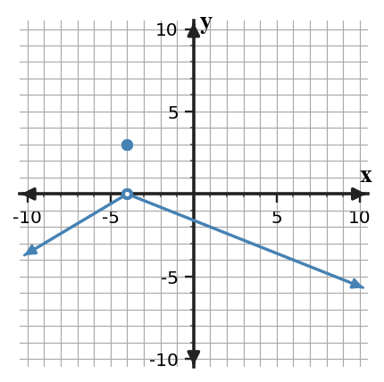
Graph of f.
x
-4.1
-4.01
-3.99
-3.9
f(x)
-0.1
-0.01
0.01
0.1
Answer / Solution:
Both representations give left- and right-hand limits 0, so the two-sided limit is 0; they agree.
U1-FA-D2-01-V2
Section 1.2 | Formative Assessment | N-A | DOK 2
Graph-Table Limit Match - Version 2. The graph and table are intended to represent the same local behavior near $x=-3$. Determine the one-sided limits from each representation and state whether the representations agree.
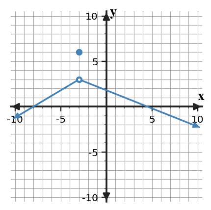
Graph of f.
x
-3.1
-3.01
-2.99
-2.9
f(x)
2.9
2.99
3.01
3.1
Answer / Solution:
Both representations give left- and right-hand limits 3, so the two-sided limit is 3; they agree.
U1-FA-D2-01-V3
Section 1.2 | Formative Assessment | N-A | DOK 2
Graph-Table Limit Match - Version 3. The graph and table are intended to represent the same local behavior near $x=-2$. Determine the one-sided limits from each representation and state whether the representations agree.
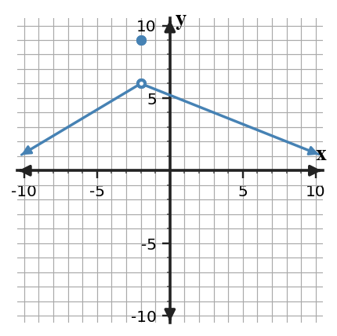
Graph of f.
x
-2.1
-2.01
-1.99
-1.9
f(x)
5.9
5.99
6.01
6.1
Answer / Solution:
Both representations give left- and right-hand limits 6, so the two-sided limit is 6; they agree.
U1-FA-D2-01-V4
Section 1.2 | Formative Assessment | N-A | DOK 2
Graph-Table Limit Match - Version 4. The graph and table are intended to represent the same local behavior near $x=-1$. Determine the one-sided limits from each representation and state whether the representations agree.
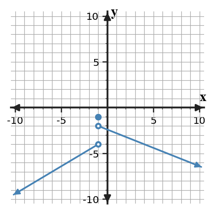
Graph of f.
x
-1.1
-1.01
-0.99
-0.9
f(x)
-4.1
-4.01
-1.99
-1.9
Answer / Solution:
Both give left-hand limit -4 and right-hand limit -2, so the two-sided limit is DNE; they agree.
U1-FA-D2-01-V5
Section 1.2 | Formative Assessment | N-A | DOK 2
Graph-Table Limit Match - Version 5. The graph and table are intended to represent the same local behavior near $x=0$. Determine the one-sided limits from each representation and state whether the representations agree.
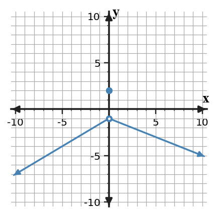
Graph of f.
x
-0.1
-0.01
0.01
0.1
f(x)
-1.1
-1.01
-0.99
-0.9
Answer / Solution:
Both representations give left- and right-hand limits -1, so the two-sided limit is -1; they agree.
U1-FA-D2-01-V6
Section 1.2 | Formative Assessment | N-A | DOK 2
Graph-Table Limit Match - Version 6. The graph and table are intended to represent the same local behavior near $x=1$. Determine the one-sided limits from each representation and state whether the representations agree.
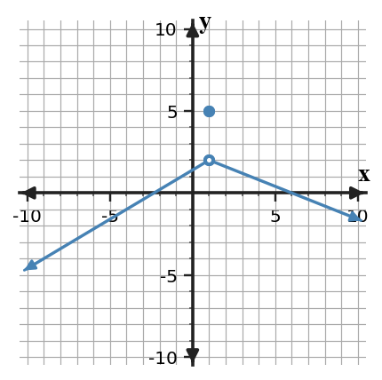
Graph of f.
x
0.9
0.99
1.01
1.1
f(x)
1.9
1.99
2.01
2.1
Answer / Solution:
Both representations give left- and right-hand limits 2, so the two-sided limit is 2; they agree.
U1-FA-D2-01-V7
Section 1.2 | Formative Assessment | N-A | DOK 2
Graph-Table Limit Match - Version 7. The graph and table are intended to represent the same local behavior near $x=2$. Determine the one-sided limits from each representation and state whether the representations agree.
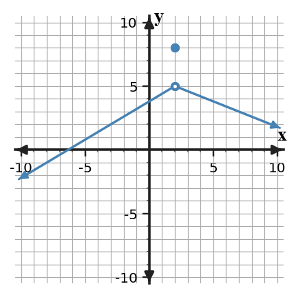
Graph of f.
x
1.9
1.99
2.01
2.1
f(x)
4.9
4.99
5.01
5.1
Answer / Solution:
Both representations give left- and right-hand limits 5, so the two-sided limit is 5; they agree.
U1-FA-D2-01-V8
Section 1.2 | Formative Assessment | N-A | DOK 2
Graph-Table Limit Match - Version 8. The graph and table are intended to represent the same local behavior near $x=3$. Determine the one-sided limits from each representation and state whether the representations agree.
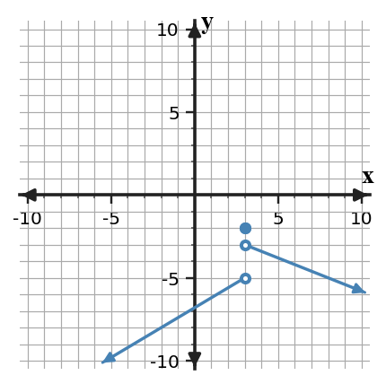
Graph of f.
x
2.9
2.99
3.01
3.1
f(x)
-5.1
-5.01
-2.99
-2.9
Answer / Solution:
Both give left-hand limit -5 and right-hand limit -3, so the two-sided limit is DNE; they agree.
U1-FA-D4-01-V1
Section 1.2 | Formative Assessment | Performance | DOK 4
Limit Evidence Investigation - Version 1. Investigate the claim $\lim_{x\to 2}\frac{x^2-4}{x-2}=4$. Generate at least four x-values on each side of 2, compute the corresponding function values, and create a small sketch or verbal graph description. State whether the evidence supports the claim, explain the hole at the target input, and document one refinement you made after looking at closer x-values.
Answer / Solution:
Expected conclusion: the limit is 4. For x not equal to 2, the expression simplifies to x+2, so values from both sides approach 4. The original expression is undefined at x=2; that does not change the limit. Scoring: evidence 2, representation 1, conclusion/justification 2, refinement note 1.
U1-FA-D4-01-V2
Section 1.2 | Formative Assessment | Performance | DOK 4
Limit Evidence Investigation - Version 2. Investigate the claim $\lim_{x\to 3}\frac{x^2-9}{x-3}=6$. Generate at least four x-values on each side of 3, compute the corresponding function values, and create a small sketch or verbal graph description. State whether the evidence supports the claim, explain the hole at the target input, and document one refinement you made after looking at closer x-values.
Answer / Solution:
Expected conclusion: the limit is 6. For x not equal to 3, the expression simplifies to x+3, so values from both sides approach 6. The original expression is undefined at x=3; that does not change the limit. Scoring: evidence 2, representation 1, conclusion/justification 2, refinement note 1.
U1-FA-D4-01-V3
Section 1.2 | Formative Assessment | Performance | DOK 4
Limit Evidence Investigation - Version 3. Investigate the claim $\lim_{x\to 4}\frac{x^2-16}{x-4}=8$. Generate at least four x-values on each side of 4, compute the corresponding function values, and create a small sketch or verbal graph description. State whether the evidence supports the claim, explain the hole at the target input, and document one refinement you made after looking at closer x-values.
Answer / Solution:
Expected conclusion: the limit is 8. For x not equal to 4, the expression simplifies to x+4, so values from both sides approach 8. The original expression is undefined at x=4; that does not change the limit. Scoring: evidence 2, representation 1, conclusion/justification 2, refinement note 1.
U1-FA-D4-01-V4
Section 1.2 | Formative Assessment | Performance | DOK 4
Limit Evidence Investigation - Version 4. Investigate the claim $\lim_{x\to 5}\frac{x^2-25}{x-5}=10$. Generate at least four x-values on each side of 5, compute the corresponding function values, and create a small sketch or verbal graph description. State whether the evidence supports the claim, explain the hole at the target input, and document one refinement you made after looking at closer x-values.
Answer / Solution:
Expected conclusion: the limit is 10. For x not equal to 5, the expression simplifies to x+5, so values from both sides approach 10. The original expression is undefined at x=5; that does not change the limit. Scoring: evidence 2, representation 1, conclusion/justification 2, refinement note 1.
U1-FA-D4-01-V5
Section 1.2 | Formative Assessment | Performance | DOK 4
Limit Evidence Investigation - Version 5. Investigate the claim $\lim_{x\to 6}\frac{x^2-36}{x-6}=12$. Generate at least four x-values on each side of 6, compute the corresponding function values, and create a small sketch or verbal graph description. State whether the evidence supports the claim, explain the hole at the target input, and document one refinement you made after looking at closer x-values.
Answer / Solution:
Expected conclusion: the limit is 12. For x not equal to 6, the expression simplifies to x+6, so values from both sides approach 12. The original expression is undefined at x=6; that does not change the limit. Scoring: evidence 2, representation 1, conclusion/justification 2, refinement note 1.
U1-FA-D4-01-V6
Section 1.2 | Formative Assessment | Performance | DOK 4
Limit Evidence Investigation - Version 6. Investigate the claim $\lim_{x\to 7}\frac{x^2-49}{x-7}=14$. Generate at least four x-values on each side of 7, compute the corresponding function values, and create a small sketch or verbal graph description. State whether the evidence supports the claim, explain the hole at the target input, and document one refinement you made after looking at closer x-values.
Answer / Solution:
Expected conclusion: the limit is 14. For x not equal to 7, the expression simplifies to x+7, so values from both sides approach 14. The original expression is undefined at x=7; that does not change the limit. Scoring: evidence 2, representation 1, conclusion/justification 2, refinement note 1.
U1-FA-D4-01-V7
Section 1.2 | Formative Assessment | Performance | DOK 4
Limit Evidence Investigation - Version 7. Investigate the claim $\lim_{x\to 8}\frac{x^2-64}{x-8}=16$. Generate at least four x-values on each side of 8, compute the corresponding function values, and create a small sketch or verbal graph description. State whether the evidence supports the claim, explain the hole at the target input, and document one refinement you made after looking at closer x-values.
Answer / Solution:
Expected conclusion: the limit is 16. For x not equal to 8, the expression simplifies to x+8, so values from both sides approach 16. The original expression is undefined at x=8; that does not change the limit. Scoring: evidence 2, representation 1, conclusion/justification 2, refinement note 1.
U1-FA-D4-01-V8
Section 1.2 | Formative Assessment | Performance | DOK 4
Limit Evidence Investigation - Version 8. Investigate the claim $\lim_{x\to 9}\frac{x^2-81}{x-9}=18$. Generate at least four x-values on each side of 9, compute the corresponding function values, and create a small sketch or verbal graph description. State whether the evidence supports the claim, explain the hole at the target input, and document one refinement you made after looking at closer x-values.
Answer / Solution:
Expected conclusion: the limit is 18. For x not equal to 9, the expression simplifies to x+9, so values from both sides approach 18. The original expression is undefined at x=9; that does not change the limit. Scoring: evidence 2, representation 1, conclusion/justification 2, refinement note 1.
Section 1.3 - Algebraic Limits
U1-FA-D1-03-V1
Section 1.3 | Formative Assessment | N-A | DOK 1
Algebraic Limit Fluency - Version 1. Evaluate $\lim_{x\to -3}(3x^2-3x+1)$ by direct substitution.
Answer / Solution:
$37$
U1-FA-D1-03-V2
Section 1.3 | Formative Assessment | N-A | DOK 1
Algebraic Limit Fluency - Version 2. Evaluate $\lim_{x\to0}\frac{\sin(3x)}{x}$.
Answer / Solution:
$3$
U1-FA-D1-03-V3
Section 1.3 | Formative Assessment | N-A | DOK 1
Algebraic Limit Fluency - Version 3. Evaluate $\lim_{x\to 4}\frac{x^2-16}{x-4}$ after factoring.
Answer / Solution:
$8$
U1-FA-D1-03-V4
Section 1.3 | Formative Assessment | N-A | DOK 1
Algebraic Limit Fluency - Version 4. Evaluate $\lim_{x\to 0}(2x^2-3x+1)$ by direct substitution.
Answer / Solution:
$1$
U1-FA-D1-03-V5
Section 1.3 | Formative Assessment | N-A | DOK 1
Algebraic Limit Fluency - Version 5. Evaluate $\lim_{x\to0}\frac{\sin(6x)}{x}$.
Answer / Solution:
$6$
U1-FA-D1-03-V6
Section 1.3 | Formative Assessment | N-A | DOK 1
Algebraic Limit Fluency - Version 6. Evaluate $\lim_{x\to 7}\frac{x^2-49}{x-7}$ after factoring.
Answer / Solution:
$14$
U1-FA-D1-03-V7
Section 1.3 | Formative Assessment | N-A | DOK 1
Algebraic Limit Fluency - Version 7. Evaluate $\lim_{x\to 3}(5x^2-3x+1)$ by direct substitution.
Answer / Solution:
$37$
U1-FA-D1-03-V8
Section 1.3 | Formative Assessment | N-A | DOK 1
Algebraic Limit Fluency - Version 8. Evaluate $\lim_{x\to0}\frac{\sin(9x)}{x}$.
Answer / Solution:
$9$
U1-FA-D2-02-V1
Section 1.3 | Formative Assessment | N-A | DOK 2
Method Selection for Algebraic Limits - Version 1. For each limit, name an efficient routine method and evaluate it: $\lim_{x\to 2}\frac{x^2-4}{x-2}$; $\lim_{x\to 9}\frac{\sqrt{x}-3}{x-9}$; $\lim_{x\to0}\frac{\sin(3x)}{x}$.
Method Selection for Algebraic Limits - Version 2. For each limit, name an efficient routine method and evaluate it: $\lim_{x\to 3}\frac{x^2-9}{x-3}$; $\lim_{x\to 16}\frac{\sqrt{x}-4}{x-16}$; $\lim_{x\to0}\frac{\sin(4x)}{x}$.
Method Selection for Algebraic Limits - Version 3. For each limit, name an efficient routine method and evaluate it: $\lim_{x\to 4}\frac{x^2-16}{x-4}$; $\lim_{x\to 25}\frac{\sqrt{x}-5}{x-25}$; $\lim_{x\to0}\frac{\sin(5x)}{x}$.
Method Selection for Algebraic Limits - Version 4. For each limit, name an efficient routine method and evaluate it: $\lim_{x\to 5}\frac{x^2-25}{x-5}$; $\lim_{x\to 36}\frac{\sqrt{x}-6}{x-36}$; $\lim_{x\to0}\frac{\sin(6x)}{x}$.
Method Selection for Algebraic Limits - Version 5. For each limit, name an efficient routine method and evaluate it: $\lim_{x\to 6}\frac{x^2-36}{x-6}$; $\lim_{x\to 49}\frac{\sqrt{x}-7}{x-49}$; $\lim_{x\to0}\frac{\sin(7x)}{x}$.
Method Selection for Algebraic Limits - Version 6. For each limit, name an efficient routine method and evaluate it: $\lim_{x\to 7}\frac{x^2-49}{x-7}$; $\lim_{x\to 64}\frac{\sqrt{x}-8}{x-64}$; $\lim_{x\to0}\frac{\sin(8x)}{x}$.
Method Selection for Algebraic Limits - Version 7. For each limit, name an efficient routine method and evaluate it: $\lim_{x\to 8}\frac{x^2-64}{x-8}$; $\lim_{x\to 81}\frac{\sqrt{x}-9}{x-81}$; $\lim_{x\to0}\frac{\sin(9x)}{x}$.
Method Selection for Algebraic Limits - Version 8. For each limit, name an efficient routine method and evaluate it: $\lim_{x\to 9}\frac{x^2-81}{x-9}$; $\lim_{x\to 100}\frac{\sqrt{x}-10}{x-100}$; $\lim_{x\to0}\frac{\sin(10x)}{x}$.
Competing Limit Strategies - Version 1. Two students attack $\lim_{x\to 2}\frac{x^2-4}{x-2}$. Student A substitutes and concludes the limit is undefined because the form is $0/0$. Student B factors, cancels for nearby x, and gets $4$. Evaluate both approaches and explain which conclusion is valid and why.
Answer / Solution:
Student B is valid. $0/0$ is indeterminate, not a final answer. Factoring gives the equivalent nearby expression $x+2$, whose limit is $4$.
U1-FA-D3-01-V2
Section 1.3 | Formative Assessment | N-A | DOK 3
Competing Limit Strategies - Version 2. For $\lim_{x\to 16}\frac{\sqrt{x}-4}{x-16}$, compare (A) factoring the denominator only and (B) multiplying numerator and denominator by the conjugate. Decide which route is mathematically productive and justify the structural reason.
Answer / Solution:
The conjugate route is productive because it converts the numerator to $x-16$, creating the common factor needed for cancellation. Factoring the denominator alone does not remove the radical difference.
U1-FA-D3-01-V3
Section 1.3 | Formative Assessment | N-A | DOK 3
Competing Limit Strategies - Version 3. Two students attack $\lim_{x\to 4}\frac{x^2-16}{x-4}$. Student A substitutes and concludes the limit is undefined because the form is $0/0$. Student B factors, cancels for nearby x, and gets $8$. Evaluate both approaches and explain which conclusion is valid and why.
Answer / Solution:
Student B is valid. $0/0$ is indeterminate, not a final answer. Factoring gives the equivalent nearby expression $x+4$, whose limit is $8$.
U1-FA-D3-01-V4
Section 1.3 | Formative Assessment | N-A | DOK 3
Competing Limit Strategies - Version 4. For $\lim_{x\to 36}\frac{\sqrt{x}-6}{x-36}$, compare (A) factoring the denominator only and (B) multiplying numerator and denominator by the conjugate. Decide which route is mathematically productive and justify the structural reason.
Answer / Solution:
The conjugate route is productive because it converts the numerator to $x-36$, creating the common factor needed for cancellation. Factoring the denominator alone does not remove the radical difference.
U1-FA-D3-01-V5
Section 1.3 | Formative Assessment | N-A | DOK 3
Competing Limit Strategies - Version 5. Two students attack $\lim_{x\to 6}\frac{x^2-36}{x-6}$. Student A substitutes and concludes the limit is undefined because the form is $0/0$. Student B factors, cancels for nearby x, and gets $12$. Evaluate both approaches and explain which conclusion is valid and why.
Answer / Solution:
Student B is valid. $0/0$ is indeterminate, not a final answer. Factoring gives the equivalent nearby expression $x+6$, whose limit is $12$.
U1-FA-D3-01-V6
Section 1.3 | Formative Assessment | N-A | DOK 3
Competing Limit Strategies - Version 6. For $\lim_{x\to 64}\frac{\sqrt{x}-8}{x-64}$, compare (A) factoring the denominator only and (B) multiplying numerator and denominator by the conjugate. Decide which route is mathematically productive and justify the structural reason.
Answer / Solution:
The conjugate route is productive because it converts the numerator to $x-64$, creating the common factor needed for cancellation. Factoring the denominator alone does not remove the radical difference.
U1-FA-D3-01-V7
Section 1.3 | Formative Assessment | N-A | DOK 3
Competing Limit Strategies - Version 7. Two students attack $\lim_{x\to 8}\frac{x^2-64}{x-8}$. Student A substitutes and concludes the limit is undefined because the form is $0/0$. Student B factors, cancels for nearby x, and gets $16$. Evaluate both approaches and explain which conclusion is valid and why.
Answer / Solution:
Student B is valid. $0/0$ is indeterminate, not a final answer. Factoring gives the equivalent nearby expression $x+8$, whose limit is $16$.
U1-FA-D3-01-V8
Section 1.3 | Formative Assessment | N-A | DOK 3
Competing Limit Strategies - Version 8. For $\lim_{x\to 100}\frac{\sqrt{x}-10}{x-100}$, compare (A) factoring the denominator only and (B) multiplying numerator and denominator by the conjugate. Decide which route is mathematically productive and justify the structural reason.
Answer / Solution:
The conjugate route is productive because it converts the numerator to $x-100$, creating the common factor needed for cancellation. Factoring the denominator alone does not remove the radical difference.
Section 1.4 - Continuity and Discontinuity
U1-FA-D2-03-V1
Section 1.4 | Formative Assessment | N-A | DOK 2
Piecewise Continuity Application - Version 1. Find $k$ so $f(x)=\begin{cases}4x-4,&x\lt -4\k,&x=-4\\4x-4,&x\gt -4\end{cases}$ is continuous at $x=-4$. Verify all three continuity conditions.
Answer / Solution:
$k=-20$. The function value then exists and equals -20; both one-sided limits equal -20; hence the two-sided limit equals the function value.
U1-FA-D2-03-V2
Section 1.4 | Formative Assessment | N-A | DOK 2
Piecewise Continuity Application - Version 2. Find $k$ so $f(x)=\begin{cases}1x-2,&x\lt -3\k,&x=-3\\1x-2,&x\gt -3\end{cases}$ is continuous at $x=-3$. Verify all three continuity conditions.
Answer / Solution:
$k=-5$. The function value then exists and equals -5; both one-sided limits equal -5; hence the two-sided limit equals the function value.
U1-FA-D2-03-V3
Section 1.4 | Formative Assessment | N-A | DOK 2
Piecewise Continuity Application - Version 3. Find $k$ so $f(x)=\begin{cases}1x+2,&x\lt -2\k,&x=-2\\1x+2,&x\gt -2\end{cases}$ is continuous at $x=-2$. Verify all three continuity conditions.
Answer / Solution:
$k=0$. The function value then exists and equals 0; both one-sided limits equal 0; hence the two-sided limit equals the function value.
U1-FA-D2-03-V4
Section 1.4 | Formative Assessment | N-A | DOK 2
Piecewise Continuity Application - Version 4. Find $k$ so $f(x)=\begin{cases}4x+3,&x\lt -1\k,&x=-1\\4x+3,&x\gt -1\end{cases}$ is continuous at $x=-1$. Verify all three continuity conditions.
Answer / Solution:
$k=-1$. The function value then exists and equals -1; both one-sided limits equal -1; hence the two-sided limit equals the function value.
U1-FA-D2-03-V5
Section 1.4 | Formative Assessment | N-A | DOK 2
Piecewise Continuity Application - Version 5. Find $k$ so $f(x)=\begin{cases}4x+0,&x\lt 0\k,&x=0\\4x+0,&x\gt 0\end{cases}$ is continuous at $x=0$. Verify all three continuity conditions.
Answer / Solution:
$k=0$. The function value then exists and equals 0; both one-sided limits equal 0; hence the two-sided limit equals the function value.
U1-FA-D2-03-V6
Section 1.4 | Formative Assessment | N-A | DOK 2
Piecewise Continuity Application - Version 6. Find $k$ so $f(x)=\begin{cases}2x-3,&x\lt 1\k,&x=1\\2x-3,&x\gt 1\end{cases}$ is continuous at $x=1$. Verify all three continuity conditions.
Answer / Solution:
$k=-1$. The function value then exists and equals -1; both one-sided limits equal -1; hence the two-sided limit equals the function value.
U1-FA-D2-03-V7
Section 1.4 | Formative Assessment | N-A | DOK 2
Piecewise Continuity Application - Version 7. Find $k$ so $f(x)=\begin{cases}2x-3,&x\lt 2\k,&x=2\\2x-3,&x\gt 2\end{cases}$ is continuous at $x=2$. Verify all three continuity conditions.
Answer / Solution:
$k=1$. The function value then exists and equals 1; both one-sided limits equal 1; hence the two-sided limit equals the function value.
U1-FA-D2-03-V8
Section 1.4 | Formative Assessment | N-A | DOK 2
Piecewise Continuity Application - Version 8. Find $k$ so $f(x)=\begin{cases}2x-1,&x\lt 3\k,&x=3\\2x-1,&x\gt 3\end{cases}$ is continuous at $x=3$. Verify all three continuity conditions.
Answer / Solution:
$k=5$. The function value then exists and equals 5; both one-sided limits equal 5; hence the two-sided limit equals the function value.
U1-FA-D3-02-V1
Section 1.4 | Formative Assessment | N-A | DOK 3
Continuity Claim Critique - Version 1. A student claims a function is continuous at $x=-4$ because the graph has a filled point there. Additional evidence shows $f(-4)=2$ and $\lim_{x\to -4^-}f(x)=0$, $\lim_{x\to -4^+}f(x)=2$. Critique the claim and classify the discontinuity.
Answer / Solution:
The claim is false. The one-sided limits differ, so the two-sided limit does not exist. The discontinuity is a jump, regardless of the filled point at x=-4.
U1-FA-D3-02-V2
Section 1.4 | Formative Assessment | N-A | DOK 3
Continuity Claim Critique - Version 2. A student claims a function is continuous at $x=-3$ because the graph has a filled point there. Additional evidence shows $f(-3)=5$ and $\lim_{x\to -3^-}f(x)=3$, $\lim_{x\to -3^+}f(x)=5$. Critique the claim and classify the discontinuity.
Answer / Solution:
The claim is false. The one-sided limits differ, so the two-sided limit does not exist. The discontinuity is a jump, regardless of the filled point at x=-3.
U1-FA-D3-02-V3
Section 1.4 | Formative Assessment | N-A | DOK 3
Continuity Claim Critique - Version 3. A student claims a function is continuous at $x=-2$ because the graph has a filled point there. Additional evidence shows $f(-2)=-5$ and $\lim_{x\to -2^-}f(x)=-7$, $\lim_{x\to -2^+}f(x)=-5$. Critique the claim and classify the discontinuity.
Answer / Solution:
The claim is false. The one-sided limits differ, so the two-sided limit does not exist. The discontinuity is a jump, regardless of the filled point at x=-2.
U1-FA-D3-02-V4
Section 1.4 | Formative Assessment | N-A | DOK 3
Continuity Claim Critique - Version 4. A student claims a function is continuous at $x=-1$ because the graph has a filled point there. Additional evidence shows $f(-1)=-2$ and $\lim_{x\to -1^-}f(x)=-4$, $\lim_{x\to -1^+}f(x)=-2$. Critique the claim and classify the discontinuity.
Answer / Solution:
The claim is false. The one-sided limits differ, so the two-sided limit does not exist. The discontinuity is a jump, regardless of the filled point at x=-1.
U1-FA-D3-02-V5
Section 1.4 | Formative Assessment | N-A | DOK 3
Continuity Claim Critique - Version 5. A student claims a function is continuous at $x=0$ because the graph has a filled point there. Additional evidence shows $f(0)=1$ and $\lim_{x\to 0^-}f(x)=-1$, $\lim_{x\to 0^+}f(x)=1$. Critique the claim and classify the discontinuity.
Answer / Solution:
The claim is false. The one-sided limits differ, so the two-sided limit does not exist. The discontinuity is a jump, regardless of the filled point at x=0.
U1-FA-D3-02-V6
Section 1.4 | Formative Assessment | N-A | DOK 3
Continuity Claim Critique - Version 6. A student claims a function is continuous at $x=1$ because the graph has a filled point there. Additional evidence shows $f(1)=4$ and $\lim_{x\to 1^-}f(x)=2$, $\lim_{x\to 1^+}f(x)=4$. Critique the claim and classify the discontinuity.
Answer / Solution:
The claim is false. The one-sided limits differ, so the two-sided limit does not exist. The discontinuity is a jump, regardless of the filled point at x=1.
U1-FA-D3-02-V7
Section 1.4 | Formative Assessment | N-A | DOK 3
Continuity Claim Critique - Version 7. A student claims a function is continuous at $x=2$ because the graph has a filled point there. Additional evidence shows $f(2)=-6$ and $\lim_{x\to 2^-}f(x)=-8$, $\lim_{x\to 2^+}f(x)=-6$. Critique the claim and classify the discontinuity.
Answer / Solution:
The claim is false. The one-sided limits differ, so the two-sided limit does not exist. The discontinuity is a jump, regardless of the filled point at x=2.
U1-FA-D3-02-V8
Section 1.4 | Formative Assessment | N-A | DOK 3
Continuity Claim Critique - Version 8. A student claims a function is continuous at $x=3$ because the graph has a filled point there. Additional evidence shows $f(3)=-3$ and $\lim_{x\to 3^-}f(x)=-5$, $\lim_{x\to 3^+}f(x)=-3$. Critique the claim and classify the discontinuity.
Answer / Solution:
The claim is false. The one-sided limits differ, so the two-sided limit does not exist. The discontinuity is a jump, regardless of the filled point at x=3.
U1-FA-D4-02-V1
Section 1.4 | Formative Assessment | Performance | DOK 4
Build a Continuity Model - Version 1. Build a piecewise function on $[-5,5]$ that is continuous at $x=-2$, has a removable discontinuity at $x=0$, and has a jump discontinuity at $x=2$. Give exact formulas/domain rules, test all one-sided limits and function values at the three specified inputs, and revise any rule that fails a condition.
Answer / Solution:
Many models are possible. Full credit requires explicit pieces and endpoint rules, correct limit/function-value verification for all three requested features, and a documented check/revision. Scoring: model 2, three feature checks 3, revision/verification 1.
U1-FA-D4-02-V2
Section 1.4 | Formative Assessment | Performance | DOK 4
Build a Continuity Model - Version 2. Build a piecewise function on $[-5,5]$ that is continuous at $x=-1$, has a removable discontinuity at $x=1$, and has a jump discontinuity at $x=3$. Give exact formulas/domain rules, test all one-sided limits and function values at the three specified inputs, and revise any rule that fails a condition.
Answer / Solution:
Many models are possible. Full credit requires explicit pieces and endpoint rules, correct limit/function-value verification for all three requested features, and a documented check/revision. Scoring: model 2, three feature checks 3, revision/verification 1.
U1-FA-D4-02-V3
Section 1.4 | Formative Assessment | Performance | DOK 4
Build a Continuity Model - Version 3. Build a piecewise function on $[-5,5]$ that is continuous at $x=0$, has a removable discontinuity at $x=-1$, and has a jump discontinuity at $x=1$. Give exact formulas/domain rules, test all one-sided limits and function values at the three specified inputs, and revise any rule that fails a condition.
Answer / Solution:
Many models are possible. Full credit requires explicit pieces and endpoint rules, correct limit/function-value verification for all three requested features, and a documented check/revision. Scoring: model 2, three feature checks 3, revision/verification 1.
U1-FA-D4-02-V4
Section 1.4 | Formative Assessment | Performance | DOK 4
Build a Continuity Model - Version 4. Build a piecewise function on $[-5,5]$ that is continuous at $x=-3$, has a removable discontinuity at $x=0$, and has a jump discontinuity at $x=2$. Give exact formulas/domain rules, test all one-sided limits and function values at the three specified inputs, and revise any rule that fails a condition.
Answer / Solution:
Many models are possible. Full credit requires explicit pieces and endpoint rules, correct limit/function-value verification for all three requested features, and a documented check/revision. Scoring: model 2, three feature checks 3, revision/verification 1.
U1-FA-D4-02-V5
Section 1.4 | Formative Assessment | Performance | DOK 4
Build a Continuity Model - Version 5. Build a piecewise function on $[-5,5]$ that is continuous at $x=-2$, has a removable discontinuity at $x=1$, and has a jump discontinuity at $x=4$. Give exact formulas/domain rules, test all one-sided limits and function values at the three specified inputs, and revise any rule that fails a condition.
Answer / Solution:
Many models are possible. Full credit requires explicit pieces and endpoint rules, correct limit/function-value verification for all three requested features, and a documented check/revision. Scoring: model 2, three feature checks 3, revision/verification 1.
U1-FA-D4-02-V6
Section 1.4 | Formative Assessment | Performance | DOK 4
Build a Continuity Model - Version 6. Build a piecewise function on $[-5,5]$ that is continuous at $x=-1$, has a removable discontinuity at $x=-1$, and has a jump discontinuity at $x=2$. Give exact formulas/domain rules, test all one-sided limits and function values at the three specified inputs, and revise any rule that fails a condition.
Answer / Solution:
Many models are possible. Full credit requires explicit pieces and endpoint rules, correct limit/function-value verification for all three requested features, and a documented check/revision. Scoring: model 2, three feature checks 3, revision/verification 1.
U1-FA-D4-02-V7
Section 1.4 | Formative Assessment | Performance | DOK 4
Build a Continuity Model - Version 7. Build a piecewise function on $[-5,5]$ that is continuous at $x=0$, has a removable discontinuity at $x=0$, and has a jump discontinuity at $x=3$. Give exact formulas/domain rules, test all one-sided limits and function values at the three specified inputs, and revise any rule that fails a condition.
Answer / Solution:
Many models are possible. Full credit requires explicit pieces and endpoint rules, correct limit/function-value verification for all three requested features, and a documented check/revision. Scoring: model 2, three feature checks 3, revision/verification 1.
U1-FA-D4-02-V8
Section 1.4 | Formative Assessment | Performance | DOK 4
Build a Continuity Model - Version 8. Build a piecewise function on $[-5,5]$ that is continuous at $x=-3$, has a removable discontinuity at $x=1$, and has a jump discontinuity at $x=4$. Give exact formulas/domain rules, test all one-sided limits and function values at the three specified inputs, and revise any rule that fails a condition.
Answer / Solution:
Many models are possible. Full credit requires explicit pieces and endpoint rules, correct limit/function-value verification for all three requested features, and a documented check/revision. Scoring: model 2, three feature checks 3, revision/verification 1.
Section 1.5 - Asymptotes and IVT
U1-FA-D1-04-V1
Section 1.5 | Formative Assessment | N-A | DOK 1
Continuity and Asymptote Vocabulary Check - Version 1. Match each description near $x=-4$ to the term: (i) both finite one-sided limits equal 2 but the function value is missing, (ii) finite one-sided limits are 2 and 4, (iii) outputs grow without bound near $x=-3$, (iv) end behavior approaches $y=1$. Terms: removable discontinuity, jump discontinuity, vertical asymptote, horizontal asymptote.
Answer / Solution:
i removable; ii jump; iii vertical asymptote; iv horizontal asymptote.
U1-FA-D1-04-V2
Section 1.5 | Formative Assessment | N-A | DOK 1
Continuity and Asymptote Vocabulary Check - Version 2. Which condition completes the continuity test at $x=-3$? The function value exists, the two-sided limit exists, and ________.
the graph crosses the x-axis
the two-sided limit equals the function value
the derivative is zero
both one-sided limits are infinite
Answer / Solution:
B. The two-sided limit equals the function value.
U1-FA-D1-04-V3
Section 1.5 | Formative Assessment | N-A | DOK 1
Continuity and Asymptote Vocabulary Check - Version 3. Match each description near $x=-2$ to the term: (i) both finite one-sided limits equal -5 but the function value is missing, (ii) finite one-sided limits are -5 and -3, (iii) outputs grow without bound near $x=-1$, (iv) end behavior approaches $y=-6$. Terms: removable discontinuity, jump discontinuity, vertical asymptote, horizontal asymptote.
Answer / Solution:
i removable; ii jump; iii vertical asymptote; iv horizontal asymptote.
U1-FA-D1-04-V4
Section 1.5 | Formative Assessment | N-A | DOK 1
Continuity and Asymptote Vocabulary Check - Version 4. Which condition completes the continuity test at $x=-1$? The function value exists, the two-sided limit exists, and ________.
the graph crosses the x-axis
the two-sided limit equals the function value
the derivative is zero
both one-sided limits are infinite
Answer / Solution:
B. The two-sided limit equals the function value.
U1-FA-D1-04-V5
Section 1.5 | Formative Assessment | N-A | DOK 1
Continuity and Asymptote Vocabulary Check - Version 5. Match each description near $x=0$ to the term: (i) both finite one-sided limits equal 1 but the function value is missing, (ii) finite one-sided limits are 1 and 3, (iii) outputs grow without bound near $x=1$, (iv) end behavior approaches $y=0$. Terms: removable discontinuity, jump discontinuity, vertical asymptote, horizontal asymptote.
Answer / Solution:
i removable; ii jump; iii vertical asymptote; iv horizontal asymptote.
U1-FA-D1-04-V6
Section 1.5 | Formative Assessment | N-A | DOK 1
Continuity and Asymptote Vocabulary Check - Version 6. Which condition completes the continuity test at $x=1$? The function value exists, the two-sided limit exists, and ________.
the graph crosses the x-axis
the two-sided limit equals the function value
the derivative is zero
both one-sided limits are infinite
Answer / Solution:
B. The two-sided limit equals the function value.
U1-FA-D1-04-V7
Section 1.5 | Formative Assessment | N-A | DOK 1
Continuity and Asymptote Vocabulary Check - Version 7. Match each description near $x=2$ to the term: (i) both finite one-sided limits equal -6 but the function value is missing, (ii) finite one-sided limits are -6 and -4, (iii) outputs grow without bound near $x=3$, (iv) end behavior approaches $y=-7$. Terms: removable discontinuity, jump discontinuity, vertical asymptote, horizontal asymptote.
Answer / Solution:
i removable; ii jump; iii vertical asymptote; iv horizontal asymptote.
U1-FA-D1-04-V8
Section 1.5 | Formative Assessment | N-A | DOK 1
Continuity and Asymptote Vocabulary Check - Version 8. Which condition completes the continuity test at $x=3$? The function value exists, the two-sided limit exists, and ________.
the graph crosses the x-axis
the two-sided limit equals the function value
the derivative is zero
both one-sided limits are infinite
Answer / Solution:
B. The two-sided limit equals the function value.
U1-FA-D2-04-V1
Section 1.5 | Formative Assessment | N-A | DOK 2
Asymptote and IVT Application - Version 1. For $f(x)=-1+\frac{2}{x--4}$, identify both asymptotes and write one limit statement for each.
Answer / Solution:
Vertical $x=-4$; horizontal $y=-1$. Example limits: $\lim_{x\to -4^+}f(x)=+\infty$ and $\lim_{x\to\infty}f(x)=-1$.
U1-FA-D2-04-V2
Section 1.5 | Formative Assessment | N-A | DOK 2
Asymptote and IVT Application - Version 2. A function is continuous on $[0,5]$ with $f(0)=-5$ and $f(5)=7$. Decide whether IVT guarantees $f(c)=1$ for some $c\in(0,5)$ and justify.
Answer / Solution:
Yes. The function is continuous and 1 lies between -5 and 7.
U1-FA-D2-04-V3
Section 1.5 | Formative Assessment | N-A | DOK 2
Asymptote and IVT Application - Version 3. For $f(x)=1+\frac{2}{x--2}$, identify both asymptotes and write one limit statement for each.
Answer / Solution:
Vertical $x=-2$; horizontal $y=1$. Example limits: $\lim_{x\to -2^+}f(x)=+\infty$ and $\lim_{x\to\infty}f(x)=1$.
U1-FA-D2-04-V4
Section 1.5 | Formative Assessment | N-A | DOK 2
Asymptote and IVT Application - Version 4. A function is continuous on $[0,5]$ with $f(0)=-3$ and $f(5)=9$. Decide whether IVT guarantees $f(c)=1$ for some $c\in(0,5)$ and justify.
Answer / Solution:
Yes. The function is continuous and 1 lies between -3 and 9.
U1-FA-D2-04-V5
Section 1.5 | Formative Assessment | N-A | DOK 2
Asymptote and IVT Application - Version 5. For $f(x)=-2+\frac{2}{x-0}$, identify both asymptotes and write one limit statement for each.
Answer / Solution:
Vertical $x=0$; horizontal $y=-2$. Example limits: $\lim_{x\to 0^+}f(x)=+\infty$ and $\lim_{x\to\infty}f(x)=-2$.
U1-FA-D2-04-V6
Section 1.5 | Formative Assessment | N-A | DOK 2
Asymptote and IVT Application - Version 6. A function is continuous on $[0,5]$ with $f(0)=-1$ and $f(5)=11$. Decide whether IVT guarantees $f(c)=1$ for some $c\in(0,5)$ and justify.
Answer / Solution:
Yes. The function is continuous and 1 lies between -1 and 11.
U1-FA-D2-04-V7
Section 1.5 | Formative Assessment | N-A | DOK 2
Asymptote and IVT Application - Version 7. For $f(x)=0+\frac{2}{x-2}$, identify both asymptotes and write one limit statement for each.
Answer / Solution:
Vertical $x=2$; horizontal $y=0$. Example limits: $\lim_{x\to 2^+}f(x)=+\infty$ and $\lim_{x\to\infty}f(x)=0$.
U1-FA-D2-04-V8
Section 1.5 | Formative Assessment | N-A | DOK 2
Asymptote and IVT Application - Version 8. A function is continuous on $[0,5]$ with $f(0)=1$ and $f(5)=13$. Decide whether IVT guarantees $f(c)=1$ for some $c\in(0,5)$ and justify.
Answer / Solution:
Yes. The function is continuous and 1 lies between 1 and 13.
U1-FA-D3-03-V1
Section 1.5 | Formative Assessment | N-A | DOK 3
IVT Hypothesis Justification - Version 1. A function is described as follows: continuous on [0,4], f(0)=-4, f(4)=6, target 2. Determine whether IVT guarantees the target value on the open interval. Your justification must identify the exact hypothesis or value-between-endpoints condition that is satisfied or fails.
Answer / Solution:
Yes. Continuity on the closed interval is given and the target lies between the endpoint values.
U1-FA-D3-03-V2
Section 1.5 | Formative Assessment | N-A | DOK 3
IVT Hypothesis Justification - Version 2. A function is described as follows: f(0)=-3, f(4)=7, but a jump occurs at x=3, target 1. Determine whether IVT guarantees the target value on the open interval. Your justification must identify the exact hypothesis or value-between-endpoints condition that is satisfied or fails.
Answer / Solution:
No. Continuity on the closed interval fails.
U1-FA-D3-03-V3
Section 1.5 | Formative Assessment | N-A | DOK 3
IVT Hypothesis Justification - Version 3. A function is described as follows: continuous on [0,4], f(0)=3, f(4)=11, target 2. Determine whether IVT guarantees the target value on the open interval. Your justification must identify the exact hypothesis or value-between-endpoints condition that is satisfied or fails.
Answer / Solution:
No. The target is not between the endpoint values.
U1-FA-D3-03-V4
Section 1.5 | Formative Assessment | N-A | DOK 3
IVT Hypothesis Justification - Version 4. A function is described as follows: continuous on [0,4], f(0)=-4, f(4)=5, target 1. Determine whether IVT guarantees the target value on the open interval. Your justification must identify the exact hypothesis or value-between-endpoints condition that is satisfied or fails.
Answer / Solution:
Yes. Continuity on the closed interval is given and the target lies between the endpoint values.
U1-FA-D3-03-V5
Section 1.5 | Formative Assessment | N-A | DOK 3
IVT Hypothesis Justification - Version 5. A function is described as follows: f(0)=-3, f(4)=6, but a jump occurs at x=3, target 2. Determine whether IVT guarantees the target value on the open interval. Your justification must identify the exact hypothesis or value-between-endpoints condition that is satisfied or fails.
Answer / Solution:
No. Continuity on the closed interval fails.
U1-FA-D3-03-V6
Section 1.5 | Formative Assessment | N-A | DOK 3
IVT Hypothesis Justification - Version 6. A function is described as follows: continuous on [0,4], f(0)=3, f(4)=10, target 1. Determine whether IVT guarantees the target value on the open interval. Your justification must identify the exact hypothesis or value-between-endpoints condition that is satisfied or fails.
Answer / Solution:
No. The target is not between the endpoint values.
U1-FA-D3-03-V7
Section 1.5 | Formative Assessment | N-A | DOK 3
IVT Hypothesis Justification - Version 7. A function is described as follows: continuous on [0,4], f(0)=-4, f(4)=8, target 2. Determine whether IVT guarantees the target value on the open interval. Your justification must identify the exact hypothesis or value-between-endpoints condition that is satisfied or fails.
Answer / Solution:
Yes. Continuity on the closed interval is given and the target lies between the endpoint values.
U1-FA-D3-03-V8
Section 1.5 | Formative Assessment | N-A | DOK 3
IVT Hypothesis Justification - Version 8. A function is described as follows: f(0)=-3, f(4)=5, but a jump occurs at x=3, target 1. Determine whether IVT guarantees the target value on the open interval. Your justification must identify the exact hypothesis or value-between-endpoints condition that is satisfied or fails.
Answer / Solution:
No. Continuity on the closed interval fails.
U1-FA-D3-04-V1
Section 1.5 | Formative Assessment | N-A | DOK 3
Representation Synthesis for Limits - Version 1. Reconcile the graph, table, and symbolic statement near $x=-4$. If any conclusion about the two-sided limit or continuity is unsupported, identify exactly why.
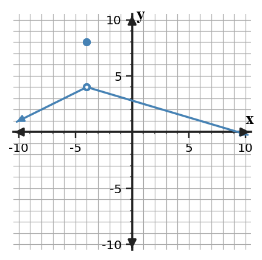
Graph of f.
x
-4.1
-4.01
-3.99
-3.9
f(x)
3.9
3.99
4.01
4.1
The symbolic description says the left-hand limit is 4 and the right-hand limit is 4.
Answer / Solution:
All three show a two-sided limit of 4. The plotted function value differs, so the limit exists but continuity fails by the value-equals-limit condition.
U1-FA-D3-04-V2
Section 1.5 | Formative Assessment | N-A | DOK 3
Representation Synthesis for Limits - Version 2. Reconcile the graph, table, and symbolic statement near $x=-3$. If any conclusion about the two-sided limit or continuity is unsupported, identify exactly why.
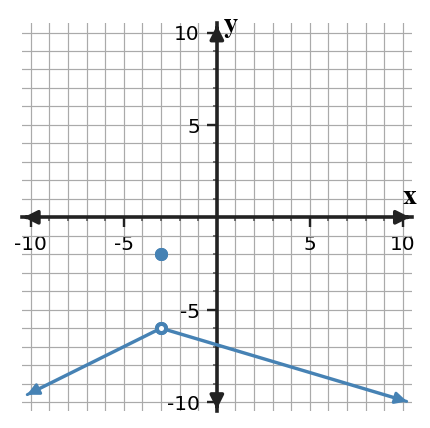
Graph of f.
x
-3.1
-3.01
-2.99
-2.9
f(x)
-6.1
-6.01
-5.99
-5.9
The symbolic description says the left-hand limit is -6 and the right-hand limit is -6.
Answer / Solution:
All three show a two-sided limit of -6. The plotted function value differs, so the limit exists but continuity fails by the value-equals-limit condition.
U1-FA-D3-04-V3
Section 1.5 | Formative Assessment | N-A | DOK 3
Representation Synthesis for Limits - Version 3. Reconcile the graph, table, and symbolic statement near $x=-2$. If any conclusion about the two-sided limit or continuity is unsupported, identify exactly why.
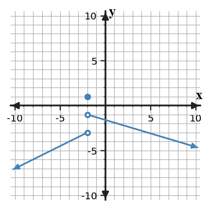
Graph of f.
x
-2.1
-2.01
-1.99
-1.9
f(x)
-3.1
-3.01
-0.99
-0.9
The symbolic description says the left-hand limit is -3 and the right-hand limit is -1.
Answer / Solution:
All three representations show different one-sided limits (-3 and -1), so the two-sided limit is DNE and continuity fails.
U1-FA-D3-04-V4
Section 1.5 | Formative Assessment | N-A | DOK 3
Representation Synthesis for Limits - Version 4. Reconcile the graph, table, and symbolic statement near $x=-1$. If any conclusion about the two-sided limit or continuity is unsupported, identify exactly why.
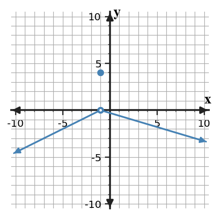
Graph of f.
x
-1.1
-1.01
-0.99
-0.9
f(x)
-0.1
-0.01
0.01
0.1
The symbolic description says the left-hand limit is 0 and the right-hand limit is 0.
Answer / Solution:
All three show a two-sided limit of 0. The plotted function value differs, so the limit exists but continuity fails by the value-equals-limit condition.
U1-FA-D3-04-V5
Section 1.5 | Formative Assessment | N-A | DOK 3
Representation Synthesis for Limits - Version 5. Reconcile the graph, table, and symbolic statement near $x=0$. If any conclusion about the two-sided limit or continuity is unsupported, identify exactly why.
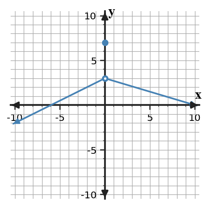
Graph of f.
x
-0.1
-0.01
0.01
0.1
f(x)
2.9
2.99
3.01
3.1
The symbolic description says the left-hand limit is 3 and the right-hand limit is 3.
Answer / Solution:
All three show a two-sided limit of 3. The plotted function value differs, so the limit exists but continuity fails by the value-equals-limit condition.
U1-FA-D3-04-V6
Section 1.5 | Formative Assessment | N-A | DOK 3
Representation Synthesis for Limits - Version 6. Reconcile the graph, table, and symbolic statement near $x=1$. If any conclusion about the two-sided limit or continuity is unsupported, identify exactly why.
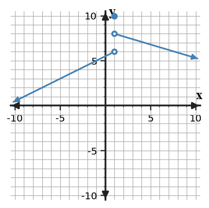
Graph of f.
x
0.9
0.99
1.01
1.1
f(x)
5.9
5.99
8.01
8.1
The symbolic description says the left-hand limit is 6 and the right-hand limit is 8.
Answer / Solution:
All three representations show different one-sided limits (6 and 8), so the two-sided limit is DNE and continuity fails.
U1-FA-D3-04-V7
Section 1.5 | Formative Assessment | N-A | DOK 3
Representation Synthesis for Limits - Version 7. Reconcile the graph, table, and symbolic statement near $x=2$. If any conclusion about the two-sided limit or continuity is unsupported, identify exactly why.
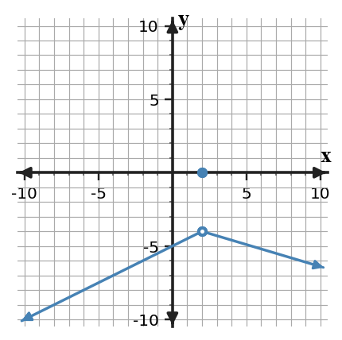
Graph of f.
x
1.9
1.99
2.01
2.1
f(x)
-4.1
-4.01
-3.99
-3.9
The symbolic description says the left-hand limit is -4 and the right-hand limit is -4.
Answer / Solution:
All three show a two-sided limit of -4. The plotted function value differs, so the limit exists but continuity fails by the value-equals-limit condition.
U1-FA-D3-04-V8
Section 1.5 | Formative Assessment | N-A | DOK 3
Representation Synthesis for Limits - Version 8. Reconcile the graph, table, and symbolic statement near $x=3$. If any conclusion about the two-sided limit or continuity is unsupported, identify exactly why.
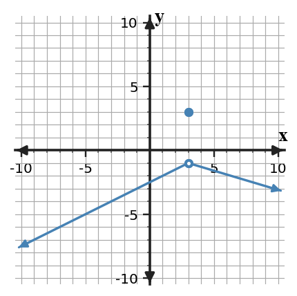
Graph of f.
x
2.9
2.99
3.01
3.1
f(x)
-1.1
-1.01
-0.99
-0.9
The symbolic description says the left-hand limit is -1 and the right-hand limit is -1.
Answer / Solution:
All three show a two-sided limit of -1. The plotted function value differs, so the limit exists but continuity fails by the value-equals-limit condition.
U1-FA-D4-03-V1
Section 1.5 | Formative Assessment | Performance | DOK 4
Asymptotic Behavior Design Task - Version 1. Design a rational function whose vertical asymptote is $x=-4$ and horizontal asymptote is $y=-1$. Add the constraint that $f(0)\ne0$. Provide a formula, justify both asymptotes using limits, test at two large positive/negative inputs and two inputs near the vertical asymptote, and revise the model if any constraint is not met.
Answer / Solution:
One possible family is $f(x)=-1+\frac{2}{x--4}$, provided the stated x=0 constraint is checked. Full credit requires a valid model, limit justifications, numerical tests, and evidence-based revision. Scoring: model 2, limits 2, tests 1, revision 1.
U1-FA-D4-03-V2
Section 1.5 | Formative Assessment | Performance | DOK 4
Asymptotic Behavior Design Task - Version 2. Design a rational function whose vertical asymptote is $x=-3$ and horizontal asymptote is $y=0$. Add the constraint that $f(0)\ne0$. Provide a formula, justify both asymptotes using limits, test at two large positive/negative inputs and two inputs near the vertical asymptote, and revise the model if any constraint is not met.
Answer / Solution:
One possible family is $f(x)=0+\frac{2}{x--3}$, provided the stated x=0 constraint is checked. Full credit requires a valid model, limit justifications, numerical tests, and evidence-based revision. Scoring: model 2, limits 2, tests 1, revision 1.
U1-FA-D4-03-V3
Section 1.5 | Formative Assessment | Performance | DOK 4
Asymptotic Behavior Design Task - Version 3. Design a rational function whose vertical asymptote is $x=-2$ and horizontal asymptote is $y=1$. Add the constraint that $f(0)\ne0$. Provide a formula, justify both asymptotes using limits, test at two large positive/negative inputs and two inputs near the vertical asymptote, and revise the model if any constraint is not met.
Answer / Solution:
One possible family is $f(x)=1+\frac{2}{x--2}$, provided the stated x=0 constraint is checked. Full credit requires a valid model, limit justifications, numerical tests, and evidence-based revision. Scoring: model 2, limits 2, tests 1, revision 1.
U1-FA-D4-03-V4
Section 1.5 | Formative Assessment | Performance | DOK 4
Asymptotic Behavior Design Task - Version 4. Design a rational function whose vertical asymptote is $x=-1$ and horizontal asymptote is $y=2$. Add the constraint that $f(0)\ne0$. Provide a formula, justify both asymptotes using limits, test at two large positive/negative inputs and two inputs near the vertical asymptote, and revise the model if any constraint is not met.
Answer / Solution:
One possible family is $f(x)=2+\frac{2}{x--1}$, provided the stated x=0 constraint is checked. Full credit requires a valid model, limit justifications, numerical tests, and evidence-based revision. Scoring: model 2, limits 2, tests 1, revision 1.
U1-FA-D4-03-V5
Section 1.5 | Formative Assessment | Performance | DOK 4
Asymptotic Behavior Design Task - Version 5. Design a rational function whose vertical asymptote is $x=0$ and horizontal asymptote is $y=-2$. Add the constraint that $f(0)\ne0$. Provide a formula, justify both asymptotes using limits, test at two large positive/negative inputs and two inputs near the vertical asymptote, and revise the model if any constraint is not met.
Answer / Solution:
One possible family is $f(x)=-2+\frac{2}{x-0}$, provided the stated x=0 constraint is checked. Full credit requires a valid model, limit justifications, numerical tests, and evidence-based revision. Scoring: model 2, limits 2, tests 1, revision 1.
U1-FA-D4-03-V6
Section 1.5 | Formative Assessment | Performance | DOK 4
Asymptotic Behavior Design Task - Version 6. Design a rational function whose vertical asymptote is $x=1$ and horizontal asymptote is $y=-1$. Add the constraint that $f(0)\ne0$. Provide a formula, justify both asymptotes using limits, test at two large positive/negative inputs and two inputs near the vertical asymptote, and revise the model if any constraint is not met.
Answer / Solution:
One possible family is $f(x)=-1+\frac{2}{x-1}$, provided the stated x=0 constraint is checked. Full credit requires a valid model, limit justifications, numerical tests, and evidence-based revision. Scoring: model 2, limits 2, tests 1, revision 1.
U1-FA-D4-03-V7
Section 1.5 | Formative Assessment | Performance | DOK 4
Asymptotic Behavior Design Task - Version 7. Design a rational function whose vertical asymptote is $x=2$ and horizontal asymptote is $y=0$. Add the constraint that $f(0)\ne0$. Provide a formula, justify both asymptotes using limits, test at two large positive/negative inputs and two inputs near the vertical asymptote, and revise the model if any constraint is not met.
Answer / Solution:
One possible family is $f(x)=0+\frac{2}{x-2}$, provided the stated x=0 constraint is checked. Full credit requires a valid model, limit justifications, numerical tests, and evidence-based revision. Scoring: model 2, limits 2, tests 1, revision 1.
U1-FA-D4-03-V8
Section 1.5 | Formative Assessment | Performance | DOK 4
Asymptotic Behavior Design Task - Version 8. Design a rational function whose vertical asymptote is $x=3$ and horizontal asymptote is $y=1$. Add the constraint that $f(0)\ne0$. Provide a formula, justify both asymptotes using limits, test at two large positive/negative inputs and two inputs near the vertical asymptote, and revise the model if any constraint is not met.
Answer / Solution:
One possible family is $f(x)=1+\frac{2}{x-3}$, provided the stated x=0 constraint is checked. Full credit requires a valid model, limit justifications, numerical tests, and evidence-based revision. Scoring: model 2, limits 2, tests 1, revision 1.
U1-FA-D4-04-V1
Section 1.5 | Formative Assessment | Performance | DOK 4
Theorem Decision Performance - Version 1. Analyze four IVT claims and revise the unsupported ones. A: f is continuous on [0,4], f(0)=-3, f(4)=6, target 2. B: the same endpoint values, but f has a jump at x=2. C: f is continuous on [0,4], f(0)=4, f(4)=8, target 1. D: f is continuous on [0,4], f(0)=1, f(4)=6, and the claim requires c in (0,4) with f(c)=1. For each, give a decision, cite the relevant IVT condition, and write a corrected statement when the guarantee fails.
Answer / Solution:
A: guaranteed. B: not guaranteed because continuity fails. C: not guaranteed because the target is outside the endpoint-value interval. D: no interior guarantee follows from IVT because the target is already an endpoint value; additional information is needed. Scoring: four decisions 4, condition-based reasoning/revisions 4.
U1-FA-D4-04-V2
Section 1.5 | Formative Assessment | Performance | DOK 4
Theorem Decision Performance - Version 2. Analyze four IVT claims and revise the unsupported ones. A: f is continuous on [0,4], f(0)=-4, f(4)=7, target 1. B: the same endpoint values, but f has a jump at x=2. C: f is continuous on [0,4], f(0)=4, f(4)=8, target 1. D: f is continuous on [0,4], f(0)=1, f(4)=6, and the claim requires c in (0,4) with f(c)=1. For each, give a decision, cite the relevant IVT condition, and write a corrected statement when the guarantee fails.
Answer / Solution:
A: guaranteed. B: not guaranteed because continuity fails. C: not guaranteed because the target is outside the endpoint-value interval. D: no interior guarantee follows from IVT because the target is already an endpoint value; additional information is needed. Scoring: four decisions 4, condition-based reasoning/revisions 4.
U1-FA-D4-04-V3
Section 1.5 | Formative Assessment | Performance | DOK 4
Theorem Decision Performance - Version 3. Analyze four IVT claims and revise the unsupported ones. A: f is continuous on [0,4], f(0)=-5, f(4)=8, target 2. B: the same endpoint values, but f has a jump at x=2. C: f is continuous on [0,4], f(0)=4, f(4)=8, target 1. D: f is continuous on [0,4], f(0)=1, f(4)=6, and the claim requires c in (0,4) with f(c)=1. For each, give a decision, cite the relevant IVT condition, and write a corrected statement when the guarantee fails.
Answer / Solution:
A: guaranteed. B: not guaranteed because continuity fails. C: not guaranteed because the target is outside the endpoint-value interval. D: no interior guarantee follows from IVT because the target is already an endpoint value; additional information is needed. Scoring: four decisions 4, condition-based reasoning/revisions 4.
U1-FA-D4-04-V4
Section 1.5 | Formative Assessment | Performance | DOK 4
Theorem Decision Performance - Version 4. Analyze four IVT claims and revise the unsupported ones. A: f is continuous on [0,4], f(0)=-6, f(4)=9, target 1. B: the same endpoint values, but f has a jump at x=2. C: f is continuous on [0,4], f(0)=4, f(4)=8, target 1. D: f is continuous on [0,4], f(0)=1, f(4)=6, and the claim requires c in (0,4) with f(c)=1. For each, give a decision, cite the relevant IVT condition, and write a corrected statement when the guarantee fails.
Answer / Solution:
A: guaranteed. B: not guaranteed because continuity fails. C: not guaranteed because the target is outside the endpoint-value interval. D: no interior guarantee follows from IVT because the target is already an endpoint value; additional information is needed. Scoring: four decisions 4, condition-based reasoning/revisions 4.
U1-FA-D4-04-V5
Section 1.5 | Formative Assessment | Performance | DOK 4
Theorem Decision Performance - Version 5. Analyze four IVT claims and revise the unsupported ones. A: f is continuous on [0,4], f(0)=-7, f(4)=10, target 2. B: the same endpoint values, but f has a jump at x=2. C: f is continuous on [0,4], f(0)=4, f(4)=8, target 1. D: f is continuous on [0,4], f(0)=1, f(4)=6, and the claim requires c in (0,4) with f(c)=1. For each, give a decision, cite the relevant IVT condition, and write a corrected statement when the guarantee fails.
Answer / Solution:
A: guaranteed. B: not guaranteed because continuity fails. C: not guaranteed because the target is outside the endpoint-value interval. D: no interior guarantee follows from IVT because the target is already an endpoint value; additional information is needed. Scoring: four decisions 4, condition-based reasoning/revisions 4.
U1-FA-D4-04-V6
Section 1.5 | Formative Assessment | Performance | DOK 4
Theorem Decision Performance - Version 6. Analyze four IVT claims and revise the unsupported ones. A: f is continuous on [0,4], f(0)=-8, f(4)=11, target 1. B: the same endpoint values, but f has a jump at x=2. C: f is continuous on [0,4], f(0)=4, f(4)=8, target 1. D: f is continuous on [0,4], f(0)=1, f(4)=6, and the claim requires c in (0,4) with f(c)=1. For each, give a decision, cite the relevant IVT condition, and write a corrected statement when the guarantee fails.
Answer / Solution:
A: guaranteed. B: not guaranteed because continuity fails. C: not guaranteed because the target is outside the endpoint-value interval. D: no interior guarantee follows from IVT because the target is already an endpoint value; additional information is needed. Scoring: four decisions 4, condition-based reasoning/revisions 4.
U1-FA-D4-04-V7
Section 1.5 | Formative Assessment | Performance | DOK 4
Theorem Decision Performance - Version 7. Analyze four IVT claims and revise the unsupported ones. A: f is continuous on [0,4], f(0)=-9, f(4)=12, target 2. B: the same endpoint values, but f has a jump at x=2. C: f is continuous on [0,4], f(0)=4, f(4)=8, target 1. D: f is continuous on [0,4], f(0)=1, f(4)=6, and the claim requires c in (0,4) with f(c)=1. For each, give a decision, cite the relevant IVT condition, and write a corrected statement when the guarantee fails.
Answer / Solution:
A: guaranteed. B: not guaranteed because continuity fails. C: not guaranteed because the target is outside the endpoint-value interval. D: no interior guarantee follows from IVT because the target is already an endpoint value; additional information is needed. Scoring: four decisions 4, condition-based reasoning/revisions 4.
U1-FA-D4-04-V8
Section 1.5 | Formative Assessment | Performance | DOK 4
Theorem Decision Performance - Version 8. Analyze four IVT claims and revise the unsupported ones. A: f is continuous on [0,4], f(0)=-10, f(4)=13, target 1. B: the same endpoint values, but f has a jump at x=2. C: f is continuous on [0,4], f(0)=4, f(4)=8, target 1. D: f is continuous on [0,4], f(0)=1, f(4)=6, and the claim requires c in (0,4) with f(c)=1. For each, give a decision, cite the relevant IVT condition, and write a corrected statement when the guarantee fails.
Answer / Solution:
A: guaranteed. B: not guaranteed because continuity fails. C: not guaranteed because the target is outside the endpoint-value interval. D: no interior guarantee follows from IVT because the target is already an endpoint value; additional information is needed. Scoring: four decisions 4, condition-based reasoning/revisions 4.
Summative Assessment Source Content
Section 1.1 - What Is a Limit?
U1-SUM-V1-Q01
Section 1.1 | Summative Assessment | N-A | DOK 1
Version 1, Question 1. Assessment response: select or record only the requested result. Which statement correctly interprets $\lim_{x\to -4}f(x)=-5$?
The function must satisfy $f(-4)=-5$
As x approaches -4, nearby f(x) values approach -5
The input x approaches -5
The function is undefined at x=-4
Answer / Solution:
B. The limit describes nearby output behavior as x approaches -4.
U1-SUM-V1-Q02
Section 1.1 | Summative Assessment | N-A | DOK 2
Version 1, Question 2. Calculator permitted. Estimate $\lim_{x\to -4}f(x)$ from the table.
x
-4.1
-4.01
-3.99
-3.9
f(x)
-3.1
-3.01
-2.99
-2.9
Show or state the key step, representation, or theorem condition supporting the result.
Answer / Solution:
$-3$
U1-SUM-V2-Q01
Section 1.1 | Summative Assessment | N-A | DOK 1
Version 2, Question 1. Assessment response: select or record only the requested result. Which statement correctly interprets $\lim_{x\to -3}f(x)=-3$?
The function must satisfy $f(-3)=-3$
As x approaches -3, nearby f(x) values approach -3
The input x approaches -3
The function is undefined at x=-3
Answer / Solution:
B. The limit describes nearby output behavior as x approaches -3.
U1-SUM-V2-Q02
Section 1.1 | Summative Assessment | N-A | DOK 2
Version 2, Question 2. Calculator permitted. Estimate $\lim_{x\to -3}f(x)$ from the table.
x
-3.1
-3.01
-2.99
-2.9
f(x)
-2.1
-2.01
-1.99
-1.9
Show or state the key step, representation, or theorem condition supporting the result.
Answer / Solution:
$-2$
U1-SUM-V3-Q01
Section 1.1 | Summative Assessment | N-A | DOK 1
Version 3, Question 1. Assessment response: select or record only the requested result. Which statement correctly interprets $\lim_{x\to -2}f(x)=-1$?
The function must satisfy $f(-2)=-1$
As x approaches -2, nearby f(x) values approach -1
The input x approaches -1
The function is undefined at x=-2
Answer / Solution:
B. The limit describes nearby output behavior as x approaches -2.
U1-SUM-V3-Q02
Section 1.1 | Summative Assessment | N-A | DOK 2
Version 3, Question 2. Calculator permitted. Estimate $\lim_{x\to -2}f(x)$ from the table.
x
-2.1
-2.01
-1.99
-1.9
f(x)
-1.1
-1.01
-0.99
-0.9
Show or state the key step, representation, or theorem condition supporting the result.
Answer / Solution:
$-1$
U1-SUM-V4-Q01
Section 1.1 | Summative Assessment | N-A | DOK 1
Version 4, Question 1. Assessment response: select or record only the requested result. Which statement correctly interprets $\lim_{x\to -1}f(x)=1$?
The function must satisfy $f(-1)=1$
As x approaches -1, nearby f(x) values approach 1
The input x approaches 1
The function is undefined at x=-1
Answer / Solution:
B. The limit describes nearby output behavior as x approaches -1.
U1-SUM-V4-Q02
Section 1.1 | Summative Assessment | N-A | DOK 2
Version 4, Question 2. Calculator permitted. Estimate $\lim_{x\to -1}f(x)$ from the table.
x
-1.1
-1.01
-0.99
-0.9
f(x)
-0.1
-0.01
0.01
0.1
Show or state the key step, representation, or theorem condition supporting the result.
Answer / Solution:
$0$
U1-SUM-V5-Q01
Section 1.1 | Summative Assessment | N-A | DOK 1
Version 5, Question 1. Assessment response: select or record only the requested result. Which statement correctly interprets $\lim_{x\to 0}f(x)=3$?
The function must satisfy $f(0)=3$
As x approaches 0, nearby f(x) values approach 3
The input x approaches 3
The function is undefined at x=0
Answer / Solution:
B. The limit describes nearby output behavior as x approaches 0.
U1-SUM-V5-Q02
Section 1.1 | Summative Assessment | N-A | DOK 2
Version 5, Question 2. Calculator permitted. Estimate $\lim_{x\to 0}f(x)$ from the table.
x
-0.1
-0.01
0.01
0.1
f(x)
0.9
0.99
1.01
1.1
Show or state the key step, representation, or theorem condition supporting the result.
Answer / Solution:
$1$
U1-SUM-V6-Q01
Section 1.1 | Summative Assessment | N-A | DOK 1
Version 6, Question 1. Assessment response: select or record only the requested result. Which statement correctly interprets $\lim_{x\to 1}f(x)=5$?
The function must satisfy $f(1)=5$
As x approaches 1, nearby f(x) values approach 5
The input x approaches 5
The function is undefined at x=1
Answer / Solution:
B. The limit describes nearby output behavior as x approaches 1.
U1-SUM-V6-Q02
Section 1.1 | Summative Assessment | N-A | DOK 2
Version 6, Question 2. Calculator permitted. Estimate $\lim_{x\to 1}f(x)$ from the table.
x
0.9
0.99
1.01
1.1
f(x)
1.9
1.99
2.01
2.1
Show or state the key step, representation, or theorem condition supporting the result.
Answer / Solution:
$2$
U1-SUM-V7-Q01
Section 1.1 | Summative Assessment | N-A | DOK 1
Version 7, Question 1. Assessment response: select or record only the requested result. Which statement correctly interprets $\lim_{x\to 2}f(x)=7$?
The function must satisfy $f(2)=7$
As x approaches 2, nearby f(x) values approach 7
The input x approaches 7
The function is undefined at x=2
Answer / Solution:
B. The limit describes nearby output behavior as x approaches 2.
U1-SUM-V7-Q02
Section 1.1 | Summative Assessment | N-A | DOK 2
Version 7, Question 2. Calculator permitted. Estimate $\lim_{x\to 2}f(x)$ from the table.
x
1.9
1.99
2.01
2.1
f(x)
2.9
2.99
3.01
3.1
Show or state the key step, representation, or theorem condition supporting the result.
Answer / Solution:
$3$
U1-SUM-V8-Q01
Section 1.1 | Summative Assessment | N-A | DOK 1
Version 8, Question 1. Assessment response: select or record only the requested result. Which statement correctly interprets $\lim_{x\to 3}f(x)=9$?
The function must satisfy $f(3)=9$
As x approaches 3, nearby f(x) values approach 9
The input x approaches 9
The function is undefined at x=3
Answer / Solution:
B. The limit describes nearby output behavior as x approaches 3.
U1-SUM-V8-Q02
Section 1.1 | Summative Assessment | N-A | DOK 2
Version 8, Question 2. Calculator permitted. Estimate $\lim_{x\to 3}f(x)$ from the table.
x
2.9
2.99
3.01
3.1
f(x)
3.9
3.99
4.01
4.1
Show or state the key step, representation, or theorem condition supporting the result.
Answer / Solution:
$4$
Section 1.2 - Limits from Graphs and Tables
U1-SUM-V1-Q03
Section 1.2 | Summative Assessment | N-A | DOK 2
Version 1, Question 3. Use the graph to determine the left-hand limit, right-hand limit, and two-sided limit at $x=-4$ if it exists.
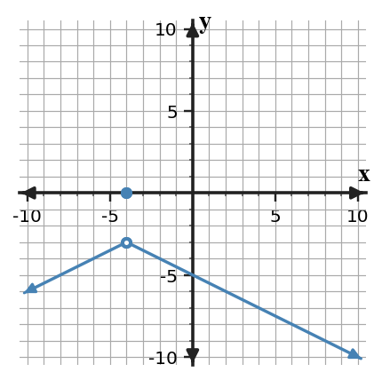
Graph of f. Show or state the key step, representation, or theorem condition supporting the result.
Answer / Solution:
Left -3; right -3; two-sided -3.
U1-SUM-V1-Q04
Section 1.2 | Summative Assessment | N-A | DOK 1
Version 1, Question 4. Assessment response: select or record only the requested result. Suppose $f(-4)=1$ and $\lim_{x\to -4}f(x)=-3$. Which conclusion is valid?
The limit must equal the function value.
The limit is -3 even though f(-4) is different.
The limit is DNE solely because the values differ.
The function must have a vertical asymptote.
Answer / Solution:
B. A finite limit can differ from the function value.
U1-SUM-V2-Q03
Section 1.2 | Summative Assessment | N-A | DOK 2
Version 2, Question 3. Use the graph to determine the left-hand limit, right-hand limit, and two-sided limit at $x=-3$ if it exists.
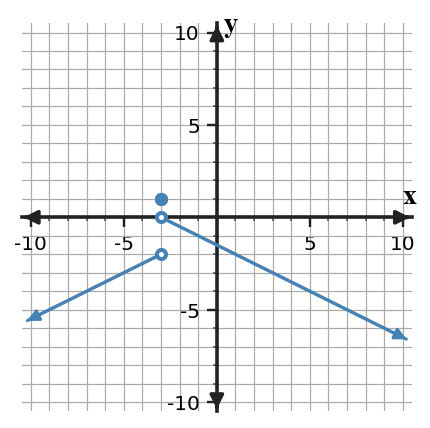
Graph of f. Show or state the key step, representation, or theorem condition supporting the result.
Answer / Solution:
Left -2; right 0; two-sided DNE because the one-sided limits differ.
U1-SUM-V2-Q04
Section 1.2 | Summative Assessment | N-A | DOK 1
Version 2, Question 4. Assessment response: select or record only the requested result. Suppose $f(-3)=2$ and $\lim_{x\to -3}f(x)=-2$. Which conclusion is valid?
The limit must equal the function value.
The limit is -2 even though f(-3) is different.
The limit is DNE solely because the values differ.
The function must have a vertical asymptote.
Answer / Solution:
B. A finite limit can differ from the function value.
U1-SUM-V3-Q03
Section 1.2 | Summative Assessment | N-A | DOK 2
Version 3, Question 3. Use the graph to determine the left-hand limit, right-hand limit, and two-sided limit at $x=-2$ if it exists.
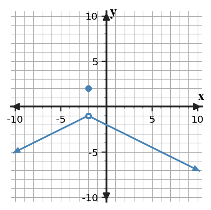
Graph of f. Show or state the key step, representation, or theorem condition supporting the result.
Answer / Solution:
Left -1; right -1; two-sided -1.
U1-SUM-V3-Q04
Section 1.2 | Summative Assessment | N-A | DOK 1
Version 3, Question 4. Assessment response: select or record only the requested result. Suppose $f(-2)=3$ and $\lim_{x\to -2}f(x)=-1$. Which conclusion is valid?
The limit must equal the function value.
The limit is -1 even though f(-2) is different.
The limit is DNE solely because the values differ.
The function must have a vertical asymptote.
Answer / Solution:
B. A finite limit can differ from the function value.
U1-SUM-V4-Q03
Section 1.2 | Summative Assessment | N-A | DOK 2
Version 4, Question 3. Use the graph to determine the left-hand limit, right-hand limit, and two-sided limit at $x=-1$ if it exists.
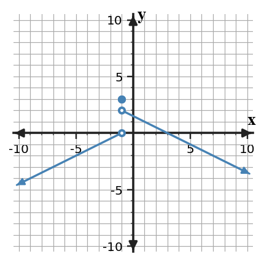
Graph of f. Show or state the key step, representation, or theorem condition supporting the result.
Answer / Solution:
Left 0; right 2; two-sided DNE because the one-sided limits differ.
U1-SUM-V4-Q04
Section 1.2 | Summative Assessment | N-A | DOK 1
Version 4, Question 4. Assessment response: select or record only the requested result. Suppose $f(-1)=4$ and $\lim_{x\to -1}f(x)=0$. Which conclusion is valid?
The limit must equal the function value.
The limit is 0 even though f(-1) is different.
The limit is DNE solely because the values differ.
The function must have a vertical asymptote.
Answer / Solution:
B. A finite limit can differ from the function value.
U1-SUM-V5-Q03
Section 1.2 | Summative Assessment | N-A | DOK 2
Version 5, Question 3. Use the graph to determine the left-hand limit, right-hand limit, and two-sided limit at $x=0$ if it exists.
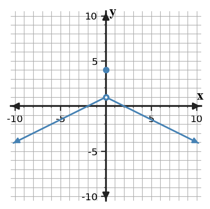
Graph of f. Show or state the key step, representation, or theorem condition supporting the result.
Answer / Solution:
Left 1; right 1; two-sided 1.
U1-SUM-V5-Q04
Section 1.2 | Summative Assessment | N-A | DOK 1
Version 5, Question 4. Assessment response: select or record only the requested result. Suppose $f(0)=5$ and $\lim_{x\to 0}f(x)=1$. Which conclusion is valid?
The limit must equal the function value.
The limit is 1 even though f(0) is different.
The limit is DNE solely because the values differ.
The function must have a vertical asymptote.
Answer / Solution:
B. A finite limit can differ from the function value.
U1-SUM-V6-Q03
Section 1.2 | Summative Assessment | N-A | DOK 2
Version 6, Question 3. Use the graph to determine the left-hand limit, right-hand limit, and two-sided limit at $x=1$ if it exists.
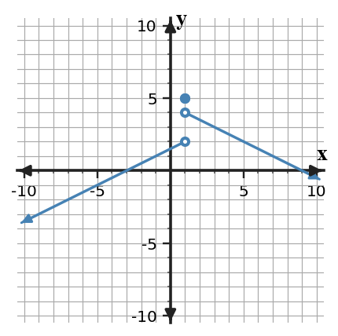
Graph of f. Show or state the key step, representation, or theorem condition supporting the result.
Answer / Solution:
Left 2; right 4; two-sided DNE because the one-sided limits differ.
U1-SUM-V6-Q04
Section 1.2 | Summative Assessment | N-A | DOK 1
Version 6, Question 4. Assessment response: select or record only the requested result. Suppose $f(1)=6$ and $\lim_{x\to 1}f(x)=2$. Which conclusion is valid?
The limit must equal the function value.
The limit is 2 even though f(1) is different.
The limit is DNE solely because the values differ.
The function must have a vertical asymptote.
Answer / Solution:
B. A finite limit can differ from the function value.
U1-SUM-V7-Q03
Section 1.2 | Summative Assessment | N-A | DOK 2
Version 7, Question 3. Use the graph to determine the left-hand limit, right-hand limit, and two-sided limit at $x=2$ if it exists.
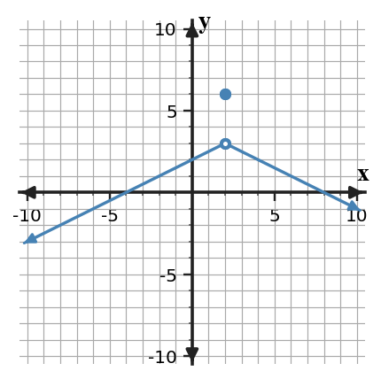
Graph of f. Show or state the key step, representation, or theorem condition supporting the result.
Answer / Solution:
Left 3; right 3; two-sided 3.
U1-SUM-V7-Q04
Section 1.2 | Summative Assessment | N-A | DOK 1
Version 7, Question 4. Assessment response: select or record only the requested result. Suppose $f(2)=7$ and $\lim_{x\to 2}f(x)=3$. Which conclusion is valid?
The limit must equal the function value.
The limit is 3 even though f(2) is different.
The limit is DNE solely because the values differ.
The function must have a vertical asymptote.
Answer / Solution:
B. A finite limit can differ from the function value.
U1-SUM-V8-Q03
Section 1.2 | Summative Assessment | N-A | DOK 2
Version 8, Question 3. Use the graph to determine the left-hand limit, right-hand limit, and two-sided limit at $x=3$ if it exists.
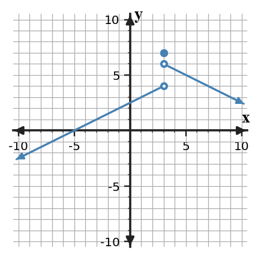
Graph of f. Show or state the key step, representation, or theorem condition supporting the result.
Answer / Solution:
Left 4; right 6; two-sided DNE because the one-sided limits differ.
U1-SUM-V8-Q04
Section 1.2 | Summative Assessment | N-A | DOK 1
Version 8, Question 4. Assessment response: select or record only the requested result. Suppose $f(3)=8$ and $\lim_{x\to 3}f(x)=4$. Which conclusion is valid?
The limit must equal the function value.
The limit is 4 even though f(3) is different.
The limit is DNE solely because the values differ.
The function must have a vertical asymptote.
Answer / Solution:
B. A finite limit can differ from the function value.
Section 1.3 - Algebraic Limits
U1-SUM-V1-Q05
Section 1.3 | Summative Assessment | N-A | DOK 1
Version 1, Question 5. Assessment response: select or record only the requested result. No calculator. Evaluate $\lim_{x\to -3}(3x^2-2x+1)$.
Answer / Solution:
$34$
U1-SUM-V1-Q06
Section 1.3 | Summative Assessment | N-A | DOK 2
Version 1, Question 6. No calculator. Evaluate $\lim_{x\to 2}\frac{x^2-4}{x-2}$. Show or state the key step, representation, or theorem condition supporting the result.
Answer / Solution:
Factor to $x+2$ for nearby x, so the limit is $4$.
U1-SUM-V1-Q07
Section 1.3 | Summative Assessment | N-A | DOK 2
Version 1, Question 7. No calculator. Evaluate $\lim_{x\to 4}\frac{\sqrt{x}-2}{x-4}$. Show or state the key step, representation, or theorem condition supporting the result.
Answer / Solution:
Rationalize; the expression becomes $\frac{1}{\sqrt{x}+2}$, so the limit is $\frac{1}{4}$.
U1-SUM-V1-Q08
Section 1.3 | Summative Assessment | N-A | DOK 2
Version 1, Question 8. No calculator. Evaluate $\lim_{x\to0}\frac{\sin(2x)}{x}$. Show or state the key step, representation, or theorem condition supporting the result.
Answer / Solution:
$2$
U1-SUM-V1-Q09
Section 1.3 | Summative Assessment | N-A | DOK 1
Version 1, Question 9. Assessment response: select or record only the requested result. For $\lim_{x\to 2}\frac{x^2-4}{x-2}$, which first step is most efficient?
Stop after direct substitution gives 0/0
Factor the numerator
Multiply by a conjugate
Apply IVT
Answer / Solution:
B. Factoring creates a cancelable common factor.
U1-SUM-V2-Q05
Section 1.3 | Summative Assessment | N-A | DOK 1
Version 2, Question 5. Assessment response: select or record only the requested result. No calculator. Evaluate $\lim_{x\to -2}(4x^2-2x+1)$.
Answer / Solution:
$21$
U1-SUM-V2-Q06
Section 1.3 | Summative Assessment | N-A | DOK 2
Version 2, Question 6. No calculator. Evaluate $\lim_{x\to 3}\frac{x^2-9}{x-3}$. Show or state the key step, representation, or theorem condition supporting the result.
Answer / Solution:
Factor to $x+3$ for nearby x, so the limit is $6$.
U1-SUM-V2-Q07
Section 1.3 | Summative Assessment | N-A | DOK 2
Version 2, Question 7. No calculator. Evaluate $\lim_{x\to 9}\frac{\sqrt{x}-3}{x-9}$. Show or state the key step, representation, or theorem condition supporting the result.
Answer / Solution:
Rationalize; the expression becomes $\frac{1}{\sqrt{x}+3}$, so the limit is $\frac{1}{6}$.
U1-SUM-V2-Q08
Section 1.3 | Summative Assessment | N-A | DOK 2
Version 2, Question 8. No calculator. Evaluate $\lim_{x\to0}\frac{\sin(3x)}{x}$. Show or state the key step, representation, or theorem condition supporting the result.
Answer / Solution:
$3$
U1-SUM-V2-Q09
Section 1.3 | Summative Assessment | N-A | DOK 1
Version 2, Question 9. Assessment response: select or record only the requested result. For $\lim_{x\to 3}\frac{x^2-9}{x-3}$, which first step is most efficient?
Stop after direct substitution gives 0/0
Factor the numerator
Multiply by a conjugate
Apply IVT
Answer / Solution:
B. Factoring creates a cancelable common factor.
U1-SUM-V3-Q05
Section 1.3 | Summative Assessment | N-A | DOK 1
Version 3, Question 5. Assessment response: select or record only the requested result. No calculator. Evaluate $\lim_{x\to -1}(5x^2-2x+1)$.
Answer / Solution:
$8$
U1-SUM-V3-Q06
Section 1.3 | Summative Assessment | N-A | DOK 2
Version 3, Question 6. No calculator. Evaluate $\lim_{x\to 4}\frac{x^2-16}{x-4}$. Show or state the key step, representation, or theorem condition supporting the result.
Answer / Solution:
Factor to $x+4$ for nearby x, so the limit is $8$.
U1-SUM-V3-Q07
Section 1.3 | Summative Assessment | N-A | DOK 2
Version 3, Question 7. No calculator. Evaluate $\lim_{x\to 16}\frac{\sqrt{x}-4}{x-16}$. Show or state the key step, representation, or theorem condition supporting the result.
Answer / Solution:
Rationalize; the expression becomes $\frac{1}{\sqrt{x}+4}$, so the limit is $\frac{1}{8}$.
U1-SUM-V3-Q08
Section 1.3 | Summative Assessment | N-A | DOK 2
Version 3, Question 8. No calculator. Evaluate $\lim_{x\to0}\frac{\sin(4x)}{x}$. Show or state the key step, representation, or theorem condition supporting the result.
Answer / Solution:
$4$
U1-SUM-V3-Q09
Section 1.3 | Summative Assessment | N-A | DOK 1
Version 3, Question 9. Assessment response: select or record only the requested result. For $\lim_{x\to 4}\frac{x^2-16}{x-4}$, which first step is most efficient?
Stop after direct substitution gives 0/0
Factor the numerator
Multiply by a conjugate
Apply IVT
Answer / Solution:
B. Factoring creates a cancelable common factor.
U1-SUM-V4-Q05
Section 1.3 | Summative Assessment | N-A | DOK 1
Version 4, Question 5. Assessment response: select or record only the requested result. No calculator. Evaluate $\lim_{x\to 0}(2x^2-2x+1)$.
Answer / Solution:
$1$
U1-SUM-V4-Q06
Section 1.3 | Summative Assessment | N-A | DOK 2
Version 4, Question 6. No calculator. Evaluate $\lim_{x\to 5}\frac{x^2-25}{x-5}$. Show or state the key step, representation, or theorem condition supporting the result.
Answer / Solution:
Factor to $x+5$ for nearby x, so the limit is $10$.
U1-SUM-V4-Q07
Section 1.3 | Summative Assessment | N-A | DOK 2
Version 4, Question 7. No calculator. Evaluate $\lim_{x\to 25}\frac{\sqrt{x}-5}{x-25}$. Show or state the key step, representation, or theorem condition supporting the result.
Answer / Solution:
Rationalize; the expression becomes $\frac{1}{\sqrt{x}+5}$, so the limit is $\frac{1}{10}$.
U1-SUM-V4-Q08
Section 1.3 | Summative Assessment | N-A | DOK 2
Version 4, Question 8. No calculator. Evaluate $\lim_{x\to0}\frac{\sin(5x)}{x}$. Show or state the key step, representation, or theorem condition supporting the result.
Answer / Solution:
$5$
U1-SUM-V4-Q09
Section 1.3 | Summative Assessment | N-A | DOK 1
Version 4, Question 9. Assessment response: select or record only the requested result. For $\lim_{x\to 5}\frac{x^2-25}{x-5}$, which first step is most efficient?
Stop after direct substitution gives 0/0
Factor the numerator
Multiply by a conjugate
Apply IVT
Answer / Solution:
B. Factoring creates a cancelable common factor.
U1-SUM-V5-Q05
Section 1.3 | Summative Assessment | N-A | DOK 1
Version 5, Question 5. Assessment response: select or record only the requested result. No calculator. Evaluate $\lim_{x\to 1}(3x^2-2x+1)$.
Answer / Solution:
$2$
U1-SUM-V5-Q06
Section 1.3 | Summative Assessment | N-A | DOK 2
Version 5, Question 6. No calculator. Evaluate $\lim_{x\to 6}\frac{x^2-36}{x-6}$. Show or state the key step, representation, or theorem condition supporting the result.
Answer / Solution:
Factor to $x+6$ for nearby x, so the limit is $12$.
U1-SUM-V5-Q07
Section 1.3 | Summative Assessment | N-A | DOK 2
Version 5, Question 7. No calculator. Evaluate $\lim_{x\to 36}\frac{\sqrt{x}-6}{x-36}$. Show or state the key step, representation, or theorem condition supporting the result.
Answer / Solution:
Rationalize; the expression becomes $\frac{1}{\sqrt{x}+6}$, so the limit is $\frac{1}{12}$.
U1-SUM-V5-Q08
Section 1.3 | Summative Assessment | N-A | DOK 2
Version 5, Question 8. No calculator. Evaluate $\lim_{x\to0}\frac{\sin(6x)}{x}$. Show or state the key step, representation, or theorem condition supporting the result.
Answer / Solution:
$6$
U1-SUM-V5-Q09
Section 1.3 | Summative Assessment | N-A | DOK 1
Version 5, Question 9. Assessment response: select or record only the requested result. For $\lim_{x\to 6}\frac{x^2-36}{x-6}$, which first step is most efficient?
Stop after direct substitution gives 0/0
Factor the numerator
Multiply by a conjugate
Apply IVT
Answer / Solution:
B. Factoring creates a cancelable common factor.
U1-SUM-V6-Q05
Section 1.3 | Summative Assessment | N-A | DOK 1
Version 6, Question 5. Assessment response: select or record only the requested result. No calculator. Evaluate $\lim_{x\to 2}(4x^2-2x+1)$.
Answer / Solution:
$13$
U1-SUM-V6-Q06
Section 1.3 | Summative Assessment | N-A | DOK 2
Version 6, Question 6. No calculator. Evaluate $\lim_{x\to 7}\frac{x^2-49}{x-7}$. Show or state the key step, representation, or theorem condition supporting the result.
Answer / Solution:
Factor to $x+7$ for nearby x, so the limit is $14$.
U1-SUM-V6-Q07
Section 1.3 | Summative Assessment | N-A | DOK 2
Version 6, Question 7. No calculator. Evaluate $\lim_{x\to 49}\frac{\sqrt{x}-7}{x-49}$. Show or state the key step, representation, or theorem condition supporting the result.
Answer / Solution:
Rationalize; the expression becomes $\frac{1}{\sqrt{x}+7}$, so the limit is $\frac{1}{14}$.
U1-SUM-V6-Q08
Section 1.3 | Summative Assessment | N-A | DOK 2
Version 6, Question 8. No calculator. Evaluate $\lim_{x\to0}\frac{\sin(7x)}{x}$. Show or state the key step, representation, or theorem condition supporting the result.
Answer / Solution:
$7$
U1-SUM-V6-Q09
Section 1.3 | Summative Assessment | N-A | DOK 1
Version 6, Question 9. Assessment response: select or record only the requested result. For $\lim_{x\to 7}\frac{x^2-49}{x-7}$, which first step is most efficient?
Stop after direct substitution gives 0/0
Factor the numerator
Multiply by a conjugate
Apply IVT
Answer / Solution:
B. Factoring creates a cancelable common factor.
U1-SUM-V7-Q05
Section 1.3 | Summative Assessment | N-A | DOK 1
Version 7, Question 5. Assessment response: select or record only the requested result. No calculator. Evaluate $\lim_{x\to 3}(5x^2-2x+1)$.
Answer / Solution:
$40$
U1-SUM-V7-Q06
Section 1.3 | Summative Assessment | N-A | DOK 2
Version 7, Question 6. No calculator. Evaluate $\lim_{x\to 8}\frac{x^2-64}{x-8}$. Show or state the key step, representation, or theorem condition supporting the result.
Answer / Solution:
Factor to $x+8$ for nearby x, so the limit is $16$.
U1-SUM-V7-Q07
Section 1.3 | Summative Assessment | N-A | DOK 2
Version 7, Question 7. No calculator. Evaluate $\lim_{x\to 64}\frac{\sqrt{x}-8}{x-64}$. Show or state the key step, representation, or theorem condition supporting the result.
Answer / Solution:
Rationalize; the expression becomes $\frac{1}{\sqrt{x}+8}$, so the limit is $\frac{1}{16}$.
U1-SUM-V7-Q08
Section 1.3 | Summative Assessment | N-A | DOK 2
Version 7, Question 8. No calculator. Evaluate $\lim_{x\to0}\frac{\sin(8x)}{x}$. Show or state the key step, representation, or theorem condition supporting the result.
Answer / Solution:
$8$
U1-SUM-V7-Q09
Section 1.3 | Summative Assessment | N-A | DOK 1
Version 7, Question 9. Assessment response: select or record only the requested result. For $\lim_{x\to 8}\frac{x^2-64}{x-8}$, which first step is most efficient?
Stop after direct substitution gives 0/0
Factor the numerator
Multiply by a conjugate
Apply IVT
Answer / Solution:
B. Factoring creates a cancelable common factor.
U1-SUM-V8-Q05
Section 1.3 | Summative Assessment | N-A | DOK 1
Version 8, Question 5. Assessment response: select or record only the requested result. No calculator. Evaluate $\lim_{x\to 4}(2x^2-2x+1)$.
Answer / Solution:
$25$
U1-SUM-V8-Q06
Section 1.3 | Summative Assessment | N-A | DOK 2
Version 8, Question 6. No calculator. Evaluate $\lim_{x\to 9}\frac{x^2-81}{x-9}$. Show or state the key step, representation, or theorem condition supporting the result.
Answer / Solution:
Factor to $x+9$ for nearby x, so the limit is $18$.
U1-SUM-V8-Q07
Section 1.3 | Summative Assessment | N-A | DOK 2
Version 8, Question 7. No calculator. Evaluate $\lim_{x\to 81}\frac{\sqrt{x}-9}{x-81}$. Show or state the key step, representation, or theorem condition supporting the result.
Answer / Solution:
Rationalize; the expression becomes $\frac{1}{\sqrt{x}+9}$, so the limit is $\frac{1}{18}$.
U1-SUM-V8-Q08
Section 1.3 | Summative Assessment | N-A | DOK 2
Version 8, Question 8. No calculator. Evaluate $\lim_{x\to0}\frac{\sin(9x)}{x}$. Show or state the key step, representation, or theorem condition supporting the result.
Answer / Solution:
$9$
U1-SUM-V8-Q09
Section 1.3 | Summative Assessment | N-A | DOK 1
Version 8, Question 9. Assessment response: select or record only the requested result. For $\lim_{x\to 9}\frac{x^2-81}{x-9}$, which first step is most efficient?
Stop after direct substitution gives 0/0
Factor the numerator
Multiply by a conjugate
Apply IVT
Answer / Solution:
B. Factoring creates a cancelable common factor.
Section 1.4 - Continuity and Discontinuity
U1-SUM-V1-Q10
Section 1.4 | Summative Assessment | N-A | DOK 1
Version 1, Question 10. Assessment response: select or record only the requested result. At $x=-4$, $f(-4)=-3$ and $\lim_{x\to -4}f(x)=-3$. Which conclusion follows?
f is continuous at the point
f has a jump
f has a removable discontinuity
No conclusion can be made
Answer / Solution:
A. The function value and finite two-sided limit exist and are equal.
U1-SUM-V1-Q11
Section 1.4 | Summative Assessment | N-A | DOK 2
Version 1, Question 11. Find $k$ so $f(x)=\begin{cases}2x-4,&x\lt -4\k,&x\ge -4\end{cases}$ is continuous at $x=-4$. Show or state the key step, representation, or theorem condition supporting the result.
Answer / Solution:
$k=-12$
U1-SUM-V1-Q12
Section 1.4 | Summative Assessment | N-A | DOK 1
Version 1, Question 12. Assessment response: select or record only the requested result. At $x=-4$, the left-hand limit is -3, the right-hand limit is 0, and f(-4) exists. Classify the discontinuity.
removable
jump
continuous
horizontal asymptote
Answer / Solution:
B. Different finite one-sided limits create a jump discontinuity.
U1-SUM-V1-Q13
Section 1.4 | Summative Assessment | N-A | DOK 2
Version 1, Question 13. A function is continuous on $(-5,-4)$ and $(-4,7)$ and has a removable discontinuity at $x=-4$. State its intervals of continuity. Show or state the key step, representation, or theorem condition supporting the result.
Answer / Solution:
$(-5,-4)\cup(-4,7)$
U1-SUM-V1-Q18
Section 1.4 | Summative Assessment | Unit-Synthesis | DOK 3
Version 1, Question 18. A table approaches -3 from both sides of $x=-4$, but the graph has a filled point at $(-4,1)$ and a hole at $(-4,-3)$. Reconcile the representations: state the limit, the function value, and whether the function is continuous at the point.
x
-4.1
-4.01
-3.99
-3.9
f(x)
-3.1
-3.01
-2.99
-2.9
Support each requested conclusion with explicit limit, continuity, or theorem reasoning.
Answer / Solution:
The limit is -3; f(-4)=1; the function is not continuous because the function value does not equal the limit.
U1-SUM-V1-Q19
Section 1.4 | Summative Assessment | Unit-Synthesis | DOK 3
Version 1, Question 19. No calculator. A function is defined by $g(x)=\frac{x^2-4}{x-2}$ for $x\ne 2$ and $g(2)=k$. (a) Find $\lim_{x\to 2}g(x)$. (b) Find k so g is continuous at $x=2$. (c) Explain why your value of k works. Support each requested conclusion with explicit limit, continuity, or theorem reasoning.
Answer / Solution:
(a) 4. (b) $k=4$. (c) With this value the function value exists and equals the two-sided limit, so the continuity conditions are satisfied.
U1-SUM-V2-Q10
Section 1.4 | Summative Assessment | N-A | DOK 1
Version 2, Question 10. Assessment response: select or record only the requested result. At $x=-3$, $f(-3)=-2$ and $\lim_{x\to -3}f(x)=-2$. Which conclusion follows?
f is continuous at the point
f has a jump
f has a removable discontinuity
No conclusion can be made
Answer / Solution:
A. The function value and finite two-sided limit exist and are equal.
U1-SUM-V2-Q11
Section 1.4 | Summative Assessment | N-A | DOK 2
Version 2, Question 11. Find $k$ so $f(x)=\begin{cases}3x-3,&x\lt -3\k,&x\ge -3\end{cases}$ is continuous at $x=-3$. Show or state the key step, representation, or theorem condition supporting the result.
Answer / Solution:
$k=-12$
U1-SUM-V2-Q12
Section 1.4 | Summative Assessment | N-A | DOK 1
Version 2, Question 12. Assessment response: select or record only the requested result. At $x=-3$, the left-hand limit is -2, the right-hand limit is 1, and f(-3) exists. Classify the discontinuity.
removable
jump
continuous
horizontal asymptote
Answer / Solution:
B. Different finite one-sided limits create a jump discontinuity.
U1-SUM-V2-Q13
Section 1.4 | Summative Assessment | N-A | DOK 2
Version 2, Question 13. A function is continuous on $(-5,-3)$ and $(-3,7)$ and has a removable discontinuity at $x=-3$. State its intervals of continuity. Show or state the key step, representation, or theorem condition supporting the result.
Answer / Solution:
$(-5,-3)\cup(-3,7)$
U1-SUM-V2-Q18
Section 1.4 | Summative Assessment | Unit-Synthesis | DOK 3
Version 2, Question 18. A table approaches -2 from both sides of $x=-3$, but the graph has a filled point at $(-3,2)$ and a hole at $(-3,-2)$. Reconcile the representations: state the limit, the function value, and whether the function is continuous at the point.
x
-3.1
-3.01
-2.99
-2.9
f(x)
-2.1
-2.01
-1.99
-1.9
Support each requested conclusion with explicit limit, continuity, or theorem reasoning.
Answer / Solution:
The limit is -2; f(-3)=2; the function is not continuous because the function value does not equal the limit.
U1-SUM-V2-Q19
Section 1.4 | Summative Assessment | Unit-Synthesis | DOK 3
Version 2, Question 19. No calculator. A function is defined by $g(x)=\frac{x^2-9}{x-3}$ for $x\ne 3$ and $g(3)=k$. (a) Find $\lim_{x\to 3}g(x)$. (b) Find k so g is continuous at $x=3$. (c) Explain why your value of k works. Support each requested conclusion with explicit limit, continuity, or theorem reasoning.
Answer / Solution:
(a) 6. (b) $k=6$. (c) With this value the function value exists and equals the two-sided limit, so the continuity conditions are satisfied.
U1-SUM-V3-Q10
Section 1.4 | Summative Assessment | N-A | DOK 1
Version 3, Question 10. Assessment response: select or record only the requested result. At $x=-2$, $f(-2)=-1$ and $\lim_{x\to -2}f(x)=-1$. Which conclusion follows?
f is continuous at the point
f has a jump
f has a removable discontinuity
No conclusion can be made
Answer / Solution:
A. The function value and finite two-sided limit exist and are equal.
U1-SUM-V3-Q11
Section 1.4 | Summative Assessment | N-A | DOK 2
Version 3, Question 11. Find $k$ so $f(x)=\begin{cases}4x-2,&x\lt -2\k,&x\ge -2\end{cases}$ is continuous at $x=-2$. Show or state the key step, representation, or theorem condition supporting the result.
Answer / Solution:
$k=-10$
U1-SUM-V3-Q12
Section 1.4 | Summative Assessment | N-A | DOK 1
Version 3, Question 12. Assessment response: select or record only the requested result. At $x=-2$, the left-hand limit is -1, the right-hand limit is 2, and f(-2) exists. Classify the discontinuity.
removable
jump
continuous
horizontal asymptote
Answer / Solution:
B. Different finite one-sided limits create a jump discontinuity.
U1-SUM-V3-Q13
Section 1.4 | Summative Assessment | N-A | DOK 2
Version 3, Question 13. A function is continuous on $(-5,-2)$ and $(-2,7)$ and has a removable discontinuity at $x=-2$. State its intervals of continuity. Show or state the key step, representation, or theorem condition supporting the result.
Answer / Solution:
$(-5,-2)\cup(-2,7)$
U1-SUM-V3-Q18
Section 1.4 | Summative Assessment | Unit-Synthesis | DOK 3
Version 3, Question 18. A table approaches -1 from both sides of $x=-2$, but the graph has a filled point at $(-2,3)$ and a hole at $(-2,-1)$. Reconcile the representations: state the limit, the function value, and whether the function is continuous at the point.
x
-2.1
-2.01
-1.99
-1.9
f(x)
-1.1
-1.01
-0.99
-0.9
Support each requested conclusion with explicit limit, continuity, or theorem reasoning.
Answer / Solution:
The limit is -1; f(-2)=3; the function is not continuous because the function value does not equal the limit.
U1-SUM-V3-Q19
Section 1.4 | Summative Assessment | Unit-Synthesis | DOK 3
Version 3, Question 19. No calculator. A function is defined by $g(x)=\frac{x^2-16}{x-4}$ for $x\ne 4$ and $g(4)=k$. (a) Find $\lim_{x\to 4}g(x)$. (b) Find k so g is continuous at $x=4$. (c) Explain why your value of k works. Support each requested conclusion with explicit limit, continuity, or theorem reasoning.
Answer / Solution:
(a) 8. (b) $k=8$. (c) With this value the function value exists and equals the two-sided limit, so the continuity conditions are satisfied.
U1-SUM-V4-Q10
Section 1.4 | Summative Assessment | N-A | DOK 1
Version 4, Question 10. Assessment response: select or record only the requested result. At $x=-1$, $f(-1)=0$ and $\lim_{x\to -1}f(x)=0$. Which conclusion follows?
f is continuous at the point
f has a jump
f has a removable discontinuity
No conclusion can be made
Answer / Solution:
A. The function value and finite two-sided limit exist and are equal.
U1-SUM-V4-Q11
Section 1.4 | Summative Assessment | N-A | DOK 2
Version 4, Question 11. Find $k$ so $f(x)=\begin{cases}1x-1,&x\lt -1\k,&x\ge -1\end{cases}$ is continuous at $x=-1$. Show or state the key step, representation, or theorem condition supporting the result.
Answer / Solution:
$k=-2$
U1-SUM-V4-Q12
Section 1.4 | Summative Assessment | N-A | DOK 1
Version 4, Question 12. Assessment response: select or record only the requested result. At $x=-1$, the left-hand limit is 0, the right-hand limit is 3, and f(-1) exists. Classify the discontinuity.
removable
jump
continuous
horizontal asymptote
Answer / Solution:
B. Different finite one-sided limits create a jump discontinuity.
U1-SUM-V4-Q13
Section 1.4 | Summative Assessment | N-A | DOK 2
Version 4, Question 13. A function is continuous on $(-5,-1)$ and $(-1,7)$ and has a removable discontinuity at $x=-1$. State its intervals of continuity. Show or state the key step, representation, or theorem condition supporting the result.
Answer / Solution:
$(-5,-1)\cup(-1,7)$
U1-SUM-V4-Q18
Section 1.4 | Summative Assessment | Unit-Synthesis | DOK 3
Version 4, Question 18. A table approaches 0 from both sides of $x=-1$, but the graph has a filled point at $(-1,4)$ and a hole at $(-1,0)$. Reconcile the representations: state the limit, the function value, and whether the function is continuous at the point.
x
-1.1
-1.01
-0.99
-0.9
f(x)
-0.1
-0.01
0.01
0.1
Support each requested conclusion with explicit limit, continuity, or theorem reasoning.
Answer / Solution:
The limit is 0; f(-1)=4; the function is not continuous because the function value does not equal the limit.
U1-SUM-V4-Q19
Section 1.4 | Summative Assessment | Unit-Synthesis | DOK 3
Version 4, Question 19. No calculator. A function is defined by $g(x)=\frac{x^2-25}{x-5}$ for $x\ne 5$ and $g(5)=k$. (a) Find $\lim_{x\to 5}g(x)$. (b) Find k so g is continuous at $x=5$. (c) Explain why your value of k works. Support each requested conclusion with explicit limit, continuity, or theorem reasoning.
Answer / Solution:
(a) 10. (b) $k=10$. (c) With this value the function value exists and equals the two-sided limit, so the continuity conditions are satisfied.
U1-SUM-V5-Q10
Section 1.4 | Summative Assessment | N-A | DOK 1
Version 5, Question 10. Assessment response: select or record only the requested result. At $x=0$, $f(0)=1$ and $\lim_{x\to 0}f(x)=1$. Which conclusion follows?
f is continuous at the point
f has a jump
f has a removable discontinuity
No conclusion can be made
Answer / Solution:
A. The function value and finite two-sided limit exist and are equal.
U1-SUM-V5-Q11
Section 1.4 | Summative Assessment | N-A | DOK 2
Version 5, Question 11. Find $k$ so $f(x)=\begin{cases}2x+0,&x\lt 0\k,&x\ge 0\end{cases}$ is continuous at $x=0$. Show or state the key step, representation, or theorem condition supporting the result.
Answer / Solution:
$k=0$
U1-SUM-V5-Q12
Section 1.4 | Summative Assessment | N-A | DOK 1
Version 5, Question 12. Assessment response: select or record only the requested result. At $x=0$, the left-hand limit is 1, the right-hand limit is 4, and f(0) exists. Classify the discontinuity.
removable
jump
continuous
horizontal asymptote
Answer / Solution:
B. Different finite one-sided limits create a jump discontinuity.
U1-SUM-V5-Q13
Section 1.4 | Summative Assessment | N-A | DOK 2
Version 5, Question 13. A function is continuous on $(-5,0)$ and $(0,7)$ and has a removable discontinuity at $x=0$. State its intervals of continuity. Show or state the key step, representation, or theorem condition supporting the result.
Answer / Solution:
$(-5,0)\cup(0,7)$
U1-SUM-V5-Q18
Section 1.4 | Summative Assessment | Unit-Synthesis | DOK 3
Version 5, Question 18. A table approaches 1 from both sides of $x=0$, but the graph has a filled point at $(0,5)$ and a hole at $(0,1)$. Reconcile the representations: state the limit, the function value, and whether the function is continuous at the point.
x
-0.1
-0.01
0.01
0.1
f(x)
0.9
0.99
1.01
1.1
Support each requested conclusion with explicit limit, continuity, or theorem reasoning.
Answer / Solution:
The limit is 1; f(0)=5; the function is not continuous because the function value does not equal the limit.
U1-SUM-V5-Q19
Section 1.4 | Summative Assessment | Unit-Synthesis | DOK 3
Version 5, Question 19. No calculator. A function is defined by $g(x)=\frac{x^2-36}{x-6}$ for $x\ne 6$ and $g(6)=k$. (a) Find $\lim_{x\to 6}g(x)$. (b) Find k so g is continuous at $x=6$. (c) Explain why your value of k works. Support each requested conclusion with explicit limit, continuity, or theorem reasoning.
Answer / Solution:
(a) 12. (b) $k=12$. (c) With this value the function value exists and equals the two-sided limit, so the continuity conditions are satisfied.
U1-SUM-V6-Q10
Section 1.4 | Summative Assessment | N-A | DOK 1
Version 6, Question 10. Assessment response: select or record only the requested result. At $x=1$, $f(1)=2$ and $\lim_{x\to 1}f(x)=2$. Which conclusion follows?
f is continuous at the point
f has a jump
f has a removable discontinuity
No conclusion can be made
Answer / Solution:
A. The function value and finite two-sided limit exist and are equal.
U1-SUM-V6-Q11
Section 1.4 | Summative Assessment | N-A | DOK 2
Version 6, Question 11. Find $k$ so $f(x)=\begin{cases}3x+1,&x\lt 1\k,&x\ge 1\end{cases}$ is continuous at $x=1$. Show or state the key step, representation, or theorem condition supporting the result.
Answer / Solution:
$k=4$
U1-SUM-V6-Q12
Section 1.4 | Summative Assessment | N-A | DOK 1
Version 6, Question 12. Assessment response: select or record only the requested result. At $x=1$, the left-hand limit is 2, the right-hand limit is 5, and f(1) exists. Classify the discontinuity.
removable
jump
continuous
horizontal asymptote
Answer / Solution:
B. Different finite one-sided limits create a jump discontinuity.
U1-SUM-V6-Q13
Section 1.4 | Summative Assessment | N-A | DOK 2
Version 6, Question 13. A function is continuous on $(-5,1)$ and $(1,7)$ and has a removable discontinuity at $x=1$. State its intervals of continuity. Show or state the key step, representation, or theorem condition supporting the result.
Answer / Solution:
$(-5,1)\cup(1,7)$
U1-SUM-V6-Q18
Section 1.4 | Summative Assessment | Unit-Synthesis | DOK 3
Version 6, Question 18. A table approaches 2 from both sides of $x=1$, but the graph has a filled point at $(1,6)$ and a hole at $(1,2)$. Reconcile the representations: state the limit, the function value, and whether the function is continuous at the point.
x
0.9
0.99
1.01
1.1
f(x)
1.9
1.99
2.01
2.1
Support each requested conclusion with explicit limit, continuity, or theorem reasoning.
Answer / Solution:
The limit is 2; f(1)=6; the function is not continuous because the function value does not equal the limit.
U1-SUM-V6-Q19
Section 1.4 | Summative Assessment | Unit-Synthesis | DOK 3
Version 6, Question 19. No calculator. A function is defined by $g(x)=\frac{x^2-49}{x-7}$ for $x\ne 7$ and $g(7)=k$. (a) Find $\lim_{x\to 7}g(x)$. (b) Find k so g is continuous at $x=7$. (c) Explain why your value of k works. Support each requested conclusion with explicit limit, continuity, or theorem reasoning.
Answer / Solution:
(a) 14. (b) $k=14$. (c) With this value the function value exists and equals the two-sided limit, so the continuity conditions are satisfied.
U1-SUM-V7-Q10
Section 1.4 | Summative Assessment | N-A | DOK 1
Version 7, Question 10. Assessment response: select or record only the requested result. At $x=2$, $f(2)=3$ and $\lim_{x\to 2}f(x)=3$. Which conclusion follows?
f is continuous at the point
f has a jump
f has a removable discontinuity
No conclusion can be made
Answer / Solution:
A. The function value and finite two-sided limit exist and are equal.
U1-SUM-V7-Q11
Section 1.4 | Summative Assessment | N-A | DOK 2
Version 7, Question 11. Find $k$ so $f(x)=\begin{cases}4x+2,&x\lt 2\k,&x\ge 2\end{cases}$ is continuous at $x=2$. Show or state the key step, representation, or theorem condition supporting the result.
Answer / Solution:
$k=10$
U1-SUM-V7-Q12
Section 1.4 | Summative Assessment | N-A | DOK 1
Version 7, Question 12. Assessment response: select or record only the requested result. At $x=2$, the left-hand limit is 3, the right-hand limit is 6, and f(2) exists. Classify the discontinuity.
removable
jump
continuous
horizontal asymptote
Answer / Solution:
B. Different finite one-sided limits create a jump discontinuity.
U1-SUM-V7-Q13
Section 1.4 | Summative Assessment | N-A | DOK 2
Version 7, Question 13. A function is continuous on $(-5,2)$ and $(2,7)$ and has a removable discontinuity at $x=2$. State its intervals of continuity. Show or state the key step, representation, or theorem condition supporting the result.
Answer / Solution:
$(-5,2)\cup(2,7)$
U1-SUM-V7-Q18
Section 1.4 | Summative Assessment | Unit-Synthesis | DOK 3
Version 7, Question 18. A table approaches 3 from both sides of $x=2$, but the graph has a filled point at $(2,7)$ and a hole at $(2,3)$. Reconcile the representations: state the limit, the function value, and whether the function is continuous at the point.
x
1.9
1.99
2.01
2.1
f(x)
2.9
2.99
3.01
3.1
Support each requested conclusion with explicit limit, continuity, or theorem reasoning.
Answer / Solution:
The limit is 3; f(2)=7; the function is not continuous because the function value does not equal the limit.
U1-SUM-V7-Q19
Section 1.4 | Summative Assessment | Unit-Synthesis | DOK 3
Version 7, Question 19. No calculator. A function is defined by $g(x)=\frac{x^2-64}{x-8}$ for $x\ne 8$ and $g(8)=k$. (a) Find $\lim_{x\to 8}g(x)$. (b) Find k so g is continuous at $x=8$. (c) Explain why your value of k works. Support each requested conclusion with explicit limit, continuity, or theorem reasoning.
Answer / Solution:
(a) 16. (b) $k=16$. (c) With this value the function value exists and equals the two-sided limit, so the continuity conditions are satisfied.
U1-SUM-V8-Q10
Section 1.4 | Summative Assessment | N-A | DOK 1
Version 8, Question 10. Assessment response: select or record only the requested result. At $x=3$, $f(3)=4$ and $\lim_{x\to 3}f(x)=4$. Which conclusion follows?
f is continuous at the point
f has a jump
f has a removable discontinuity
No conclusion can be made
Answer / Solution:
A. The function value and finite two-sided limit exist and are equal.
U1-SUM-V8-Q11
Section 1.4 | Summative Assessment | N-A | DOK 2
Version 8, Question 11. Find $k$ so $f(x)=\begin{cases}1x+3,&x\lt 3\k,&x\ge 3\end{cases}$ is continuous at $x=3$. Show or state the key step, representation, or theorem condition supporting the result.
Answer / Solution:
$k=6$
U1-SUM-V8-Q12
Section 1.4 | Summative Assessment | N-A | DOK 1
Version 8, Question 12. Assessment response: select or record only the requested result. At $x=3$, the left-hand limit is 4, the right-hand limit is 7, and f(3) exists. Classify the discontinuity.
removable
jump
continuous
horizontal asymptote
Answer / Solution:
B. Different finite one-sided limits create a jump discontinuity.
U1-SUM-V8-Q13
Section 1.4 | Summative Assessment | N-A | DOK 2
Version 8, Question 13. A function is continuous on $(-5,3)$ and $(3,7)$ and has a removable discontinuity at $x=3$. State its intervals of continuity. Show or state the key step, representation, or theorem condition supporting the result.
Answer / Solution:
$(-5,3)\cup(3,7)$
U1-SUM-V8-Q18
Section 1.4 | Summative Assessment | Unit-Synthesis | DOK 3
Version 8, Question 18. A table approaches 4 from both sides of $x=3$, but the graph has a filled point at $(3,8)$ and a hole at $(3,4)$. Reconcile the representations: state the limit, the function value, and whether the function is continuous at the point.
x
2.9
2.99
3.01
3.1
f(x)
3.9
3.99
4.01
4.1
Support each requested conclusion with explicit limit, continuity, or theorem reasoning.
Answer / Solution:
The limit is 4; f(3)=8; the function is not continuous because the function value does not equal the limit.
U1-SUM-V8-Q19
Section 1.4 | Summative Assessment | Unit-Synthesis | DOK 3
Version 8, Question 19. No calculator. A function is defined by $g(x)=\frac{x^2-81}{x-9}$ for $x\ne 9$ and $g(9)=k$. (a) Find $\lim_{x\to 9}g(x)$. (b) Find k so g is continuous at $x=9$. (c) Explain why your value of k works. Support each requested conclusion with explicit limit, continuity, or theorem reasoning.
Answer / Solution:
(a) 18. (b) $k=18$. (c) With this value the function value exists and equals the two-sided limit, so the continuity conditions are satisfied.
Section 1.5 - Asymptotes and IVT
U1-SUM-V1-Q14
Section 1.5 | Summative Assessment | N-A | DOK 1
Version 1, Question 14. Assessment response: select or record only the requested result. For $f(x)=-1+\frac{2}{x--4}$, identify the vertical asymptote.
Answer / Solution:
$x=-4$
U1-SUM-V1-Q15
Section 1.5 | Summative Assessment | N-A | DOK 2
Version 1, Question 15. Determine $\lim_{x\to\infty}(-4+\frac{2}{x})$ and state the corresponding horizontal asymptote. Show or state the key step, representation, or theorem condition supporting the result.
Answer / Solution:
Limit $-4$; horizontal asymptote $y=-4$.
U1-SUM-V1-Q16
Section 1.5 | Summative Assessment | N-A | DOK 2
Version 1, Question 16. A function is continuous on $[0,6]$ with $f(0)=-7$ and $f(6)=6$. Does IVT guarantee a point $c\in(0,6)$ with $f(c)=1$? Show or state the key step, representation, or theorem condition supporting the result.
Answer / Solution:
Yes. Continuity is given and 1 lies between -7 and 6.
U1-SUM-V1-Q17
Section 1.5 | Summative Assessment | Unit-Synthesis | DOK 3
Version 1, Question 17. A student claims IVT guarantees a zero because f(0)=-3 and f(4)=6. The graph, however, has a jump discontinuity at x=2. Evaluate the claim and identify the exact theorem condition that fails. Support each requested conclusion with explicit limit, continuity, or theorem reasoning.
Answer / Solution:
The guarantee is invalid. IVT requires continuity on the entire closed interval [0,4], and the jump violates that hypothesis.
U1-SUM-V1-Q20
Section 1.5 | Summative Assessment | Unit-Synthesis | DOK 3
Version 1, Question 20. A function f is continuous on $[-1,5]$ with $f(-1)=-3$ and $f(5)=6$. (a) State all values N for which IVT guarantees at least one c in $[-1,5]$ satisfying $f(c)=N$. (b) Does IVT guarantee exactly one solution for $f(c)=0$? Explain. (c) If a later observation reveals a vertical asymptote at x=2, explain how the conclusion in part (a) changes. Support each requested conclusion with explicit limit, continuity, or theorem reasoning.
Answer / Solution:
(a) Every N between -3 and 6, inclusive, is attained somewhere on the closed interval; interior guarantees for endpoint values require care. (b) No, IVT guarantees existence, not uniqueness. (c) A vertical asymptote breaks continuity on the entire interval, so IVT cannot be applied across [-1,5] as a whole without restricting to continuous subintervals.
U1-SUM-V2-Q14
Section 1.5 | Summative Assessment | N-A | DOK 1
Version 2, Question 14. Assessment response: select or record only the requested result. For $f(x)=0+\frac{2}{x--3}$, identify the vertical asymptote.
Answer / Solution:
$x=-3$
U1-SUM-V2-Q15
Section 1.5 | Summative Assessment | N-A | DOK 2
Version 2, Question 15. Determine $\lim_{x\to\infty}(-3+\frac{3}{x})$ and state the corresponding horizontal asymptote. Show or state the key step, representation, or theorem condition supporting the result.
Answer / Solution:
Limit $-3$; horizontal asymptote $y=-3$.
U1-SUM-V2-Q16
Section 1.5 | Summative Assessment | N-A | DOK 2
Version 2, Question 16. A function is continuous on $[0,6]$ with $f(0)=-6$ and $f(6)=7$. Does IVT guarantee a point $c\in(0,6)$ with $f(c)=2$? Show or state the key step, representation, or theorem condition supporting the result.
Answer / Solution:
Yes. Continuity is given and 2 lies between -6 and 7.
U1-SUM-V2-Q17
Section 1.5 | Summative Assessment | Unit-Synthesis | DOK 3
Version 2, Question 17. A student claims IVT guarantees a zero because f(0)=-4 and f(4)=7. The graph, however, has a jump discontinuity at x=3. Evaluate the claim and identify the exact theorem condition that fails. Support each requested conclusion with explicit limit, continuity, or theorem reasoning.
Answer / Solution:
The guarantee is invalid. IVT requires continuity on the entire closed interval [0,4], and the jump violates that hypothesis.
U1-SUM-V2-Q20
Section 1.5 | Summative Assessment | Unit-Synthesis | DOK 3
Version 2, Question 20. A function f is continuous on $[-1,5]$ with $f(-1)=-4$ and $f(5)=7$. (a) State all values N for which IVT guarantees at least one c in $[-1,5]$ satisfying $f(c)=N$. (b) Does IVT guarantee exactly one solution for $f(c)=0$? Explain. (c) If a later observation reveals a vertical asymptote at x=2, explain how the conclusion in part (a) changes. Support each requested conclusion with explicit limit, continuity, or theorem reasoning.
Answer / Solution:
(a) Every N between -4 and 7, inclusive, is attained somewhere on the closed interval; interior guarantees for endpoint values require care. (b) No, IVT guarantees existence, not uniqueness. (c) A vertical asymptote breaks continuity on the entire interval, so IVT cannot be applied across [-1,5] as a whole without restricting to continuous subintervals.
U1-SUM-V3-Q14
Section 1.5 | Summative Assessment | N-A | DOK 1
Version 3, Question 14. Assessment response: select or record only the requested result. For $f(x)=1+\frac{2}{x--2}$, identify the vertical asymptote.
Answer / Solution:
$x=-2$
U1-SUM-V3-Q15
Section 1.5 | Summative Assessment | N-A | DOK 2
Version 3, Question 15. Determine $\lim_{x\to\infty}(-2+\frac{4}{x})$ and state the corresponding horizontal asymptote. Show or state the key step, representation, or theorem condition supporting the result.
Answer / Solution:
Limit $-2$; horizontal asymptote $y=-2$.
U1-SUM-V3-Q16
Section 1.5 | Summative Assessment | N-A | DOK 2
Version 3, Question 16. A function is continuous on $[0,6]$ with $f(0)=-5$ and $f(6)=8$. Does IVT guarantee a point $c\in(0,6)$ with $f(c)=0$? Show or state the key step, representation, or theorem condition supporting the result.
Answer / Solution:
Yes. Continuity is given and 0 lies between -5 and 8.
U1-SUM-V3-Q17
Section 1.5 | Summative Assessment | Unit-Synthesis | DOK 3
Version 3, Question 17. A student claims IVT guarantees a zero because f(0)=-5 and f(4)=5. The graph, however, has a jump discontinuity at x=1. Evaluate the claim and identify the exact theorem condition that fails. Support each requested conclusion with explicit limit, continuity, or theorem reasoning.
Answer / Solution:
The guarantee is invalid. IVT requires continuity on the entire closed interval [0,4], and the jump violates that hypothesis.
U1-SUM-V3-Q20
Section 1.5 | Summative Assessment | Unit-Synthesis | DOK 3
Version 3, Question 20. A function f is continuous on $[-1,5]$ with $f(-1)=-5$ and $f(5)=8$. (a) State all values N for which IVT guarantees at least one c in $[-1,5]$ satisfying $f(c)=N$. (b) Does IVT guarantee exactly one solution for $f(c)=0$? Explain. (c) If a later observation reveals a vertical asymptote at x=2, explain how the conclusion in part (a) changes. Support each requested conclusion with explicit limit, continuity, or theorem reasoning.
Answer / Solution:
(a) Every N between -5 and 8, inclusive, is attained somewhere on the closed interval; interior guarantees for endpoint values require care. (b) No, IVT guarantees existence, not uniqueness. (c) A vertical asymptote breaks continuity on the entire interval, so IVT cannot be applied across [-1,5] as a whole without restricting to continuous subintervals.
U1-SUM-V4-Q14
Section 1.5 | Summative Assessment | N-A | DOK 1
Version 4, Question 14. Assessment response: select or record only the requested result. For $f(x)=2+\frac{2}{x--1}$, identify the vertical asymptote.
Answer / Solution:
$x=-1$
U1-SUM-V4-Q15
Section 1.5 | Summative Assessment | N-A | DOK 2
Version 4, Question 15. Determine $\lim_{x\to\infty}(-1+\frac{5}{x})$ and state the corresponding horizontal asymptote. Show or state the key step, representation, or theorem condition supporting the result.
Answer / Solution:
Limit $-1$; horizontal asymptote $y=-1$.
U1-SUM-V4-Q16
Section 1.5 | Summative Assessment | N-A | DOK 2
Version 4, Question 16. A function is continuous on $[0,6]$ with $f(0)=-4$ and $f(6)=9$. Does IVT guarantee a point $c\in(0,6)$ with $f(c)=1$? Show or state the key step, representation, or theorem condition supporting the result.
Answer / Solution:
Yes. Continuity is given and 1 lies between -4 and 9.
U1-SUM-V4-Q17
Section 1.5 | Summative Assessment | Unit-Synthesis | DOK 3
Version 4, Question 17. A student claims IVT guarantees a zero because f(0)=-6 and f(4)=6. The graph, however, has a jump discontinuity at x=2. Evaluate the claim and identify the exact theorem condition that fails. Support each requested conclusion with explicit limit, continuity, or theorem reasoning.
Answer / Solution:
The guarantee is invalid. IVT requires continuity on the entire closed interval [0,4], and the jump violates that hypothesis.
U1-SUM-V4-Q20
Section 1.5 | Summative Assessment | Unit-Synthesis | DOK 3
Version 4, Question 20. A function f is continuous on $[-1,5]$ with $f(-1)=-6$ and $f(5)=9$. (a) State all values N for which IVT guarantees at least one c in $[-1,5]$ satisfying $f(c)=N$. (b) Does IVT guarantee exactly one solution for $f(c)=0$? Explain. (c) If a later observation reveals a vertical asymptote at x=2, explain how the conclusion in part (a) changes. Support each requested conclusion with explicit limit, continuity, or theorem reasoning.
Answer / Solution:
(a) Every N between -6 and 9, inclusive, is attained somewhere on the closed interval; interior guarantees for endpoint values require care. (b) No, IVT guarantees existence, not uniqueness. (c) A vertical asymptote breaks continuity on the entire interval, so IVT cannot be applied across [-1,5] as a whole without restricting to continuous subintervals.
U1-SUM-V5-Q14
Section 1.5 | Summative Assessment | N-A | DOK 1
Version 5, Question 14. Assessment response: select or record only the requested result. For $f(x)=-2+\frac{2}{x-0}$, identify the vertical asymptote.
Answer / Solution:
$x=0$
U1-SUM-V5-Q15
Section 1.5 | Summative Assessment | N-A | DOK 2
Version 5, Question 15. Determine $\lim_{x\to\infty}(0+\frac{6}{x})$ and state the corresponding horizontal asymptote. Show or state the key step, representation, or theorem condition supporting the result.
Answer / Solution:
Limit $0$; horizontal asymptote $y=0$.
U1-SUM-V5-Q16
Section 1.5 | Summative Assessment | N-A | DOK 2
Version 5, Question 16. A function is continuous on $[0,6]$ with $f(0)=-3$ and $f(6)=10$. Does IVT guarantee a point $c\in(0,6)$ with $f(c)=2$? Show or state the key step, representation, or theorem condition supporting the result.
Answer / Solution:
Yes. Continuity is given and 2 lies between -3 and 10.
U1-SUM-V5-Q17
Section 1.5 | Summative Assessment | Unit-Synthesis | DOK 3
Version 5, Question 17. A student claims IVT guarantees a zero because f(0)=-7 and f(4)=7. The graph, however, has a jump discontinuity at x=3. Evaluate the claim and identify the exact theorem condition that fails. Support each requested conclusion with explicit limit, continuity, or theorem reasoning.
Answer / Solution:
The guarantee is invalid. IVT requires continuity on the entire closed interval [0,4], and the jump violates that hypothesis.
U1-SUM-V5-Q20
Section 1.5 | Summative Assessment | Unit-Synthesis | DOK 3
Version 5, Question 20. A function f is continuous on $[-1,5]$ with $f(-1)=-7$ and $f(5)=10$. (a) State all values N for which IVT guarantees at least one c in $[-1,5]$ satisfying $f(c)=N$. (b) Does IVT guarantee exactly one solution for $f(c)=0$? Explain. (c) If a later observation reveals a vertical asymptote at x=2, explain how the conclusion in part (a) changes. Support each requested conclusion with explicit limit, continuity, or theorem reasoning.
Answer / Solution:
(a) Every N between -7 and 10, inclusive, is attained somewhere on the closed interval; interior guarantees for endpoint values require care. (b) No, IVT guarantees existence, not uniqueness. (c) A vertical asymptote breaks continuity on the entire interval, so IVT cannot be applied across [-1,5] as a whole without restricting to continuous subintervals.
U1-SUM-V6-Q14
Section 1.5 | Summative Assessment | N-A | DOK 1
Version 6, Question 14. Assessment response: select or record only the requested result. For $f(x)=-1+\frac{2}{x-1}$, identify the vertical asymptote.
Answer / Solution:
$x=1$
U1-SUM-V6-Q15
Section 1.5 | Summative Assessment | N-A | DOK 2
Version 6, Question 15. Determine $\lim_{x\to\infty}(1+\frac{7}{x})$ and state the corresponding horizontal asymptote. Show or state the key step, representation, or theorem condition supporting the result.
Answer / Solution:
Limit $1$; horizontal asymptote $y=1$.
U1-SUM-V6-Q16
Section 1.5 | Summative Assessment | N-A | DOK 2
Version 6, Question 16. A function is continuous on $[0,6]$ with $f(0)=-2$ and $f(6)=11$. Does IVT guarantee a point $c\in(0,6)$ with $f(c)=0$? Show or state the key step, representation, or theorem condition supporting the result.
Answer / Solution:
Yes. Continuity is given and 0 lies between -2 and 11.
U1-SUM-V6-Q17
Section 1.5 | Summative Assessment | Unit-Synthesis | DOK 3
Version 6, Question 17. A student claims IVT guarantees a zero because f(0)=-8 and f(4)=5. The graph, however, has a jump discontinuity at x=1. Evaluate the claim and identify the exact theorem condition that fails. Support each requested conclusion with explicit limit, continuity, or theorem reasoning.
Answer / Solution:
The guarantee is invalid. IVT requires continuity on the entire closed interval [0,4], and the jump violates that hypothesis.
U1-SUM-V6-Q20
Section 1.5 | Summative Assessment | Unit-Synthesis | DOK 3
Version 6, Question 20. A function f is continuous on $[-1,5]$ with $f(-1)=-8$ and $f(5)=11$. (a) State all values N for which IVT guarantees at least one c in $[-1,5]$ satisfying $f(c)=N$. (b) Does IVT guarantee exactly one solution for $f(c)=0$? Explain. (c) If a later observation reveals a vertical asymptote at x=2, explain how the conclusion in part (a) changes. Support each requested conclusion with explicit limit, continuity, or theorem reasoning.
Answer / Solution:
(a) Every N between -8 and 11, inclusive, is attained somewhere on the closed interval; interior guarantees for endpoint values require care. (b) No, IVT guarantees existence, not uniqueness. (c) A vertical asymptote breaks continuity on the entire interval, so IVT cannot be applied across [-1,5] as a whole without restricting to continuous subintervals.
U1-SUM-V7-Q14
Section 1.5 | Summative Assessment | N-A | DOK 1
Version 7, Question 14. Assessment response: select or record only the requested result. For $f(x)=0+\frac{2}{x-2}$, identify the vertical asymptote.
Answer / Solution:
$x=2$
U1-SUM-V7-Q15
Section 1.5 | Summative Assessment | N-A | DOK 2
Version 7, Question 15. Determine $\lim_{x\to\infty}(2+\frac{8}{x})$ and state the corresponding horizontal asymptote. Show or state the key step, representation, or theorem condition supporting the result.
Answer / Solution:
Limit $2$; horizontal asymptote $y=2$.
U1-SUM-V7-Q16
Section 1.5 | Summative Assessment | N-A | DOK 2
Version 7, Question 16. A function is continuous on $[0,6]$ with $f(0)=-1$ and $f(6)=12$. Does IVT guarantee a point $c\in(0,6)$ with $f(c)=1$? Show or state the key step, representation, or theorem condition supporting the result.
Answer / Solution:
Yes. Continuity is given and 1 lies between -1 and 12.
U1-SUM-V7-Q17
Section 1.5 | Summative Assessment | Unit-Synthesis | DOK 3
Version 7, Question 17. A student claims IVT guarantees a zero because f(0)=-9 and f(4)=6. The graph, however, has a jump discontinuity at x=2. Evaluate the claim and identify the exact theorem condition that fails. Support each requested conclusion with explicit limit, continuity, or theorem reasoning.
Answer / Solution:
The guarantee is invalid. IVT requires continuity on the entire closed interval [0,4], and the jump violates that hypothesis.
U1-SUM-V7-Q20
Section 1.5 | Summative Assessment | Unit-Synthesis | DOK 3
Version 7, Question 20. A function f is continuous on $[-1,5]$ with $f(-1)=-9$ and $f(5)=12$. (a) State all values N for which IVT guarantees at least one c in $[-1,5]$ satisfying $f(c)=N$. (b) Does IVT guarantee exactly one solution for $f(c)=0$? Explain. (c) If a later observation reveals a vertical asymptote at x=2, explain how the conclusion in part (a) changes. Support each requested conclusion with explicit limit, continuity, or theorem reasoning.
Answer / Solution:
(a) Every N between -9 and 12, inclusive, is attained somewhere on the closed interval; interior guarantees for endpoint values require care. (b) No, IVT guarantees existence, not uniqueness. (c) A vertical asymptote breaks continuity on the entire interval, so IVT cannot be applied across [-1,5] as a whole without restricting to continuous subintervals.
U1-SUM-V8-Q14
Section 1.5 | Summative Assessment | N-A | DOK 1
Version 8, Question 14. Assessment response: select or record only the requested result. For $f(x)=1+\frac{2}{x-3}$, identify the vertical asymptote.
Answer / Solution:
$x=3$
U1-SUM-V8-Q15
Section 1.5 | Summative Assessment | N-A | DOK 2
Version 8, Question 15. Determine $\lim_{x\to\infty}(3+\frac{9}{x})$ and state the corresponding horizontal asymptote. Show or state the key step, representation, or theorem condition supporting the result.
Answer / Solution:
Limit $3$; horizontal asymptote $y=3$.
U1-SUM-V8-Q16
Section 1.5 | Summative Assessment | N-A | DOK 2
Version 8, Question 16. A function is continuous on $[0,6]$ with $f(0)=0$ and $f(6)=13$. Does IVT guarantee a point $c\in(0,6)$ with $f(c)=2$? Show or state the key step, representation, or theorem condition supporting the result.
Answer / Solution:
Yes. Continuity is given and 2 lies between 0 and 13.
U1-SUM-V8-Q17
Section 1.5 | Summative Assessment | Unit-Synthesis | DOK 3
Version 8, Question 17. A student claims IVT guarantees a zero because f(0)=-10 and f(4)=7. The graph, however, has a jump discontinuity at x=3. Evaluate the claim and identify the exact theorem condition that fails. Support each requested conclusion with explicit limit, continuity, or theorem reasoning.
Answer / Solution:
The guarantee is invalid. IVT requires continuity on the entire closed interval [0,4], and the jump violates that hypothesis.
U1-SUM-V8-Q20
Section 1.5 | Summative Assessment | Unit-Synthesis | DOK 3
Version 8, Question 20. A function f is continuous on $[-1,5]$ with $f(-1)=-10$ and $f(5)=13$. (a) State all values N for which IVT guarantees at least one c in $[-1,5]$ satisfying $f(c)=N$. (b) Does IVT guarantee exactly one solution for $f(c)=0$? Explain. (c) If a later observation reveals a vertical asymptote at x=2, explain how the conclusion in part (a) changes. Support each requested conclusion with explicit limit, continuity, or theorem reasoning.
Answer / Solution:
(a) Every N between -10 and 13, inclusive, is attained somewhere on the closed interval; interior guarantees for endpoint values require care. (b) No, IVT guarantees existence, not uniqueness. (c) A vertical asymptote breaks continuity on the entire interval, so IVT cannot be applied across [-1,5] as a whole without restricting to continuous subintervals.